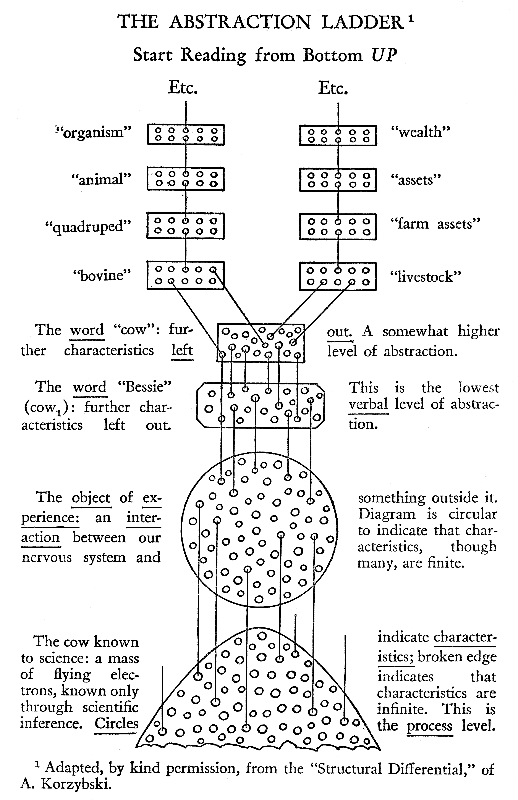
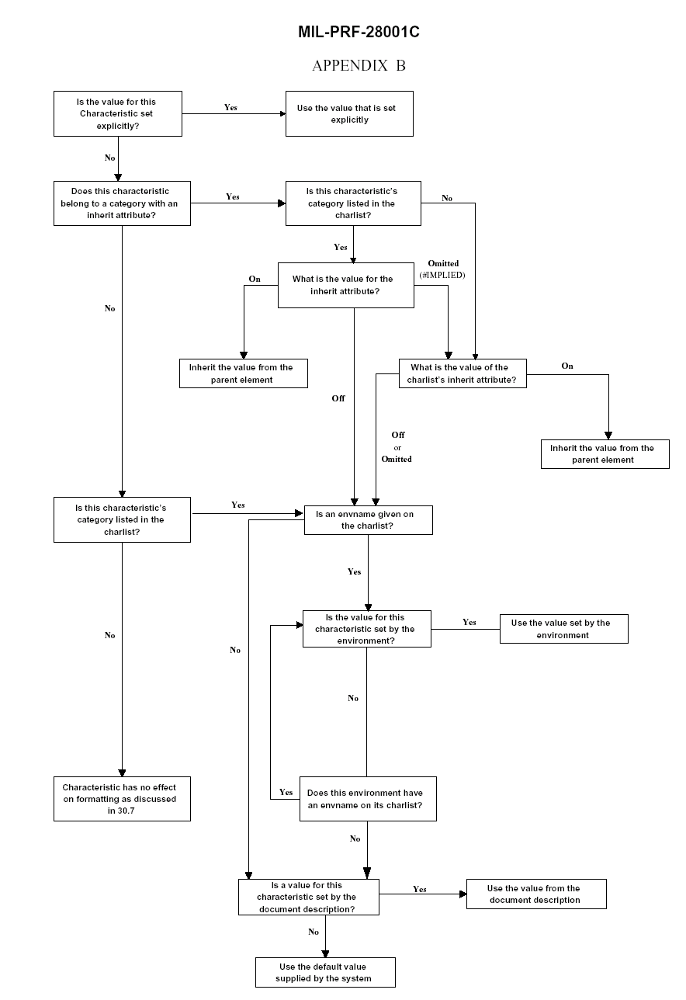
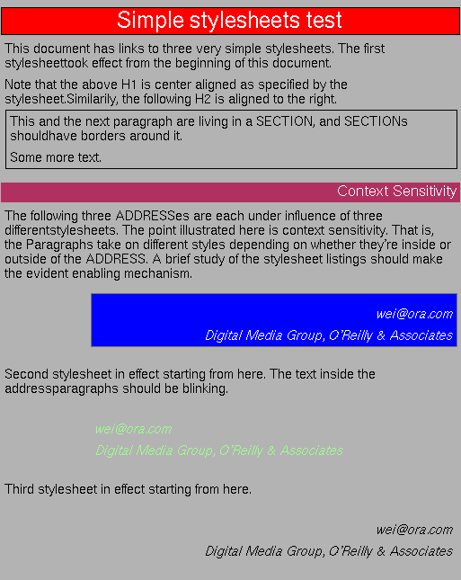

哲学博士学位论文
奥斯陆大学数理与自然科学系
挪威
2005
©Håkon Wium Lie版权所有, 1994-2005
本论文中文版遵守并同样采用署名-非商业性使用 2.5许可 （Creative Commons Attribution-NonCommercial 2.5 License）。
（挪威）奥斯陆大学
数理与自然科学系
哲学博士
学位论文
提交于2005年3月29日
奥斯陆大学数理与自然科学系学位论文系列第498号
ISSN 1501-7710
Cover: Inger Sandved Anfinsen.
Printed in Norway: AiT e-dit AS, Oslo, 2006.
Produced in co-operation with Unipub AS. The thesis is produced by Unipub AS merely in connection with the thesis defence. Kindly direct all inquiries regarding the thesis to the copyright holder or the unit which grants the doctorate.
Unipub AS is owned by The University Foundation for Student Life (SiO)
本论文的主题是面向Web中结构化文档的样式表语言。由于Web具有鲜明的特征，例如以屏幕为中心的发布模型、众多的输出设备、不确定的分发渠道、强烈的用户偏好色彩，以及内容与样式间晚绑定的可能性等，我们认为Web需要一种有别于传统电子出版领域的样式表语言。
本论文分析比较了Web之前出现并使用的样式表语言和1993～1996年间针对Web提出的样式表建议。介绍了以Web为中心的样式表语言––CSS（Cascading Style Sheets，层叠样式表）的设计。CSS具有很多突出的特性：层叠、伪类和伪元素、前向兼容的解析规则、支持多种媒体类型，而且特别强调选择符的运用。此外，本论文也分析了CSS存在的问题，并探讨了未来的研究方向。
样式表造就了神秘空间中的虫洞。 ––James D Mason, 1994（出处：Forwarded from Dr. James Mason re DSSSL，另见：虫洞、wormhole）
样式表语言很大程度上还处于研究阶段。 ––Philip M Marden, Ethan V Munson, 1999（出处：Today's style sheet standards: the great vision blinded，另见：Editing with Style）
你们打算以什么语言出版帕西法尔的第一版？虽然我喜欢拉丁文，但我担心这种文字不容易被人接受（特别是出版商）。要是以德文形式出版，请务必使用稍大一些的铅字，以保证印刷质量。我希望能很容易就看清每个字。 ––出自Richard Wagner写给出版商Ludwig Strecker的一封信（另见：理查德·瓦格纳、Richard Wagner）
在翻看自己的博士论文时，我发现自己总会情不自禁地阅读致谢部分。毕竟，这是作者暂且从枯燥的理论中抽身出来，表达自己多年累积的失落和感激之情的地方。研究和探索CSS（Cascading Style Sheets，层叠样式表）整整10年了，这期间的失落和感激各占一半。在此，我只想通过文字表达后者，还是把失落留给铅条（leading）吧。粗体的术语将在术语表中给出解释。
最先要感谢我的父母，Sissel和Alfred Lie。我父亲在50岁时取得了博士学位，可见他对学术的浓厚兴趣，而我用10年左右的时间把他打败带给他的安慰远甚于我。我母亲对出版事业的挚爱，和她在文件编排方面的丰富经验也促使我把自己的笔记整理成册。我也因此把打败父亲先取得博士学位的接力棒传给了自己的孩子。或者，至少能让他们早一点整理好自己的笔记。
有两个值得特别提出并感谢的人；没有他们，就不会有这篇论文。Bert Bos加入我的团队时，CSS的名称虽已确定但构想仍不成熟，距离明确的标准还有相当差距。1995年夏天，经过几周时间断断续续的努力，CSS终于在起草的白板中破壳而出。在Sophia-Antipolis（位于法国海港城市尼斯西北，是法国著名的技术园区，W3C欧洲总部所在地。官方网站链接。––译者注）渡过的日日夜夜，将成为我人生中最美好的一段回忆。Karen Mosman是我的出版人、缪斯和伴侣。她坚定不移的支持，让我的作品和我的人都更上了一层楼。对我的作品和我的人，我无话可说；但是，Karen则几乎可以说是完美无暇的。
W3C（The World Wide Web Consortium，万维网联盟）一直是CSS温暖的家。我感谢 Tim Berners-Lee和 Jean-Francois Abramatic，他们设置的组织机构是CSS诞生的必要条件。当然，我还要特别感谢Tim，他虽然发明了Web，却没有以发明人自居，为别人的留下了填补格式化空白的机会。在W3C的同事当中，Dave Raggett和Dan Connolly对我的早期工作给予了大力支持。Dave的浏览器（后来命名为Arena）是测试CSS的一个非常好的平台。Dan在身体刚刚康复不久，就推荐我向W3C HTML ERB（Editorial Review Board ，编辑评审委员会，Dan和Dave当时是这个委员会的主席）展示CSS。
在此，我想起了1996年4月ERB会议上的一件小事。因为我当时的主要任务是展示CSS，不是参与HTML讨论，所以我也肩负了做会议记录的任务。凑巧的是，HTML下一个版本的名称就是在那次会议上确定下来的。但愿大家能原谅我在此透露那次会议的一段记录（相关人员使用了化名）：
有人提出了名字的问题，于是会议转换为头脑风暴模式。
建议分为3组：
––版本号：3.1、3.2、3.5、4.0
––代号：Wilbur、Classic HTML、Unified HTML、
Common HTML、W3C HTML
––混合方式：HTML96、W3C HTML4
最后，大家的意见都倾向于版本号。NN认为Wilbur的变化非常大，
有必要冠之以一个主版本号：4.0。其他人都不喜欢名字中带个0。
最后，经过讨论和投票确定了“HTML 3.2”。
于是，我偶然地成为了在电脑中敲入如今已广为人知的HTML 3.2
的第一人。一个人敲了几下键盘，印证了Web的一次巨大飞跃。
在W3C内部，CSS工作组从来都是激情四射的地方。几年时间，许多绝顶聪明而且非常专注的人加了这个工作组。其中，我特别想感谢Ian Hickson、David Baron、Tantek Çelik、Daniel Glazman和Eric Meyer。此外，对最早担任W3C样式表工作组主席的Steven Pemberton、主持该工作组多年的Chris Lilley，以及在编辑岗位上任劳任怨的Ian Jacobs，我都要致以谢意。
1999年，在CSS1和CSS2制定完成后，为了确保它们至少能被一款浏览器正确实现，我加入了Opera Software。我要在此感谢这家优秀公司的创始人Jon von Tetzchner和Geir Ivarsøy。感谢Geir和Karl Anders Øygard，这两位Opera显示引擎的幕后设计者做到了让CSS在各种尺寸的屏幕上都大放异彩。还有Snorre Grimsby、Rijk van Geijtenbeek、Brian Wilson和Sue Sims，感谢他们在内部和外部对CSS的支持。
有很多人为本论文的写作提供了帮助。Paul Grosso、Vincent Quint、Pamela Gennusa、Ethan Munson、Joe English、Harvey Bingham、Paul Prescod、Jany Quintard、Yann Dirson、Dave Pawson、Ian Castle、Didier P. H. Martin、Geir Ove Grønmo和Bette Harvey，回答了我许多有关过去的问题。Joe English、Wayne Gramlich、James Mason、Jeff Moore和Dan Connolly，同意我引用了他们尚未公开的著述。而瑞典皇家歌剧院的Gunilla Petersén，让我知道了Wagner在信中所说的那些有启发性的话。
本论文的主题是面向Web的样式表。因此，我要感谢提出建议的作者，他们的建议为本论文的研究贡献了丰富的素材。本论文虽然分析了他们的建议，但并不能保证分析得恰如其分，我担心会误解甚至曲解他们的想法。假如真有这种情况，请跟我联系。此外，还得感谢在www-talk、www-html和www-style邮件列表中参加讨论的人们。如果没有构建于这些邮件列表之上的社区，Web绝不会有今天这样的气象。
CSS借鉴了源自MIT媒体实验室的许多思想––我曾在该实验室完成了两年学业。感谢在潜移默化中灌输给我这些思想的Walter Bender和Andy Lippman。在奥斯陆大学，Ole Hanseth和Gisle Hannemyr鼓励我在笔记的基础上起草论文，并就如何撰写论文给了我很多建议。没有他们，恐怕我至今也不会从那些笔记中理出头绪来。
感谢Anthea Vaughan耐心地编辑我的论文稿。
最后，我还想感谢创造FrameMaker、GNU-emacs和Prince格式化程序的人。FrameMaker教会了我排版，GNU-emacs宽容地接受了我的手写标签，而Prince则把这篇论文诉诸于纸媒体。
本论文的主题是面向Web中结构化文档的样式表语言。本论文假设Web需要一种有别于传统电子出版业使用的样式表语言。在此基础上，将讨论一种符合Web特殊要求的样式表语言的设计，这种样式表语言就是层叠样式表。可以把本论文分为3大部分，为什么 部分包括第1～5章，怎么样 部分包括第6～9章，而第10章则是对未来趋势的探讨。
第1章简要介绍了本论文内容及相关主题。阐述了开发CSS的历史背景，包括HTML的发展历程––从最初的结构化文档，到不同浏览器引入的表现性标签。涵盖了结构化文档、样式表，以及层叠等关键性概念。
样式表语言与结构化文档是相互依赖的关系。没有样式表，就无法表现结构化文档，而没有结构化文档，也就没有什么需要样式表来表现。第2章首先引述了抽象阶梯的思想，并动议以该思想作为度量结构化文档格式的工具。继而比较了一些典型的结构化文档格式，包括Web之前出现的（Scribe、LaTeX、ODA、SGML）和针对Web开发的（HTML、 XML）。 最后，讨论了转换语言与样式表语言的角色问题。
从第3章起，我们开始深入探讨样式表。本章第一部分设立了判定样式表语言的一系列标准––即样式表语言必须具备的6大组件：语法、选择符、属性、值和单位、值的传播以及格式化模型。接下来，依次讨论了Web之前出现的3种样式表语言（FOSI、DSSSL和P94）。既介绍了这些样式表语言的历史背景，也从技术上对它们给出了评述。
本章全面考察了1993～1996年针对Web建议的样式表语言。根据前一章设立的标准，总共评述了9种不同的建议。
在Web上发表内容不同于电子出版过程。本章讨论了Web的6个特殊要求。无论Web之前的样式表语言，还是后来针对Web提出的样式表语言建议，都不能完全满足在Web上发表内容的要求。
本章是本论文怎么样
部分的首章，详细介绍并根据第3章设立的标准评价了CSS。第5章也基于Web的要求评价了CSS。
本章讨论了CSS规范中存在的以及与之相关的问题。包括某些功能是否达到了应有的要求，甚至提到了一些简单的拼写错误。这一章大致按照问题的复杂程度组织，首先从已经处理的简单错误开始。随后，讨论该规范中现有的、已发现的问题。最后一节专门探讨了层叠机制存在的问题。
本章介绍如何在小屏幕中利用层叠来呈现网页。通过细心地编写浏览器样式表，可以把网页重新格式化成合适的窄列，以避免水平滚动。
本章讨论CSS的一种新式应用––表现超链接信息，而不是样式信息。利用层叠链接可以配置一种包含超链接的新标记语言，用户代理无需知道链接信息是如何编写（码？）的。
本章对预期能获得有用成果的未来研发领域进行了探讨。
结论支持了本论文的论点：鉴于自身的特殊性，Web需要一种不同于传统电子出版行业使用的样式表语言。最后，列出了本论文的主要贡献：抽象阶梯、样式表语言的6大组件、Web对样式表语言的要求和CSS。
1990年前后，Tim Berners-Lee开发了作为World Wide Web项目基础的三个规范：HTML（HyperText Markup Language，超文本标记语言）、URL（Universal Resource Locators，统一资源定位符）和HTTP（HyperText Transfer Protocol，超文本传输协议）。其中，HTML作为Web的文档格式，URL用于表示文档之间的链接，而HTTP则用于在连接到因特网的机器之间传输文档 [Berners-Lee 1999]。这些规范及相应实现均通过CERN（Conseil Européen pour la Recherche Nucléaire [法语]欧洲核子研究组织）以自由免费的形式发布。
此后，Web开始快速发展。1993年，NCSA（National Center for Supercomputing Applications， 美国国家超级计算应用中心）推出了Mosaic浏览器[Andreessen 1993a]。用户突然发现自己使用这款诱人的浏览器，可以方便地在内部互相链接的文档之间冲浪（surf）了！随着用户数量的增加，更多的作者被吸引到Web上来，相应的内容也大量产生。
刚开始的时候，HTML只是一种简单的结构化文档格式，它通过把带标记的标签加在文本字符串两端来表明文本的角色。例如，可以把一个文本字符串标记为段落，而把另一个文本字符串标记为可以点击的链接。早期HTML中的元素都是逻辑性而非表现性的。换句话说，HTML可以把某些文本标记为标题，但不能描述如何表现该标题。至于文本的表现（包括字体、颜色及字号），主要由浏览器决定。
像CERN这样的科研机构，其重视逻辑、结构及内容的程度要远甚于重视美化、表象和样式。其中，结构化的理念就反映在了HTML中––段落就标记为段落，而对标题则分别给出了相应级别的编号，以表明其在文档结构中的位置。
随着Web对非科研人员吸引力的与日俱增，作者们开始抱怨自己对页面外观的影响力太有限了。刚接触Web的作者们最常抱怨的一个问题就是怎样修改元素的字体和颜色。以下内容摘自1994年初发送到www-talk [www-talk]邮件列表的一封邮件[Andreessen 1994a]，当时的Web作者与浏览器开发商之前针锋相对的局面由此可见一斑本章只引用了发送到开发人员社区邮件列表中的一封邮件，但后续章节还会大量引用。邮件列表是Web社区早期沟通中最重要的一种渠道，而邮件列表形式的超文本文档的迅速流行始自1990年初。十几年后的今天，这些文档成了研究当时Web设计与开发思潮的重要资料：
实际上，对我而言，不停地告诉那些––留点神，很吓人噢––想要像在TeX、Microsoft Word，还有其他常见的文本处理软件中那样控制文档外观的人（这样的人是一批一批的––真的，一点也不夸张）说：“抱歉，您喝多了吧？”，是我这一年来最大的乐趣。
这封邮件的作者是马克·安得烈（Marc Andreessen），他是开发当时流行的NCSA Mosaic浏览器的一名程序员。后来，他跟别人一块成立了网景（Netscape）公司，该公司通过向HTML中引入表现性标签，满足了Web作者们的需求。1994年10月13日，网景公司发布了他们浏览器的第一个beta版[Andreessen 1994b]。这款名为Netscape的浏览器支持一组新的表现性的HTML标签（例如用于居中文本的CENTER），后来很快又添加了更多同类标签。
通过向HTML中添加表现性标签，这门语言就从最初作者们用来标记文本不同逻辑角色（段落、标题、列表，等等）的抽象、结构化的标记语言，演化为关注文档表现最终形态（字体、颜色和布局）的具体的、表现性语言。
对于传统、基于纸介质的出版物而言，读者看到的是最终形态的产品。纸面上的每个字母都具有固定的位置、形状、大小和颜色，任何读者都无法更改。但电子文档则是未完成的产品，在将电子文档呈现给读者之前，必须经过“组装”。在这个“组装”––或者更通俗的格式化––的过程中，需要围绕如何表现文档作出很多选择。例如，浏览器必须针对彩色显示屏选出用以表现文档的字体和颜色。而电子文档所需的处理层次，很大程度上取决于文档的格式。从某种意义上看，此时的电子文档有点类似家具：有的家具是组装好的，但有的家具买回来时只是装在纸箱子中的平板，买主需要自己把它们组装起来。如果文档的格式需要较多处理，我们就说它具有较高的抽象层次。如果文档的格式需要较少处理，就说它具有较低的抽象层次。
确定恰当的抽象层次是设计文档格式时的一项重要决策。抽象层次高，则文档的创作和格式化也会变得复杂。一方面，作者必须考虑不可见的抽象概念；另一方面，位于接收端的浏览器必须把抽象的元素转换为具体的对象（如果元素是高度抽象的，这个过程会更加复杂）。高度抽象的优点是内容可以在更多的环境下重用。例如，标题在打印到纸面上时，可以采用较大的字号，而在文本朗读（text-to-speech）设备中，可以采用较大的音量。
反之，较低层次的抽象会使文档的创作和格式化更简单（在一定程度上）。在这种情况下，作者可以使用所见即所得（What You See Is What You Get，WYSIWYG）工具，而浏览器在展示文档之前也不必执行太多转换操作。以表现为中心的文档格式的缺点，是内容不便于在其他环境下重用。例如，不同尺寸的屏幕可能很难正确显示围绕表现设计的文档，而视力不好的人也会因此觉得不方便。
在把文档从一种格式转换为另一种格式时，两种格式的抽象层次有可能会不一致。一般来说，把文档从较高的抽象层次转换为较低的抽象层次是可行的，但反之则往往行不通。本论文将介绍一种用来度量抽象层次的“抽象阶梯”。
向HTML中引入表现性标签，导致了HTML在抽象阶梯中的下滑。其中有些新元素（如BLINK）则只针对特定的输出设备（文本朗读设备怎么表现闪烁的文字呢？）HTML的创造者希望它能够在多种设备中使用，但表现性标签损害了这门语言的设备无关性、易访问性，也妨碍了文档内容的重用。
HTML发展为以表现为中心的语言同样改变了作者与用户之间的权力平衡。结构化文档在通过浏览器表现以前，必须要经过格式化。而用户可以––在某种程度上––影响格式化的过程。但是，如果浏览器取得的文档已经处于最终形态，即格式化已经完成，此时即使用户想要影响文档，也难得其门而入了。
Web作者曾一度要求拥有对文档表现的更多控制权，因此基本上对这一发展持欢迎态度，但Web社区中也出现了反对的声音。很多人认为Web有可能成为一种个性化的发布平台，换句话说，读者––而非发布者––应该拥有控制权。读者应该可以通过偏好设置来选择内容，也应该可以选择表现的媒体和形式。而把HTML改造成表现性语言，会导致在实现以用户为中心的发布模型的过程中，失去某些本来必要的自由度。
作为对HTML从结构化语言向表现性语言演化的一种替代，有人提出了样式表的建议。在传统出版领域，样式表的作用是让文档保持一致性（ensure consistency）
[Chicago 1993]。在传统出版流程中，一份手稿都会有一个样式表，这个样式表是作为适用于特定手稿的措词和语言运用规则清单（running account of rules about diction and language usage adopted for a particular manuscript）
[Brüggemann-Klein&Wood 1992]而存在的。
1980年，个人计算机被用于起草手稿给出版界带来了显著变化。电子出版技术为写作、编辑、印刷等出版流程的各个阶段都提供了相应工具。在电子出版过程中，样式表变成了一组关于如何表示内容，而非如何写作的规则。 样式表通常由设计人员 制定，由印前排版人员落实。通常，样式表描述的是以文本为中心的文档的视觉布局，包括字体、颜色和空白。
在本论文中，术语样式表指的是一组规则，这组规则将样式化属性和值与文档中的结构化元素联系到一起，从而表达如何呈现文档。样式表一般不包含文档内容，可以从文档中通过链接引入，而且是可以重用的。以上这个定义能够同时适用于电子出版及Web发布领域。
1980年前后，电子出版系统中开始使用样式表（见第2章和第3章）。样式表与结构化文档结合，提供了内容与表现的后绑定 [Reid 1989]机制，即内容与表现是在创作完成之后才合并的。这种机制之所以吸引出版商，原因有二：首先，一套出版物可以共用一个样式表。其次，作者无须关心出版物的表现，因此可以专注于内容创作。
事实也是如此，很多作者都有一种如释重负的感觉，他们在创作过程中不必再为表现性的细节而担忧了[Cailliau 1997]。可是，大多数作者仍然倾向于使用注重表现而非结构的创作系统。 [Sørgaard 1996].
“所见即所得”是创建文档的一种竞争性模型。所见即所得的应用程序 可以实时更新最终形态的文档表现。当作者输入内容时，屏幕就会动态更新以反映每时每刻打印文档的布局效果。
与采用结构化文档与样式表时后绑定内容与表现不同，所见即所得模型使用的是实时绑定，即所有编辑操作会导致的最终表现的视觉变化会实时展示出来。这种模型经常会引导文档作者关注最终表现––打印出来的效果如何––而不是关注逻辑标记。
不过，也出现了一些尝试将结构化文档与所见即所得编辑结合起来的应用程序，如Adobe公司的FrameMaker[FrameMaker]，微软公司的Word[MS-Word]以及W3C的Amaya[Amaya]。这些应用程序通常会为作者提供多种文档视图，其中一种就是所见即所得视图，其他则是更侧重于体现文档结构的视图。这样，使用所见即所得工具创作结构化文档就成为了可能。然而，与此同时也存在相应的风险：作者纯表现性的修改，有可能与文档结构不一致。
研究表明，如果创作文档以印刷为最终目的，则很难指望作者从逻辑而非视觉层次考虑问题[Sandahl 1999]。不过，随着Web的出现，内容重用的可能性大大增加。与通过纸介质印刷和分发文档不同，Web文档以电子形式传送到用户的计算机中。文档分发方式的电子化从以下几个方面影响创作流程及样式表语言。
由此可见，随着Web的出现，样式表由作者创作过程中的工具，变成了生成内容之后重用内容的工具。样式表对Web之所以比对纸媒出版更重要，就是因为Web环境下基于样式表重用内容的可能性要大得多。正如样式表从纸媒出版转向电子出版一样，这一次样式表又转向了Web发布。
在CERN的NeXT机器中，出现了以硬编码形式写到第一个WWW 客户端 实现中的样式表。但是，当时并没有针对样式表的规范，也没有人对样式表语言的语法给出建议。大家都认为怎样向用户显示页面最好应该由每个浏览器决定。
但不管怎样，在Web中使用样式表的好处则是显而易见的。一个精心设计的样式表机制能够提供给作者的样式控制能力，要比他们通过发展HTML所得到的丰富得多。更重要的是，（使用样式表能够保证）HTML仍然还是一种结构化的语言，因而可以广泛重用于各种设备。
因此，www-talk邮件列表 [www-talk]（早期Web社区中的电子会场）中有很多人都赞同Web会因为有了样式表而发展得更好。但是，在讨论Web是需要一种新样式表语言，还是使用现有的一种主要为纸媒出版设计的语言即可这个问题时，大家的意见发生了分歧。
1993年，有人针对Web提出了几个样式表语言建议（见第4章 针对Web的样式表建议），但这些建议都没有发展起来。原因主要是缺乏浏览器的支持；如果Mosaic——这个当时最流行的浏览器——不支持样式表，那么作者就不可能愿意花心思去写样式表。此外，这些样式表也都没有改进到一种稳定状态。而面向Web的样式表语言要想获得成功，就要同时能够引起浏览器开发人员和作者们的兴趣，让他们愿意去实现和使用。
在Netscape宣布其新版本浏览器3天前，本论文作者在Web上发布了第一个CSS建议（名为Cascading HTML style sheets – a proposal（层叠的HTML样式表））[Lie 1994]。除描述了文档的字体、颜色和布局（此前已有建议涉及的内容）外，CSS还提出了一种新功能，用于解决基于Web的发布模式的新问题。CSS提出了 层叠 的新概念，而这也是一种同时允许作者和用户来影响文档表现的机制：
建议的模式向浏览器提供一组按顺序排列（层叠）的样式表。用户提供最初的样式表，该样式表的目的有可能是完全控制整个文档的表现，但更可能的则是对文档中将来引用的样式表施加影响。
在读者的需求与作者的愿望之间建立协商机制，是CSS的主要目的之一。在一切完备的情况下，作者就能够以应有的方式对文档表现施加影响，同时不会因此求诸于表现性HTML标签，也不必使用其他技巧。另一方面，用户在接收到文档之后，也应该有权选择是否接受作者建议的表现，或者使用自己设计的表现。
多数情况下，作者与读者之间不会有什么冲突。或者说，双方都不想指定文档的表现。在这种情况下，浏览器拥有一个 默认样式表 就非常重要了。顾名思义，这个默认样式表用于描述HTML文档的默认表现。因此，CSS定义了三个可能的样式表来源：作者、读者和浏览器。CSS能够把这三个来源的样式表组合起来，最终确定文档的表现。而组合这些样式表——以及解析可能存在冲突——的过程，就叫做层叠。
最初的CSS建议是在关注Web该向何处去的大背景下本着开放的精神提出来的，而且也在公开的邮件列表中进行了讨论。不少人对这个建议给出了回应（参见 [Bos 1994][Behlendorf 1994][Wei 1994] ），而这份 草案 也因此得到了进一步发展。1995年一年的时间内，先后大约有8个修订版陆续发布。其中最后一个版本发布于1995年12月，该版本被宣布为稳定版，而浏览器提供商也 被鼓励使用它作为实现的基础
[Lie 1996]。
在1995年12月的这份草案中，CSS语法已经趋于稳定（个别情况除外），而该规范开始的部分仍然可以拿来作为CSS的一个简介：
设计简单的样式表很容易。只要懂一点HTML和一些基本的桌面出版术语即可。例如，要把H1元素的颜色设置为蓝色，可以这样写：
H1 { color: blue }
这个例子由两个主要部分组成：选择符（H1）和声明（color: blue）。声明又包括两部分：属性（color）和值（blue）。
1996年12月，CSS1规范成为了W3C推荐标准 [CSS1 1996]。1998年5月，CSS2成为了W3C推荐标准 [CSS2 1998]。第6章 层叠样式表 详细地介绍了这两个推荐标准的发展过程。
在最初的CSS建议发布10年后，所有主要的Web浏览器都支持了CSS，而大部分网页也都使用了CSS。虽然现在评估CSS的价值及其对Web的影响还为时尚早，但研究一下CSS的设计并将其与其他样式表语言和其他样式表语言建议作一比较还是有可能的。
本章介绍了本论文中用到的一些关键性概念。HTML是作为Web上的一种简单、结构化的文档格式被开发出来的。由于Web作者们要求拥有更多控制文档表现的手段，HTML逐渐发展成一种表现性而非结构化的语言。为了阻止这种沿着抽象阶梯向下滑的现象，CSS作为基于Web的一种样式表语言被提出。早在1980前后，电子出版领域就已经使用样式表了。对Web而言，样式表的角色需要从创作过程中的工具转变为对生成后内容进行重用的工具。
本论文将详细探讨 为什么 Web需要一种不同于其他出版（发布）领域的样式表语言，以及 如何 设计这样一种语言。然而，在展开讨论之前，有必要先熟悉另外两个主题。首先，必须理解结构化文档的概念。因为样式表的应用对象就是结构化文档。其次，要研究Web诞生之前的样式表语言，只有这样才能知道这些语言中是否有哪个适合在Web上使用。第2章和第3章将分别探讨这两个主题。
样式表语言与结构化文档格式是相互依存的。没有样式表，结构化文档无法表现，而没有结构化文档，样式表就没有什么可以表现。由于这两者之间存在着强关联性，因此要研究样式表语言，就必须先理解结构化文档。本章将讨论几个对样式表语言产生过重大影响的结构化文档系统 。
在Structured Documents（《结构化文档》） [André et al. 1989]这本具有开创意义的书中，有如下定义：
可以用一组对象来描述文档，其中较高层的对象由较原始的对象组成。对象间的关系表示文档部件之间的关系。例如，这篇文档在最高层次上被描述为一本书。而这本书分为很多章，每一章又分为节、小节、段落，等等。这种文档组织方法，就是我们常说的结构化文档表示法。
结构化文档表示法的一个主要特点就是具有某种层次的抽象。当结构化文档与样式表共同构成表现时，文档抽象的层次就显得至关重要。因此，本章开始先来讨论一下结构化文档中的抽象层次，并推荐一个用于度量Web文档格式抽象层次的抽象的阶梯。
接下来，本章将介绍几个具有重要地位的结构化文档系统，即Scribe、LaTex、ODA（Open Document Architecture，开放文档架构）SGML（Standard Generalized Markup Language，标准通用标记语言）、HTML（HyperText Markup Language，超文本标记语言 ）和XML（Extensible Markup Language，可扩展标记语言）。对这些系统，我们将分别介绍它们的历史和技术发展沿革，并着重分析它们与样式表语言的关系。
本章最后讨论面向Web的转换语言与样式表语言之间的关系。
In his book, Language in Action, Hayakawa [Hayakawa 1940] introduces the notion of a linguistic ladder of abstraction. At the bottom of the abstraction ladder is an object. As an example, Hayakawa uses a cow named Bessie. The cow is composed of muscle, bones, skin and other biological parts. As the first step up the ladder, we disregard the biology inside the cow but retain its physical properties – for example its color, size and shape – and we call it Bessie. Bessie is just one of many objects that can be classified as cows. On the farm where Bessie lives, there are many other kinds of animals that can all be referred to as livestock. The climb up the ladder of abstraction can continue to farm assets and wealth. This concept is illustrated in Figure 1.

The ladder of abstraction. Illustration reprinted from Hayakawa [Hayakawa 1940].
A similar example of abstraction levels can be found in the field of computer networking. In 1983, the International Standards Organization (ISO) developed a network model called Open Systems Interconnection (OSI) Reference Model which defined a framework of computer communications. The ISO/OSI Reference Model has seven layers, each of which has a different level of abstraction. The seven layers are: physical, data link, network, transport, session, presentation and application.
I believe the notion of an abstraction ladder is useful when evaluating document formats. How high a certain document format is on the ladder will determine the complexity of formatting the document into a presentation. Since the formatting of a document is specified by a style sheet, the abstraction level is a crucial feature for the success of style sheets.
The vertical nature of a ladder corresponds to how one describes abstraction levels as high or low. Typical characteristics of document formats that are high on the ladder of abstraction are:
Conversely, documents written in formats that are low on the ladder of abstraction need less processing in order to be presented, they have less flexibility of presentation, and they are less compact.
Another important observation is that it is generally possible to transform documents downwards on the ladder but much more difficult to move the other way [Lie&Saarela 1999]. For example, graphical web browsers – in collaboration with the windowing system – rasterize HTML documents into pixels and thereby move information downwards on the ladder of abstraction. Optical Character Recognition (OCR) software attempts to climb the ladder by turning images into text, but OCR systems only work under certain conditions and are prone to errors. Similarly, it is impossible to devise an algorithm that converts documents written in a Turing-complete language due to the halting problem [Connolly 1994a].
In the context of web document formats, I believe the following criteria can be used to establish the steps in the ladder of abstraction:
A comparison of document formats on the ladder of abstraction.
| GIF, PNG | private XML vocabulary |
XSL-FO | HTML | MathML | ||
|---|---|---|---|---|---|---|
| application- specific semantics? |
no | no | no | no | no | yes |
| device-independent? | no | no | no | no | yes | yes |
| roles known? | no | no | no | no | yes | yes |
| text in logical order? | unknown | unknown | no | yes | yes | yes |
| reflow possible? | no | unknown | no | yes | yes | yes |
| scalable? | no | unknown | yes | yes | yes | yes |
| text machine-readable? | no | yes | yes | yes | yes | yes |
| text human-readable? | yes | yes | yes | yes | yes | yes |
Table 1 shows the relative positions of various document formats on the ladder of abstraction. Some notes to the table:
Having established the ladder of abstraction as a measuring tool for structured document formats, the next section discusses structured document systems in more detail.
Beginning around 1980, there was an active research community in the field of electronic publishing and structured documents. The community published their results in the proceedings of the Electronic Publishing conferences, in the journal Electronic Publishing – Origination, Dissemination and Design [Electronic Publishing], and Cambridge University Press published a series of books on the topic. Richard Furuta lists many of the important works in Important papers in the history of document preparation systems: basic sources [Furuta 1992].
The researchers generally agreed on the benefits of vendor-neutral document formats to facilitate document exchange. The benefits of structured documents were also well understood. There were, however, several approaches to structured documents, and competing formats were developed. This section describes and discusses four of them.
One line of development started in the late 1970's when Brian Reid developed Scribe [Reid 1980]. Scribe pioneered the notion of structured documents and enforced a distinction between logical markup and presentational templates in the authoring process. The Scribe philosophy was continued in Leslie Lamport's LaTeX which was first released in 1985 [Lamport 1986]. LaTeX is a macro package on top of Donald Knuth's TeX program which serves as the low-level formatter [Knuth 1984].
Open Document Architecture (ODA) is a set of ISO standards to facilitate the electronic exchange of documents [ODA]. ODA documents can represent both the logical and the presentational representation of a document.
Standard Generalized Markup Language (SGML) [SGML 1986] and its predecessor GML were developed by Charles Goldfarb and colleagues during the 1970s and 1980s [Furuta, et al. 1982]. SGML became an ISO standard in 1986.
These six systems (Scribe, LaTeX, ODA, SGML, HTML and XML) are described in this section. Before discussing each one, it may be helpful to informally list the perceived ambitions and achievements of the six systems. see Table 2.
The ambitions and achievements of the six different structured document systems.
| Is primarily a system to define new languages? | Has notion of document semantics? | Has notion of document presentation? | Enco- ding |
Reference | Level of complexity | Main achievement | |
|---|---|---|---|---|---|---|---|
| Scribe | no | yes | yes | text | implementation | moderate | inspired LaTeX |
| LaTex | no | yes | yes | text | implementation | moderate | de facto format in scientific publishing |
| ODA | no | yes | yes | binary | specification | high | became ISO standard |
| SGML | yes | no | no | text | specification | high | became ISO standard, inspired HTML and XML |
| HTML | no | yes | some | text | specification & implementation | moderate | universally understood hypertext format |
| XML | yes | no | no | text | specification | moderate | syntactic basis for emerging formats |
For a more formal taxonomy of document formats, see The Origin of (Document) Species [Khare&Rifkin 1998].
In addition to the achievements listed in Table 2, all systems should be credited for having inspired authors and programmers to see the benefits of structured documents.
The discussions of the various structured document systems below do not follow a strict pattern. The systems vary widely in how well they are understood, how much use they have seen, and how much information is currently available about each system. The primary goal of the descriptions is not to perform a comparative analysis, but rather to discuss aspects of these languages which this author finds interesting in the context of style sheets.
The Scribe system was developed in the late 1970s by Brian Reid at Carnegie-Mellon University [Reid 1980]. Scribe is noteworthy for pioneering the structured approach to authoring. It encourages authors to work with predefined logical objects, and authors typically produce documents in their final form without having to specify any of the formatting.
The Scribe system changed somewhat over the years. The discussion in this chapter is based on Scribe as described in Scribe Introductory User's Manual from 1980 [Reid&Walker 1979]. The description attempts to give a general overview of Scribe, and not all features are discussed.
A Scribe document can be remarkably simple:
@Make(Text) @Device(Diablo) @Heading(Comrades and Strangers)
The example above uses three key concepts of Scribe: document types, commands, and formatting environments. The first line chooses a particular document type (Text) from a set of different document types. The second line is a command which specifies that the document should be printed on a specific device. The third line specifies that a certain string (Comrades and Strangers
) is the heading of the document.
An installation of Scribe comes with a database of document types. The Scribe documentation lists 11 different document types: Text (which is default), Article, Report, Manual, Thesis, Brochure, Guide, Letter, Letterhead, ReferenceCard, and Slides. A Scribe document typically starts by selecting which document type to use:
@Make(Thesis)
The system administrator of the Scribe installation is expected to change the database to fit local needs. For example, the formatting requirements of a dissertation vary from one university to another, and the differences can be accounted for in the Thesis document type. In theory, authors can write their dissertations without thinking about the formatting requirements and can concentrate rather on the content.
Document types influence both the content model and the presentation of a document. For example, the Thesis document type allows and expects the TitlePage and various other environments to be used:
@Make(Thesis) @Device(Diablo) @Begin(TitlePage) @TitleBox(Comrades and Strangers) @CopyrightNotice(Michael Harrold) @End(TitlePage)
It is possible for authors to change both the content model and the presentation of their own documents, but doing so is cumbersome. Scribe encourages a mode where a local administrator maintains control over – and responsibility for – the various document types that are used in the organization.
In addition to the content itself, a Scribe source file contains Scribe commands. These correspond to what is known as markup in SGML/HTML/XML terminology. There are approximately 35 commands. They can be divided into five main groups:
@Begin and @End are used to mark the start and end of environments, and @Make is used to declare a document type.@Set, @Tag), cross-references (@Ref), and string variables (@String, @Value) that are expanded into, for example, date and username.@NewPage), add vertical spacing (@BlankSpace), handle tab stops (@Tabset, @TabDivide, @TabClear) or change style (@Style) or font (@SpecialFont).@Foot), running headers (@PageHeading) and footers (@PageFooting).@Import), specify the output device (@Device), and output a message on the console (@Message).The classification of commands into groups is done by this author.
The Scribe documentation describes commands as non-procedural. However, some of the commands are arguably procedural, most notably @BlankSpace and @NewPage. In a structured approach, page breaks are attached to structured elements (e.g. a heading) rather than using a separate command.Scribe also supports the structured approach through the Pagebreak environment Attribute.
Likewise, the @Style and @SpecialFont commands, which are used to set stylistic and font preferences, can be questioned since they are not attached to structured elements.
Another command that is easily challenged is @Device, which is used to specify the printing device for the output
. Web authors will not know what printing device (if any) the user has. Scribe, however, was used mostly with paper as the final form, and including commands like @Device is a pragmatic choice.
The most frequently used commands in Scribe are @Begin and @End which, respectively, mark the beginning and end of formatting environments. A formatting environment corresponds roughly to an element in SGML/HTML/XML terminology, and the @Begin and @End commands correspond to tags. Formatting environments are also referred to as named formatting environments or just environments. Here is a simple fragment from the Scribe documentationThe quote is from Oscar Wilde: The Soul of man under Socialism, 1895:
@Begin(Quotation) On mechanical slavery, on the slavery of the machine, the future of the world depends. @End(Quotation)
Text inside the Quotation environment is given extra space on all sides. Text can also be placed in environments through a shorthand syntax:
@Quotation(On mechanical slavery, on the slavery of the machine, the future of the world depends.)
Environments can be nested inside each other:
@Quotation(On mechanical slavery, on the slavery of the @i[machine], the future of the world depends.)
The example above also shows how different pairs of characters can be used in delimiters. The outer delimiters use () characters, while the inner delimiters use [].
All Scribe systems offer a common set of environments for authors to use. See Table 3.
Keeping in mind how important Scribe has been in the promotion of logical markup, it is noteworthy that around half of the environments have presentational rather than logical roles.
Not all structure in a Scribe document must be marked up explicitly. Scribe is able to identify paragraphs from the white space in the source document. Consider this example:
@begin(enumerate) The first item of three. The second item. The last item. @end(enumerate)
The resulting enumerated list consists of three items. The Multiple environment can be used to override the automatic structure detection:
@begin(enumerate) The first item of three. @begin(multiple) The second item. The second item has two paragraphs. @end(multiple) The last item. @end(enumerate)
One benefit of automatic structure detection is that markup in source documents can be minimized.
Common environments offered in Scribe.
| Environment | Corresponding HTML element | Corresponding CSS functionality | Comment |
|---|---|---|---|
| B | B |
font-style: bold | |
| C | font-style: small-caps | ||
| Center | CENTER |
text-align: center | |
| Description | DL |
this environment seems to provide formatting similar to HTML's DL element |
|
| Display | this environment honors line breaks and adds extra left margin | ||
| Enumerate | UL |
||
| Example | PRE |
adds extra margins | |
| FileExample | PRE |
||
| FlushLeft | text-align: left | ||
| FlushRight | text-align: right | ||
| Format | use for tabular formatting | ||
| G | uses a Greek font | ||
| Group | page-break: avoid | ||
| Heading | H2 |
||
| I | I |
||
| Itemize | UL |
||
| MajorHeading | H1 |
||
| Multiple | DIV |
see example below. | |
| O | text-decoration: overline | ||
| P | BI |
font-weight: bold; font-style: italic | |
| ProgramExample | for examples of computer programs and uses fonts accordingly | ||
| Quotation | BLOCKQUOTE |
margin: 1em | adds margins on all sides |
| R | font-family: serif | ordinary roman typeface | |
| Subheading | H3 |
||
| T | tt |
font-family: monospace | |
| Text | The default environment | ||
| U | U |
text-decoration: underline | underlines all nonblank characters |
| UN | underline letters and digits only | ||
| UX | underline all characters, including spaces | ||
| Verbatim | used for tabular formatting with monospace fonts | ||
| Verse | intended for poetry and other text where white space should be honored | ||
| W | white-space: nowrap | treats text as one word, i.e., an unbreakable sequence of characters |
As mentioned above, the Scribe database of document types and formatting environments is maintained by a system administrator. However, an author can also change or add environments to fit his needs. Here is a simple example:
@Modify(Description, Leftmargin 0.5in, Indent -0.5in)
In the above example, the left margin and indentation of the Description environment are changed. The @Modify command must appear in the beginning of the document. New environments can also be defined:
@Define(InsetHead=Subheading, Leftmargin 0.5in)
In the above example, the InsetHead environment is created. It copies all properties from Subheading except for the left margin. Environments can also be created from scratch. The documentation discourages this but specifies the general form:
@Define(Newname, <list of attribute-value paris>)
Also, the documentation lists the set of around 40 properties that define the presentation of environments.
In effect, the definition of environments in Scribe encompasses both style sheets and SGML's Document Type Definition (DTD) in one.
Scribe pioneered the distinction between structure and style and allowed authors to write documents without thinking about the formatting of the documents. The database of document types and formatting environments is maintained by a system administrator, but authors who want to modify environments or add their own are free to do so. As such, Scribe offers the best of HTML (there is a default set of tags and conventions on how to present them), CSS (there is a default set of presentational conventions that can be modified), and XML (new elements can be created). As such, Scribe may have been a better inspiration for HTML than SGML. It is also noteworthy that Scribe provided this functionality more than 15 years before it became available to authors on the web.
Scribe is no longer available for authors to use, but the historical impact of Scribe on the development of structured documents is significant. There are no references to Scribe in W3C's overview of historical systems influencing the the development of HTML [W3C 2003], but the developers of SGML do reference Scribe [Goldfarb 1991] which makes it an indirect influence. Scribe's greatest achievement may have been its influence on LaTeX. Leslie Lamport, who created LaTeX, mentions Scribe in the first edition Lamport removed the reference to Scribe in the second edition of his book for legal reasons. He writes I removed all mention of Scribe in the 2nd edition of the LaTeX book because I was informed that the person who bought Scribe from Brian Reid would have loved to find someone he could sue for infringing Scribe's patents or copyright or whatever. I disliked not crediting Brian, but I didn't want to tempt the legal fates.
[Lamport 1986]. of his book [Lamport 2003]:
Fundamental to LaTeX is the idea of a document style that determines how the document is to be formatted – an idea stolen from Brian Reid's Scribe text formatting system.
LaTeX is discussed in the next section.
The TeX typesetting system was developed by Donald Knuth for the creation of beautiful books
[Knuth 1984]. The work was started in the late 1970s and TeX became the preferred format for scientific publishing in the 1980s. Designed by a mathematician, TeX has special features for formatting mathematics but its formatting model is suitable for many types of documents. TeX has been used primarily in environments where paper is the final target. Commands in TeX typically describe spatial relationships between elements and thus are presentational. Here is a simple TeX fragment:
{\narrower\smallskip\noindent
This paragraph will have narrower lines than surrounding paragraphs.
\smallskip}
Many of the commands in TeX are macros that are expanded into basic commands by the TeX interpreter. TeX allows users to create their own macros, and several macro packages for TeX have been published. LaTeX is one such macro package which enables authors to create structured document formats.
LaTeX's author, Leslie Lamport, was a Scribe user who wanted to make LaTeX a sort for Scribe on top of TeX
[Lamport 2003]. Many of features in LaTeX were copied from Scribe but, as LaTeX developed, some Scribe features were dropped and some new functionality was added. Here is a simple LaTeX fragment:
\documentclass{book}
\title{Comrades and Strangers}
\author{Michael Harrold}
\begin{document}
\maketitle
\chapter{Red Carpet in Paradise}
\end{document}
The first line in the above example declares that the document will eventually become a book. Other document classes include: report, letter, article and slides. The choice of document class will influence the final presentation of the document, as well as the type of elements (or environments as LaTeX and Scribe calls them) that are available. For example, the chapter element, used further down, is available in a book but not in an article. The next two lines declare the title and author of the publication. The first part of the code – until the document itself starts – is called the preamble and is similar to the HEAD element in HTML.
The document body is contained in the document environment. The \maketitle command is a common way to start documents; depending on the class of document and the meta-information declared in the preamble, a proper title will be generated. The last element in the above example is a chapter heading.
There are many similarities between Scribe and Latex:
enumerate, itemize, quotation, description, verbatim, center, flushleft and flushright.There are also notable differences between the two systems:
LaTeX has been a highly successful authoring system that has seen much use, primarily in academic environments. Due to its success, LaTeX has probably done more for structured documents than any other language, bar HTML.
Open Document Architecture is a set of ISO standards that describe formats for representing and exchanging structured documents. The efforts started out under the name Office Document Architecture
in the 1980s, and the name changed to Open Document Architecture
in the 1990s when results of the efforts were published as ISO standards [ODA][Appelt 1991][Rosenberg et al. 1991].
Like ISO's OSI [OSI] model, ODA has been highly influential without having seen much use itself. ODA, along with the other systems described in this chapter, championed the idea of separating the logical representation of content from its physical presentation. However, ODA went several steps further than the other systems. Unlike SGML and XML, ODA also describes the presentation of documents. Compared with LaTex, Scribe and HTML, ODA goes further by, for example, also standardizing image formats.
ODA was developed by an industrial consortium where, among others, IBM, DEC, Unisys, Bull and Unisys were members. Also, many researchers in academic institutions took part in the development of ODA. Around 1991 the community was highly optimistic about the future of ODA [Sherman 1991]:
ODA is one of the application-layer standards in the OSI model that is starting to grow and flourish. ODA is being adopted in a variety of other standards to meet an enlarging set of needs.
However, ODA never became the success that its proponents hoped for, and was never used beyond pilot projects. There are several reasons for this. First, ODA is a complex set of specifications. It is difficult to understand the specifications and it is difficult to write software to support them. Second, ODA and SGML were perceived to be in competition with each other and the structured documents community never fully backed ODA. The difference in scope between ODA and SGML is significant: ODA is a document format that describes the syntax, structure and presentation of documents, while SGML is a system for defining the syntax of markup languages. Still the two were perceived to be in conflict with each other [Watson&Davis 1991]. Below is a retrospective remark made by the chair of the committee (ISO JTC1 SC) which defined the SGML standard [Mason 2001]:
The SGML/ODA Wars occupied entirely too much of our time and promoted an atmosphere of paranoia on the parts of several of our members. In the long run, ODA died and SGML won, but by then the forces that led to XML were already pushing people out of SC34. The technical effect on SGML was mixed: it brought us both CONCUR and Architectural Forms. The human effect was much more harmful.
The fact that ODA has never been used makes it difficult to review. Few ODA documents have been created because the software to do so was never written. Unlike the other systems described in this chapter, ODA uses a binary encoding and examples are therefore hard include in textual descriptions of the standards. Also, ODA is hard to review since the specifications are not freely available.
Instead of attempting a scholarly review of ODA, I note its role in history and challenge researchers after me to do the review I believe ODA deserves.
As mentioned in the previous section, the Standard Generalized Markup Language (SGML) is not a document format. Instead, SGML is a system which is used to create new document formats. In other words, SGML is not – despite its name – a markup language in itself, but is used to define other markup languages.
The first working draft of SGML was published in 1980 [SGMLUG 1990] and SGML became an ISO standard in 1986 [SGML 1986].
SGML is based on GML (Generalized Markup Language) which was developed at IBM over a period of years in the early to mid 1970s [Furuta, et al. 1982]. In [SGMLUG 1990] the people and motivation behind GML is described:
Together with Edward Mosher and Raymond Lorie [Charles Goldfarb] invented the Generalized Markup Language (GML) as a means of allowing the text editing, formatting, and information retrieval systems to share documents
GML became available for general use in 1978 [Furuta, et al. 1982]. A GML document looks quite different from an SGML document due to the former not using the now familiar angle brackets to denote tags. Here is a simple fragment from [Furuta, et al. 1982]:
:body. :h2.The Formatting Problem :p.In order to discuss formatters and their functions...
One of the GML creators, Charles Goldfarb, continued the work towards SGML [SGMLUG 1990]:
After the completion of GML, Goldfarb continued his research on document structures, creating additional concepts, such as short references, link processes, and concurrent document types, that were not part of GML but were later to be developed as part of SGML.
It is noteworthy that none of the SGML features mentioned in the above quote has seen much use. One of them, the LINK feature (described below), was motivated by the need to compete with ODA by offering a way to attach presentational information to documents.
SGML is a complex standard and it is beyond the scope of this thesis to give an overview of all features. Below is a description of three features that are interesting in the context of style sheets; all three features can potentially carry stylistic information.
A Document Type Definition (DTD) is a set of rules defining the syntax of a markup language. DTDs are central to SGML and all SGML-based markup languages have a DTD which describes elements, attributes, and entities – and the relationship between them. Here is a simple fragment from the HTML4 DTD:
<!ELEMENT UL - - (LI)+>
In the above example, the UL element is declared to require start and end tag (the two dashes, respectively), and the content model is set to (LI)+. The content model describes what kind of content is allowed within the declared element. In the above example, the plus sign indicates that UL elements can contain one or more LI elements. The fragment below adds more information about the LI element:
<!ENTITY % inline "A | #PCDATA"> <!ELEMENT LI - O (%inline)*>
The first line of the above example declares an entity referred to in the second line: the LI element must have a start tag, but the end tag is optional. The LI element contains inline content, which – according to the first line – is A elements or #PCDATA. #PCDATA means textual content.In HTML4, the content model for the LI is slightly more complex.
The DTD is also used to declare attributes on elements.
The HTML4 DTD uses entity names like heading, inline and block to group various elements. These names, however, do not signify any meaning; from SGML's perspective they are random strings. In the minds of the DTD creators, however, the names have a meaning that conveys logical roles as well as presentational information.
Although DTDs, by design, only convey information at a syntactical level, one could easily envision adding presentational information there. For example, this extended syntax would describe the content model, along with information about preferred fonts:
<!ELEMENT UL - - (LI)+ 11pt sans-serif>
The Scribe system, as discussed above, takes this approach when defining new environments. Also, the SSP style sheet proposal, discussed in Chapter 4, combines presentational and syntactical information in one.
A Processing Instruction (PI) is a syntactic construct in SGML that can be used to hold information about how the document should be processed, including how it should be formatted. In a message to www-talk [Connolly 1994b], Dan Connolly proposed to use PIs to describe the formatting of HTML documents:
I suggest we introduce a whole set of processing instructions so that folks can mark up the formatting of their document without affecting the structure. For example, rather than the <BR> element, I'd suggest a <? linebreak> processing instruction, and a &br; entity as a shorthand form.
SGML puts few restrictions on the content of processing instructions, and a wide range of processing instructions are possible:
<? the next element should be green >
<? background=white >
<? p { color: black } >
A W3C Recommendation describes how PIs can be used to link to style sheets from XML documents. See the section on XML below.
The SGML specification defines two types of LINK features: implicit LINKs and explicit LINKs. The latter are poorly understood and the discussion in this section pertains only to implicit LINKs.
Like processing instructions, the LINK feature was added to aid the processing of SGML documents. Like PIs too, one of the uses for the LINK feature is to add formatting information to SGML documents. There are, however, several differences between PIs and LINKs:
The main purpose of the LINK mechanism is to attach attributes to elements. Here is a simple excerpt from a link declaration:
<!LINK #INITIAL table [ ALIGN="right" ]>
The link declaration above would add the ALIGN="right" attribute to all table elements.
A slightly more advanced example shows how LINKs can be used to add attributes in a contextual manner:
<!LINK #INITIAL ul #USELINK uldef
ol #USELINK oldef>
<!LINK uldef li [ mark="bullet" ]>
<!LINK oldef li [ mark="digit" ]>
Consider this simple document:
<UL>
<LI>number unknown
<OL>
<LI>number one
<LI>number two
</OL>
</UL>
When the link declaration above is applied to the above document, it produces the following document:
<UL>
<LI mark="bullet">number unknown
<OL>
<LI mark="digit">number one
<LI mark="digit">number two
</OL>
</UL>
As can be seen from the example above, the LINK feature has some of the properties of a style sheet language (namely syntax and selectors, as described in Chapter 3). Also, the LINK feature is a generic mechanism that can be used to distribute any kind of information as long as the information can be represented in attributes. However, the LINK feature lacks a notion of formatting. For example, no properties, values or formatting model are proposed. Therefore, the LINK feature cannot be considered a style sheet language.
SGML is one of the standards that has most influenced the web, and both XML and HTML owe much of their design to SGML. SGML successfully brought important issues regarding document authoring, storage and exchange formats to the attention of the information technology communities. Especially, SGML emphasized:
Outside of a limited community, however, SGML never became the success that its proponents hoped for. This author believes there are several reasons for this:
It may be too early to pass judgement on SGML, but this author believes SGML's main achievement will be that it inspired HTML and XML.
The HTML specification is, along with HTTP and URL specifications, one of the basic building blocks of the web. HTML has had a far-reaching impact on how electronic content is authored, stored, transmitted and processed. The design of HTML is probably one of the main reasons for the success of the web.
This section discusses HTML's design and development with regard to style sheets.
The origin of HTML is described in W3C's document Some early ideas for HTML [W3C 2003]:
[In 1989] many people were using TeX and PostScript for their documents. A few were using SGML. Tim realized that something simpler was needed that would cope with dumb terminals through high end graphical X Window workstations. HTML was conceived as a very simple solution, and matched with a very simple network protocol HTTP.
Indeed, the original design of HTML was simple. The first publically available description of HTML was a document called HTML Tags [Berners-Lee 1991a], which was announced and annotated in one of the first messages [Berners-Lee 1991b] on the www-talk mailing lists in October 1991. I refer to this document as HTML-0
. It describes 22 elements that make up the initial design of HTML. In order of appearance the elements are: TITLE, NEXTID, A, ISINDEX, PLAINTEXT, XMP (described indirectly), LISTING, P, H1, H2, H3, H4, H5, H6, ADDRESS, HP1, HP2, DL, DT, UL, MENU and DIR. Thirteen of these elements still exist in HTML4 [HTML4 1997], three elements have been deprecated (ISINDEX, MENU, DIR), and six elements have been removed (NEXTID, PLAINTEXT, XMP, LISTING, HP1, HP2).
It is noteworthy that HTML-0 did not include any presentational elements. That is, HTML-0 consisted only of logical elements. This crucial design decision is confirmed in a comparison of MIME's rich text feature [Borenstein 1994] and HTML [Berners-Lee 1992a]:
Comparing MIME's rich text and HTML, I see that we lack the characetr formatting attributes BOLD and ITALIC but on the other hand I feel that our treatment of logical heading levels and other structures is much more powerful and has turned out to provide more flexible formatting on different platforms than explicit semi-references to font sizes. This is born out by all the systems which use named styles in preference to explicit formatting, LaTeX or other macros instead of TeX, etc etc.
Style sheets are mentioned once in HTML-0 in the description of the P element:
This tag indicates a new paragraph. The exact representation of this (indentation, leading, etc) is not defined here, and may be a function of other tags, style sheets etc.
Thus, the concept of style sheets was known to the designer of HTML. The program library libwww [Nielsen&Lie 1994] which was CERN's freely available implementation of HTTP and HTML, supported client-side style sheets. That is, style sheets were hard-coded in the client to support the presentation of HTML documents and were not considered to be resources to be put on the web. As such, style sheets played a minor role in the initial design of the web.
This view is supported by the fact that there was no discussion on style sheets on the www-talk mailing list from its inception in October 1991 until Robert Raisch put forward his proposal (RRP, which is discussed in the next chapter) in June 1993 [Raisch 1993a].
Although style sheets per se were not discussed on www-talk, the term styles was used a few times in the context of HTML design. In an early message to www-talk, Berners-Lee argued that a nested structure would have been preferable to the relatively shallow structure that HTML-0 offered [Berners-Lee 1991b]:
In writing a new generic parser, I wondered whether your text object will store the nested structure of a document. At the moment, the document is a linear sequence of styles: you can't have lists within lists, etc. Ideally, it would be able to handle this - although its more difficult for a human writer to handle when formatting the document. I would in fact prefer, instead of <H1>, <H2> etc for headings [those come from the AAP DTD] to have a nestable <SECTION>..</SECTION> element, and a generic <H>..</H> which at any level within the sections would produce the required level of heading.
This issue is reiterated in another message eight months later [Berners-Lee 1992b]:
So if we went for a nestable HTML which would be cleaner for those who apreciate recursion, we would have to have a hypertext editor which made the structure visible. I don't have experience enough to know whether real information providers (group secretaries, for example) would be into generating nested elements – maybe the styles are useful to keep as the current `user interface metaphor' of word processors.
The statements above argue that elements in HTML should not generally be nestable, even if nestable structures are cleaner
. One of the arguments against nestable elements is that they do not combine with a linear sequence of styles
. Berners-Lee is making these statements after having implemented an HTML parser and formatter of the libwww [Nielsen&Lie 1994] library. The percieved conflict between nestable elements and styles is probably due to limitations in the implementation. CSS later addressed this issue by introducing contextual selectors.
Like style sheets, SGML was known to the designer of HTML but played a minor role in the sense that HTML-0 was not formally specified in terms of SGML. To some extent, HTML-0 was incompatible with SGML [Berners-Lee 1991b]:
<PLAINTEXT> is used to indicate that the rest of the file is in fact just ASCII. It turns off SGML parsing completely. It's a fudge for the moment, until we have the document format negociation.
Berners-Lee also discouraged browser implementors from using strict formal methods when processing HTML documents [Berners-Lee 1993c]:
I support Marc completely in his decision to make Mosaic work as best it can when it is given invalid HTML. The maxim is that one should be
- conservative in what one does
- liberal in what one expects.
This author believes the above message was unfortunate. If Mosaic had been stricter in its parsing of incoming HTML, the markup on the web may have been much cleaner than it is today.
The philosophy of SGML was, however, a source of inspiration. In a document describing the design of HTML-0 titled Design Constraints, Berners-Lee writes [Berners-Lee 1992d]:
It is required that HTML be a common language between all platforms. This implies no device-specific markup, or anything which requires control over fonts or colors, for example. This is in keeping with the SGML ideal.
Unlike style sheets, SGML quickly became a topic of discussion on www-talk. Of 31 messages posted to the list in 1991 (the list was started in October of that year) eight mentioned SGML. In 1992, 466 messages were posted to the mailing list, of which 138 mentioned SGML.
Dan Connolly initiated many of the discussions by arguing that HTML should be defined in terms of SGML. In June 1992 he published a DTD for HTML [Connolly 1992]. In the accompanying message he argued why this was necessary:
We need an SGML DTD so that we can parse HTML using something besides the public implementation of WWW, and so that we can verify documents converted from other authoring systems such as GNU info, Andew's EZ, or FrameMaker.
Almost two years later, Connolly reached the same conclusion in a message titled Toward Closure on HTML [Connolly 1994b]:
The costs and benefits of basing using [sic] SGML to define HTML have been discussed at great length. Simplifications have been suggested [...] but at this point, it appears that there is a clear requirement that an HTML document shall be a conforming SGML document.
Connolly's message generated heated discussions on www-talk and many resisted the idea of making SGML an integral part of the web. The resistance to SGML was based on two main arguments. First, SGML was perceived to be overly complex [Raggett 1993b]:
I have a feeling that most people find the SGML DTD rather hard to follow in detail. Goldfarb's account of SGML almost seems to go out of its way to make life difficult for the newcomer.
Second, it was argued that introducing SGML at this stage was unrealistic as it did not reflect the state of the web at the time [Davis 1994] :
Dan, I don't intend this as a flame, but you need to face reality, by which I mean you need to look at what people ACTUALLY do, not what you WISH they did. As you observe, people don't use an SGML parser to validate their documents. There is no reason to think then that they will ever start. That's reality.
Despite the controversy, HTML2 was formally defined in terms of SGML and was published as RFC 1866 in November 1995 [HTML2 1995].
While HTML2 slowly moved towards becoming standardized, the www-talk community busily proposed new features for HTML. Among the most popular features was support for images and multimedia [Berners-Lee 1993a]:
HMML is in fact already an extension of HTML for multimedia from O'Reilly. There are similar extenstions from NCSA. We just have to standardize on them for the next DTD which we define. HTML was checkpointed so as not to make a moving target. NCSA's (released) Mosaic for X handles embedded images in the hypertext, as does O'Reilly's (unreleased) Viola.
The above quote raises several important questions about the development of markup languages for the web: who should be in charge of development, what features should be supported, and what should the language be called? The HMML acronym stands for HyperMedia Markup Language [Adie 1993] and mentioning this indicates a preference for a new language with better support for multimedia.
A few days later, Dave Raggett announced that he was editing the next version of HTML [Raggett 1993a]:
In a recent phone conversation, Tim Berners-Lee suggested I take over editing a new DTD for extensions to the current HTML spec. Don't get worried - the existing HTML tags will continue unchanged.
Raggett expresses a preference for continuing to use the HTML
name as well as the existing HTML elements. A month later he explains the name issue this way [Raggett 1993f]:
HMML is the name of an internal and experimental DTD developed by Pei Wei. However, things became confused when Tim Berners Lee started using "HMML" for the proposed replacement for the original HTML DTD. To avoid confusion I am calling the new DTD "HTML+" which also emphasises that it is a superset of the current format.
Further, he emphasizes the need for backwards compatibilty with HTML in the sense that existing HTML elements would continue unchanged
[Raggett 1993e]:
My main objective is backwards compatibility with existing HTML.
Dale Dougherty of O'Reilly wanted to create a new acronym and a new language [Dougherty 1993]:
I'd like to see some discussion about HMML being backwards compatible with HTML. I think it's a mistake to set that up as a design objective. It also raises questions about how WWW parsers are going to work in the future. I would prefer to see HTML as a frozen thing; and HMML as the next generation.
However, the discussion Dougherty had hoped for did not happen and Raggett published a backwards compatible specification in May 1993. The specification was referred to as HTML+ [Raggett 1993d] and this name was used until mid-1994 when the proposal was renamed HTML 3.0.
HTML+ introduced several new concepts which later became part of HTML; the most important of which are tables and forms [HTML+ 1993]. Among the features that HTML+ proposed but which have not become part of HTML are mathematical formulae.
HTML+ added several features to improve the presentation of documents. Here are some examples:
FIG element accepted the align attribute which allowed text to flow next to the figure.FOOTNOTE element allowed footnotes to be marked up.MARGIN element indicated side notes.Most of the additional markup that HTML+ offered was logical in nature but came with a suggested presentation that had the potential to enrich the presentation of HTML documents.
HTML+ did not support style sheets. However, in a A Review of the HTML+ Document Format [Raggett 1995a], Dave Raggett foresees that style sheets will be part of HTML+ in the future:
Information providers are interested in making their documents appear in a particular style which differentiates them from other information providers. Work is under way to see how HTML+ could support style information without limiting platform independence. Style hints could be expressed as part of the document head and cover aspects such as font families, text color and size, and the use of whitespace around elements. The use of images, and the opportunity to set the color and texture of the background offer further ways of creating a unique style.
As HTML+ progressed, it was renamed HTML 3.0. At this point, the work on style sheets for the web had progressed and HTML 3.0 introduced functionality for associating documents with style sheets [Raggett 1995b]:
HTML 3.0 relies on linked style info to give authors control over the appearence of documents. Such info is placed in a linked style sheet, or as overrides in the HTML document head, using the STYLE element. The generic CLASS attribute can be used to subclass elements when you want to use a different style from normal, e.g. you might use <h2 class=bigcaps> for headers with enlarged capital letters.
HTML+ and HTML 3.0 never became officially sanctioned versions of HTML, but the specifications pioneered functionality that, subsequently, has seen extensive use on the web.
Several implementors considered HTML 3.0 to be too far removed from their own implementations and wanted the next HTML specification to codify current behavior rather than engineering new solutions. This conflict was well-known from the development of HTML 2.0. The specification itself describes the development:
HTML 3.2 aims to capture recommended practice as of early '96 and as such to be used as a replacement for HTML 2.0 (RFC 1866). Widely deployed rendering attributes are included where they have been shown to be interoperable.
HTML 3.2 also makes two references to the non-official HTML 3.0, but most of the novel features from HTML 3.0 were not included. The naming of the specification, therefore, became an issue: giving the specification a name in the 2.x series would probably have been technically more correct, but marketing a lower number would have been difficult. On the other hand, giving the specification a new major number (e.g. 4.0) would promise more than the specification could deliver. Therefore, a compromise solution was reached at 3.2
.An excerpt from the minutes of the discussions in W3C's Editorial Review Board is included in the Acknowledgementes of this thesis.
HTML 3.2 became a W3C Recommendation in January 1997, barely a month after CSS1 achieved the same status. The time gap was not long enough for HTML 3.2 to fully describe the impact of style sheets, but the DTD included a STYLE element that made it possible to validate documents that had style sheets in them [HTML 3.2 1997]:
SCRIPT and STYLE are included to smooth the introduction of client-side scripts and style sheets. Browsers must avoid showing the contents of these element Otherwise [sic] support for them is not required.
HTML 3.2 was the first HTML specification to be published as a W3C Recommendation. As such, it was an important test to see how well different W3C member organizations, including Netscape and Microsoft, could work together to achieve consensus on a technical specification.
HTML4 became a W3C Recommendation in December 1997 [HTML4 1997], less than a year after HTML 3.2 had achieved the same status. HTML4 added important functionality, especially in the area of internationalization.
HTML4 is the first standardized version of the HTML language which describes how style sheets and HTML documents are combined. Three mechanisms are described:
STYLE elementSTYLE attributeLINK element
These mechanisms had previously been described in a separate W3C Working Draft [WD-style 1997] and to some extent in the CSS1 specification but, without an official recognition in HTML it was impossible for authors to use web style sheets while adhering to W3C Recommendations.
HTML has developed significantly from the first version made available in 1991. Along the way, much functionality has been added while ensuring backwards compatibility. The principle of encouraging logical, rather than presentational markup has remained despite resistance from implementors and authors. As a consequence, style sheets became necessary and later found their place on the web.
Also, HTML has resisted the temptation of climbing too high on the ladder of abstraction. Tim Berners-Lee describes the difficult balancing act in a message to www-talk [Berners-Lee 1993b]:
HTML and HTML [sic] have a status in between a formatting language and a spacific application. As a delivery language for very wide use, the tags must be generic thimselves. STRONG emphasis or EMphasis is not a formatting instruction, it is semantic. But it is not as semantic as PROHIBITION or LOCSHELFNUMBER or MICASHEETTHICKNESS.
HTML+ must like HTML refrain from falling into eiter trap, of being too related to markup, or of being too related to a specific application.
(I believe he meant to write HTML and HTML+
in the first sentence.)
This author believes that HTML has the right level of abstraction: high enough to support presentation on a wide range of devices, and low enough for people to grasp easily the meaning of elements. Unfortunately, however, HTML is often authored at a too low level of abstraction.
HTML has had a profound impact on how electronic information is authored, stored, transmitted and processed. If HTML had not been successful, we might still have been living in the bad old days
[Berners-Lee 1996]:
Anyone who slaps a 'this page is best viewed with Browser X' label on a Web page appears to be yearning for the bad old days, before the Web, when you had very little chance of reading a document written on another computer, another word processor, or another network.
The use of HTML and the web grew rapidly around 1995. Many proponents of SGML argued that HTML was a temporary solution and that the future of web publishing was SGML. This excerpt from a message posted on the comp.text.sgml newsgroup is representative of this view [Nicol 1995]:
... eventually, HTML will be used primarily for publishing home pages and whatnot, and (SGML|RTF|PDF|whatever) will be used for everything else. Large documents with long lifespans will almost certainly be in SGML (or something similar)
However, many in the SGML community also realized that SGML, as described in [SGML 1986], was not suitable for use on the web. In June, 1996, W3C announced to its members the formation of a Web-SGML activity
[Connolly 1996]. From the announcement:
The overall goal of the activity is to work in collaboration with ongoing efforts in ISO/IEC JTC1, SGML Open, and the IETF to provide the pieces needed to complete the array of specifications that will enable Web publishing using generic SGML.
The term generic SGML
refers to generic markup that uses tags unknown to the recipient.
In his first message to the SGML Working Group, the chair Jon Bosak listed three expected deliverables from the group [Bosak 1996b]. First, the group wanted to produce a form of SGML designed for Internet transmission:
The specification of an application profile defining a form of SGML designed for Internet transmission and processing by user agents. For purposes of discussion, the format thus defined has been given the temporary working name of Extensible Markup Language (XML).
Second, the group was to work on a specification of basic hypertext link types for XML
[Bosak 1996b]. This work later turned into XLink [XLink 2001] and is not discussed further in this thesis.
Third, the goal was to make DSSSL work in an Internet context [Bosak 1996b]:
The specification of extensions and public text needed to make DSSSL work in an Internet context. For example, a mechanism needs to be added to DSSSL to enable text to flow around objects.
It is noteworthy that the group was chartered to address all three areas. Previously, the SGML community had organized for work on each of these three areas to be done by different groups which had led to specifications not being synchronized. By assigning one working group to perform the work in all three areas, one coherent set of specifications could be produced in the same time frame.
In the end, however, the work on linking and style sheets ended up in separate working groups and their respective specifications were finalized more than three years after XML became a W3C Recommendation [XSL 2001][XLink 2001].
The first public XML working draft was published in November 1996 [WD-XML 1996]. Line one of the abstract reads:
Extensible Markup Language (XML) is an extremely simple dialect of SGML which is completely described in this document.
Both parts of the sentence above are significant. The first part claims that XML is extremely simple
. Compared with the SGML standard the first draft XML was relatively simple, but calling it extremely simple
is misleading and this wording was changed in the final W3C Recommendation [XML 1998]:
The Extensible Markup Language (XML) is a subset of SGML that is completely described in this document.
The second part of the sentence, which remained unchanged between the first draft and the Recommendation, claims that XML is completely described in this document
. It was important for XML to set itself apart from SGML in the sense that knowing SGML was not a requirement for using XML. SGML is referenced in the XML Recommendation, but is not among the normative references.Since XML has six normative references it can be argued that XML is not completely described in this document
as the Recommendation claims.
The introductory sentence of the XML Recommendation also states the two main tasks of the XML Working Group; the group had to select which of SGML's features XML should support, and then describe the feature set in a readable manner. The first task was influenced by the needs of SGML users. Dan Connolly grouped the features into two: those that are architecturally solid, and those that are there for transition purposes [Connolly 2000]:
My experience leads me to believe that parts of XML are solid architectural inrfastructure [sic] for the long term: tags and attributes, and namespaces. But other parts of it are there to manage the transition from the existing software base: DTDs, entities, processing instructions, and I don't recommend investing them unless you are constrained by existing software somehow.
Namespaces, which Connolly included in the group of architecturally solid features, were not part of the XML Recommendation, but are described in a separate W3C Recommendation which trailed the XML Recommendation by a year [XML-names 1999].
Tim Bray, one of the editors of the XML specifications, later proposed to use a similar grouping of XML features and to remove DTDs and entities from future versions of XML [Bray 2002]. One reason for keeping processing instructions (which Bray proposes) is that they are used to point to style sheets.
The XML Recommendation does not refer to style sheets in any way. In order to use style sheets with XML documents there needs to be a way of linking a document to a style sheet. In June 1999, W3C published a Recommendation called Associating Style Sheets with XML Documents [XML-stylesheet 1999] which describes how to achieve this using XML processing instructions. For example, to link to a CSS style sheet from an XML document, the following line can be placed in the document:
<?xml-stylesheet href="mystyle.css" type="text/css"?>
The use of processing instructions for this purpose was somewhat controversial and the Recommendation included text to warn about the future of processing instructions:
The use of XML processing instructions in this specification should not be taken as a precedent. The W3C does not anticipate recommending the use of processing instructions in any future specification.
However, the Recommendation [XML-stylesheet 1999] is widely implemented and processing instructions are, therefore, likely to be part of any future version of XML.
The stated goal of the XML Recommendation was to enable generic SGML to be served, received, and processed on the web in the way that is now possible with HTML
[XML 1998]. Measured strictly by this goal, XML has not been a success; the use of generic SGML/XML on the web today is limited. Also, most documents on the web are exchanged in HTML and not in XML. That is, XHTML – which is HTML written according to the rules of XML – has not replaced traditional HTML.
XML has been a success, however, but perhaps in an area that the creators did not expect. While the XML Recommendation describes XML documents, Dan Connolly noted at an early stage that XML could be used also for data exchange. When describing XML in W3C's newsletter in March 1997, XML was introduced as a markup language for structured document interchange
, but he also noted [Connolly 1997]:
Database interchange and structured data exchange between software components and agents are expected to be popular uses.
Indeed, the impact of XML on data exchange has been more significant than its impact on document exchange.
A transformation language is a language that expresses transformations from one structure into another. In the context of structured documents, the structures are typically tree structures containing textual content. For example, a transformation language can transform a document written in a private XML vocabulary into an XHTML document.
In this thesis, transformation languages are interesting for two reasons:
The latter point is the topic of this section. I argue that while treating formatting as a transformation has certain advantages, there are significant reasons for not adopting this approach on the web.
Most style sheet languages are not transformation languages. Instead of transforming the document structure into a presentation structure, these style sheet languages adorn the document structure with presentational information. For example, consider the following style sheet:
H1 { color: red }
It expresses that all H1 elements should be red. The information about color (and other presentational properties) is attached to the H1 element. By way of various value propagation mechanisms, all elements in the document have values for all presentational properties. Examples of style sheet languages that use this approach are CSS, P94 and FOSI.
Implementations of these style sheet languages may optimize memory structures so that not all values are stored on each element but, in principle, the knowledge of the value of each element/property combination should be known. Also, some implementations may choose to use two different tree structures internally, one for the logical structure and another for the presentational structure. Conceptually, though, this behavior is not necessary.
Transformation-based style sheet languages do not adorn a tree, instead they transform the logical structure into a presentational structure. DSSSL and XSL are style sheet languages that fall into this category.
Often, these languages are referred to as transformation languages rather than style sheet languages. In the case of XSL, the transformation language has been given its own name, XSLT (where T
stands for transformation). Below is an example of how XSLT can be used to convert a XML element into an HTML element. Consider a XML element written in a private vocabulary:
<ChapterHeading>The headline</ChapterHeading>
To transform the ChapterHeading element into an H1 element, this XSLT fragment can be used:
<xsl:template match="ChapterHeading">
<H1>
<xsl:apply-templates/>
</H1>
</xsl:template>
The output of the transformation is:
<H1>The headline</H1>
Note that the resulting HTML is at a high enough level of abstraction that device-independence and accessibility are preserved. What is lacking is information about how to present it. XSL addresses this with formatting objects.
In order for transformation-based languages also to be style sheet languages, a set of presentational elements is typically defined. The presentational elements serve as building blocks for presentational structure. In DSSSL, the presentational elements are called flow objects and in XSL they are called formatting objects. The DSSSL flow objects are discussed in more detail in the next chapter and the rest of this section focuses on XSL formatting objects (XSL-FO) [XSL 2001].
XSL-FO is an XML vocabulary for describing the presentation of documents. A simple XSL style sheet which transforms the ChapterHeading element into a formatting object follows:
<xsl:template match="ChapterHeading">
<fo:block font-size="1.3em" margin-top="1.5em">
<xsl:apply-templates/>
</fo:block>
</xsl:template>
The output of the transformation is XSL-FO:
<fo:block font-size="1.3em" margin-top="1.5em"> The headline </fo:block>
The resulting flow object is at a lower level of abstraction than the HTML element that was the output in the previous example. When transformed into HTML, the semantics of the XML element (ChapterHeading) is preserved since the H1 element is globally recognized as being a headline of level 1. When transformed into XSL-FO, the semantics is lost and replaced by presentational properties (font-size, margin-top, and margin-bottom which are borrowed from CSS) that are low on the ladder of abstraction.
Extensive use of XSL-FO on the web would be a threat to accessibility. Consider one example from braille renderings. Since braille characters use much space, words are often contracted to fit more text on one page. However, some words – for example program variables – should not be contracted. HTML offers the ability to express this (using the VAR element) and this is crucial to improve braille renderings. XSL-FO, on the other hand, gives access to the text but without the information that can be used to decide if a word can be contracted or not.
Transformation languages such as XSLT can be used also to generate output that retains the abstraction level while also containing presentational information. Below is an example wherein XML is transformed into an HTML element with associated CSS stylistic properties:
<xsl:template match="ChapterHeading">
<H1 STYLE="font-size: 1.3em; margin-top: 1.5em">
<xsl:apply-templates/>
</H1>
</xsl:template>
The output of the transformation is:
<H1 STYLE="font-size: 1.3em; margin-top: 1.5em"> The headline </H1>
The result preserves both the semantics (in the form of HTML elements) and presentational information (as values on the STYLE attribute).When authoring with CSS, the stylistic rules would normally appear in a separate style sheet and not in a STYLE attribute as in the above example. Having separate style sheets eases web-site maintenance and makes documents smaller. However, both forms are valid and one can automatically convert between the two.
Yet even more semantics can be preserved by using the CLASS attribute of HTML. Consider this example:
<xsl:template match="ChapterHeading">
<H1 CLASS="ChapterHeading"
STYLE="font-size: 1.3em; margin-top: 1.5em">
<xsl:apply-templates/>
</H1>
</xsl:template>
The output of the transformation is:
<H1 CLASS="ChapterHeading"
STYLE="font-size: 1.3em; margin-top: 1.5em">
The headline
</H1>
In the example above, the CLASS attribute is used to store the semantics of the private XML vocabulary. Since this XML vocabulary is not universally understood, the addition of the CLASS attribute does not raise the document's abstraction level on the web. However, the CLASS attribute makes it possible for the author to transform the HTML document back to the original document.
As discussed above, transformation-based style sheet languages take a different approach to the formatting process than do other style sheet languages. Instead of adorning a logical document structure, these languages transform documents downward on the ladder of abstraction into a presentational structure of formatting objects. In the context of the web, the transformation can take place either on the server side or on the client side. Each option has a significant drawback:
In a traditional publishing environment where printed material is the output, however, the above features are not necessarily drawbacks and the transformation-based approach can make sense. There are three reasons for this:
Hence, transformation-based style sheet languages may be suitable in traditional publishing environments, but not on the web. It should be emphasized that the discussion in this section pertains to transformation-based style sheet languages, not to transformation languages in general.
Structured document systems have been an area of research and development since around 1980. The concept of separating structure from presentation is now firmly established. Style sheet languages are a requirement for the presentation of structured documents but several of the structured document formats were developed without an accompanying style sheet language. As a result, the benefits of structured document formats have been limited.
The ladder of abstraction is proposed as a way of measuring abstraction levels of structured document formats. A document format's level of abstraction is an important factor when determining the format's suitability for use on the web: formats that are high on the ladder typically require more processing – including transformations and styling – before presentation. Document formats that are low on the ladder of abstraction require little processing, and may be unsuitable for use on the web for accessibility reasons. Since the style sheet language is an important part of the processing of documents before presentation, the level of abstraction is very relevant in determining the suitability of a particular style sheet language/document format combination.
Several structured document systems were developed in the 1980s and 1990s. Scribe, LaTex, ODA, and SGML were developed prior to the web and none of them have seen much use on the web. HTML and XML were developed for the web and are still seeing active development. HTML is the most popular structured markup language for the web, and – when used correctly – is a media-independent document format that is recognized by all web browsers. As such, HTML has established a layer of universal semantics for web documents. One important feature of HTML is that it does not need extensive client-side transformations before presentation. Browsers, therefore, can support progressive rendering of documents.
An alternative to HTML is to use generic XML, i.e. a private XML vocabulary. Depending on the format, the document may require extensive transformation on the client side. This makes the presentation more flexible (e.g., elements can be reordered) but progressive rendering becomes impossible. Also, the document is no longer universally understood. Transformation-based style sheet languages are therefore not suitable on the web.
Different document formats serve different purposes and different audiences. There is no document format or level of abstraction that will be ideal for all purposes and the web must be hospitable to a range of formats. The challenge is to find a format that is high enough on the ladder to be useful in many contexts while not requiring too much effort by the author, nor too much transformation in the user agent. HTML, when used correctly, comes close to being an ideal format for a wide range of documents.
Having established the need for style sheet languages in order to present documents, style sheets are the topic of the next two chapters.
One of the most attractive features of structured documents is that the content can be used in many contexts and presented in various ways. A variety of different style sheets can be attached to the logical structure to serve different needs. However, the flexibility that structured documents offer comes at a price since some kind of style sheet mechanism is needed to make the content available for users.
In order for content in structured documents to be presented, a set of stylistic rules – describing for example, colors, fonts and layout – must be applied. A collection of stylistic rules is called a style sheet. Style sheets in the form of written documents have a long history of use by editors and typographers to ensure consistency of presentation, spelling and punctuation. In electronic publishing, the term style sheet is mostly used in the context of visual presentation rather than spelling and punctuation. In this thesis, style sheet is defined as a set of rules that associate stylistic properties and values with structural elements in a document, thereby expressing how to present the document.
Style sheets have been referred to by other names in the past. P94 calls them presentation schemas. Interleaf and Xerox Star refer to them as property sheets. Microsoft Word refers to them as styles. FOSI and DSSSL use the term characteristic to mean what CSS calls property, while P94 sometimes calls it a parameter. Because various proposals use different terms to mean the same thing and, in order to facilitate a comparison, this thesis uses CSS terms in the discussions.
In this chapter are discussed three seminal style sheet languages that were developed before the web. Two of them (FOSI and DSSSL) were developed by standards committees for use with SGML. The third (P94) was developed by a research project for experimental purposes. The three systems were chosen since they:
This chapter does not cover proprietary style sheet systems (such as Microsoft Word, FrameMaker, Interleaf, Panorama, Lector, ViewPort and ReportLab's RML2PDF), nor does it discuss systems that have been been described in articles but not used in practice (such as [Br黦gemann-Klein&Wood 1992] and [Weitzman&Wittenberg 1994]). Also, two authoring systems (Scribe, LaTex) that also have style sheet languages associated with them are discussed in the previous chapter instead of here.
Each review starts with a short description of the historical context of the language, followed by a technical review. The reviews are not exhaustive but give a general overview of each language and discuss points of interest along the way. Document and style sheet fragments are used extensively in the discussions since I believe style sheet languages are best understood by looking at examples.
Before evaluating the style sheet languages themselves, it is necessary to establish common criteria by which the languages will be judged. I suggest that a style sheet language has six required components:
3.1cm which consists of a number (3.1) and a unit (cm). Units can be absolute (e.g. cm) or relative to some other measurement (e.g. em, which is relative to the font size). Some languages also allow expressions as values.In a visual formatting model logical elements are turned into formatting objects in the formatting process. Most often, the formatting objects are rectangular boxes that are laid out one after the other or nested inside each other. Different visual formatting models have different kinds of formatting objects; for example, generated by block-level, inline, floating and various table elements. Visual formatting models can be classified as box models (where hierarchies of boxes fit inside each other) or as sequence models (where areas are placed in sequence in the layout area). Further, formatting can be outside-in (where parent elements set the size of their children) or inside-out (where child elements determine the size of their parent).
Formatting to an aural device is very different from visual formatting, but the concepts of style sheets, properties, values and units are still applicable.
The above components are present in all style sheet languages. Many style sheet languages also contain functionality in these optionaly components:
SGML (as discussed in Chapter 2, Structured documents) defines the syntax for specifying the structure and content of a document. However, SGML does not describe the presentation of documents. Around 1986, when SGML became an ISO standard, users typically relied on proprietary systems to produce human presentations of SGML documents.
In 1987, the US Department of Defense (DoD) organized a committee to study how SGML could address the need for document interchange. A year later DoD adopted SGML as the documentation component of the CALS (Continuous Acquisition and Life-cycle Support) initiative.The acronym CALS originally stood for Computer-Aided Logistics Support, then for Computer-aided Acquisition and Logistics Aupport until it was changed to the current Continuous Acquisition and Life-cycle Support For the next decade, CALS was an active proponent of SGML-based technologies [SGMLUG 1990] [Goldfarb et al.1997].
In addition to representing structure and content – which SGML addressed – CALS also needed a vendor-neutral way of presenting SGML documents. Where the standards did not exist, CALS created its own.One of them, the CALS Table model, was influential for the HTML table model [Bingham 2000][Raggett 1995c]. In [Kidwell&Richman 1997], the history is told in this way:
Because SGML is independent from presentation, some means of describing presentation to a document composition system was needed. Unfortunately, the language that the international standards community was developing to satisfy this requirement, called the Document Style Semantics and Specification Language (DSSSL), was first published in draft form in late 1994, and was published as an official ISO standard in late 1995 - eight years after the CALS requirement was identified. During that time, the DoD elected to establish an interim capability for CALS, based upon SGML, that addressed composition.
The interim capability
is the Output Specification described in [FOSI 1997]. A style sheet written according to the Output Specification is called a Formatting Output Specification Instance, FOSI for short. The specification is also commonly referred to as FOSI and this term is used in this thesis although the specification refers to itself as OS.
For almost 10 years, FOSI was the only vendor-neutral method of specifying the presentation of SGML documents. The FOSI specification went through three major revisions during that period and matured along the way. As with all specifications in this area, FOSI contained ambiguities that led to non-interoperable implementations [Harvey 2000][ManTech 1997], and some of the advanced features were not widely supported. By the time the specification matured, still well before DSSSL became a standard, there were only two implementors left: Arbortext and Datalogics [Harvey 2002].
For these reasons, FOSI was controversial. In 1994, the United States Postal Service issued a solicitation for a system to edit technical manuals, and to print hard copies of manuals in various sizes and formats or to generate electronic media copies through the use of an electronic handbook feature
[USPS 1994]. The solicitation specified that SGML was to be used for content and FOSI style sheets were to be used to render the content. Expressing a strong belief in a future DSSSL, the solicitation stated that FOSI defines the appearance of an SGML document by determining the format of each tag described in a DTD. FOSI is ... the recognized government standard for format until [Document Style Semantics and Specification Language (DSSSL)] is approved as the superseding international standard
. Interleaf, an SGML software company, protested against several aspects of the solicitation, including the requirement for a solution to support FOSI. Interleaf claimed that FOSI is not a standard; interpretation is system-dependent and is effectively proprietary
. Also, Interleaf claimed that the USPS would require highly trained and technical personnel to construct FOSIs
because the process is detailed, and non-intuitive
. The USPS defended the use of FOSI and the protest was rejected [USPS 1994].
FOSI is still (as of 2004) in use and supported by commercial implementations. I have not had access to a FOSI implementation when performing this review but have had helpful discussions with Paul Grosso and Pamela Gennusa who have been central in the development of FOSI. The initial FOSI specification, called MIL-M-28001, was originally issued in February, 1988; versions MIL-M-28001A and MIL-M-28001B were issued in July, 1990 and June, 1993, respectively. The technical review below is based on the latest version of the FOSI specification, MIL-PRF-28001C, published in 1997 [FOSI 1997].
A FOSI style sheet describes the presentation of an SGML document. It is also written in SGML. FOSI is, therefore, an early example of using a markup language to store data (i.e., stylistic rules) rather than documents. Here is a sample FOSI fragment:
<e-i-c gi="h1"> <charlist inherit="1"> <font size="14pt" weight="bold"> </charlist> </e-i-c>
The e-i-c element (which stands for element in context) is FOSI's selector mechanism. In the example above all H1 elements are selected (gi is short for generic identifier which is SGML's term for element names).
The next element is charlist which contains a list of stylistic properties and values for the h1 elements. The inherit attribute on charlist indicates whether or not property values should be inherited from the parent element. Boolean values are represented as 1 and 0 in FOSI. By default, inheritance is turned off. FOSI has an elaborate mechanism for inheritance and defaulting
(described below), but in the simple example above all inheritable properties take their values from the the parent element with the exception of font size and font weight.
Selectors in FOSI are expressed as attributes to the e-i-c element. In the simple example in the previous section, all elements of a certain type (h1) were selected independently of their context. Here is a more advanced example which selects elements in context (and thereby does justice to the e-i-c name):
<e-i-c gi="li" context="ol">
<charlist>
<font posture="italic">
</charlist>
</e-i-c>
The selector above expresses two requirements; for elements to match they must be of type li and have an ol element as parent. The context attribute expresses parental relationships, and can – by adding the asterisk character in the UNIX wildcard tradition – also express ancestor relationships.
<e-i-c gi="li" context="* ol">
<charlist>
<font posture="italic">
</charlist>
</e-i-c>
In the example above the li element must have an ancestor of type ol, but ol does not have to be the parent.
The FOSI specification describes in detail how the specificity of a contextual selector is determined (determine which context path most specifically matches the current path
in FOSI terminology). The strategy for determining specifictiy is similar to the one defined in CSS.
The occur attribute adds more constraints to selectors by specifying that the element should be the only, first, last, middle (all elements but first and last), notlast, or notfirst sibling. Also, all (which is the default value) is allowed. Here is a simple example:
<e-i-c gi="P" occur="first">
<charlist>
...
</charlist>
</e-i-c>
Elements can also be selected based on the existence, or value, of an attribute. FOSI does this in two stages: first the element is selected based on its name, thereafter the attributes are matched. Consider this example:
<e-i-c gi="NOTE">
<att>
<specval attname="WARNING" attval="#ANY">
<charsubset>
...
</charsubset>
</att>
</e-i-c>
In the example above, the att and specval elements indicate that only NOTE elements with a WARNING attribute should be selected.
FOSI has a rich set of properties that are grouped into categories. Each category is represented by an element, and each property is an attribute. Consider this example:
<e-i-c gi="h1">
<charlist inherit="1">
<font size="14pt" weight="bold">
<textbrk startln="1" endln="1">
<presp minimum="4pt" nominal="6pt" maximum="8pt">
<postsp minimum="14pt" nominal="18pt" maximum="18pt">
</charlist>
</e-i-c>
The categories in the example above are font, textbrk, presp and postsp. Categories are always children of charlist. Besides being a container for the categories, the charlist element also determines if inheritance should be turned on for its children. FOSI's concept of inheritance is discussed in more detail below.
FOSI has some properties that are relative to the writing direction, and some that are absolute. The properties to set vertical margins on elements (called presp and postsp, short for prespace and postspace, respectively) are relative, while the properties to set horizontal margins are absolute (leftind, rightind).
Some properties are interdependent. In the above example presp and postsp will only take effect when startln and endln are set on the textbrk element.
Table 4 gives an overview of all FOSI categories.
FOSI's categories.
| Category | Properties | Corresponding CSS functionality |
|---|---|---|
| font | style, famname, size, posture, weight, width, smallcap, offset | Corresponds roughly to the font- properties in CSS. |
| leading | lead, force | Corresponds roughly to line-height in CSS. |
| hyphen (hyphenation) | lang, hyph, zone | CSS2 has no functionality for hyphenation. The lang attribute of HTML and XML can express language. |
| wordsp (word spacing) and lettersp (letter spacing) | minimum, nominal, maximum | Corresponds to word-spacing and letter-spacing in CSS, but CSS can only express nominal values. |
| sentxsp (sentence spacing) | minimum, nominal, maximum | No similar functionality in CSS since it is very hard to programmatically determine what a sentence is. |
| lettersp (letter spacing) | minimum, nominal, maximum, kerntype, kernpair | Some effects can be achieved with the letter-spacing property in CSS. |
| indent | leftind, rightind, firstln | Similar effects can be achieved with margin and text-indent in CSS (but see page modelbelow for a discussion of differences). |
| quadding | quad, lastquad | Roughly similar to text-align in CSS. |
| highlt (highlight) | reverse, scoring, scorewt, scoreoff, scorechron, scorechr, bckclr (background color), fontclr (font color), bckpct, forpct, allcap, scorespc | Similar effects can be achieved with color, background, and text-decoration in CSS. |
| chgmark (change marks) | literal, barthick, baroffset, join, type, cmclass | There is no similar functionality in CSS. |
| prespace/postspace | minimum, nominal, maximum, condit, priority | The same effects can be achieved with margin, padding, page-break-before, and page-break-after in CSS |
| keeps | keep, scope, widowct, orphanct, next, prev, floatsout | Corresponds to page-break-inside, widow, and orphan in CSS. |
| vjinfo (vertical justification) | presppr, postsppr, keepspr | Corresponds to the vertical-align property in CSS. |
| textbrk (textbreak) | startcol, startpg, resumepg, pageid, newpgmdl, startln, endln | Corresponds to the page-break-before, page-break-after in CSS. |
| span | span | The span property describes how elements span several columns. |
| border | bordname | The bordname property points to the a border definition on a per page level. |
| float | flidref (a reference to a float location), width, widowht, orphanht, scope, pagetype (same, facing etc.), inline, multirefname | These properties describe how content can float to other parts of the document. For example, elements can float to the top of recto pages. There is no similar functionality in CSS. |
| algroup (alignment group) | refpoint (top, first, middle, last, bottom), postspace | These properties are used to align elements next to each other, similar to the float property in CSS. |
| suppress | sup | The sup property has an integer value from 0-5 indicating a level of content suppression. In CSS, the none value on the display property can be used to indicate content suppression. |
| boxing | toffset, boffset, loffset, roffset, trel, brel, siderel, leftgap, rightgap, thick, ttype, btype, ltype, rtype, inclr, inpct, outclr, outpct | These properties describe the boxing of content. This functionality is described in background, padding, and border properties. |
| link | sysid, targdocent, targid, endtargid, linktype, uselink, usetargid, useendtargid | These properties describe various aspects of links. There is no similar functionality in CSS. |
| linkproc | loprocess, exloproc, loconrule, liprocess, exliproc, liconrule | These properties describe various aspects of links. There is no similar functionality in CSS. |
| reset | resetlist | Similar to the counter-reset property in CSS |
| enumerat (enumeration) | increm, enumid, setvalue | Similar to the counter-increment property in CSS |
| ruling | thick, lentype, speclen, rellen, voffset, placemnt, ruleclr, rulepct, type | These properties describe the look and placement of horizontal rules. CSS can only describe whether a horizontal rule should be present or not. |
| puttext | literal, placemnt | This functionality is similar to generated text in CSS2. |
| putgraph | graphname, width, depth, placemnt, scalefit, hscale, vscale, hoffset, voffset, rotation | CSS relies on markup to add external graphics. |
| savetext | textid, conrule, placemnt, append | Describes text content to be saved for use elsewhere. CSS does not have similar functionality. |
| usetext | source, placemnt, userule, userparam | Describes what to do with text saved from some part of the document. There is no similar functionality in CSS. |
In addition to the categories listed above, FOSI has several categories for table formatting.
Values in FOSI can be keywords, integers and lengths.
The length units in FOSI are: pi (picas), pt (points), in (inches), mm (millimeters), cm (centimeters), em (em space). Notably missing is a pixel unit, and this indicates that FOSI is mostly targeted for printed output. The only relative unit is the em unit which CSS later adopted. The pica unit is called pi, not pc as in CSS.
Values can contain simple expressions but relative and absolute units cannot be combined. Combinations of units are allowed. For example, to specify 5 picas plus 3 points one could write:
5pi 3pt
The space separating the two values is optional. Subtraction can be achieved by adding a negative value:
5pi -3pt
Integer values are used to represent boolean values [FOSI 1997]:
Zero is defined as 0, false, no, and off. Non-zero is defined as 1, true, yes, and on.
Some categories have properties to declare minimum, nominal and maximum values:
<e-i-c gi="title" context="chapter">
<charlist>
<font inherit="1" size="14pt" weight="bold">
<leading lead="16pt">
<quadding quad="center">
<presp minimum="4pt" nominal="6pt" maximum="8pt">
<postsp minimum="14pt" nominal="18pt" maximum="18pt">
<keeps next="1">
<textbrk startln="1" endln="1">
<span span="1">
</charlist>
</e-i-c>
FOSI has an elaborate model for inheritance and defaulting
. Some properties in FOSI are inheritable, but even inheritable properties are not inherited unless inheritance is specifically enabled. Inheritance can be enabled on a per-category basis and inheritance is enabled by the inherit attribute:
<e-i-c gi="TITLE">
<charlist>
<font inherit="1" size="20pt">
</charlist>
</e-i-c>
In the example above, all properties in the font category use the inherited value except size which sets the value explicitly. By setting the inherit attribute on the charlist element, inheritance will be enabled for all inheritable properties:
<e-i-c gi="h1">
<charlist inherit="1">
<font size="14pt" weight="bold">
<textbrk startln="1" endln="1">
<presp minimum="4pt" nominal="6pt" maximum="8pt">
<postsp minimum="14pt" nominal="18pt" maximum="18pt">
</charlist>
</e-i-c>
The inherit attribute on the charlist element effectively gives the default value for all inheritable categories therein, and then the individual inherit attribute on each inheritable category may override it.
The specification also describes an envname attribute on the charlist element [FOSI 1997].
If inheritance is not enabled for this category, the characteristics in this category that are not explicitly assigned values obtain their respective values from the environment indicated by the environment name (envname) attribute of the charlist.
In practice, however, envname is never used in FOSI style sheets [Grosso 1993].
Figure 2 is one of the few figures in the FOSI specification. It describes the information flow in the inheritance and defaulting mechanism.

Inheritance and defaulting flow chart in FOSI.
FOSI supports a rich formatting model, including tables, multi-column layout, headers and footers areas, and footnotes. Here is a simple example on how to set page margins.
<pagedesc>
<pagespec>
<topmarg nomdepth="1.5in">
<botmarg nomdepth="1.4in">
<leftmarg width="1.5in">
<rightmarg width="1.5in">
</pagespec>
</pagedesc>
FOSI's formatting model is based on a sequence of areas being poured into the layout area. Normally, block-level elements are positioned relative to the layout area. However, FOSI also provides a way of referencing the position of the parent element to create the appearance of a box model [FOSI 1997]:
The syntax for indents allows for specification [..] with respect to the text margin determined by the parent element's indent, for example, "@+2pi" or "@?pi". The delimiter "@" can be used to specify that the indent is relative to the text margin established by the element's parent, including any indenting that may have been applied.
Here is an example of using this feature:
<e-i-c gi="BLOCKQUOTE"> <charlist> <indent firstln="*" leftind="@+1em" rightind="@+1em"> </charlist> </e-i-c>
(In FOSI the indentation of the first line must be set explicitly to the special value
to give it the same indentation as the rest of the paragraph.)*
Elements are set to be block-level or inline with the textbrk category:
<e-i-c gi="BLOCKQUOTE">
<charlist>
<textbrk startln="1" endln="1">
</charlist>
</e-i-c>
The startln and endln properties indicate that there should be a line break before and after the element, respectively.
Most commonly, FOSI style sheets are not directly associated with documents. Instead, the style sheet is associated with a DTD and documents refer to the DTD via the SGML doctype declaration. How the association between the DTD and the style sheet is established is implementation-dependent.
FOSI has a developed system for generated content. Here is a simple example to add a string and a counter before an element:
<e-i-c gi="H1">
<charlist>
<font weight="medium" size="20pt">
<enumerat increm="1" enumid="chaptercounter">
<usetext placemnt="before" source="\Chapter \,chaptercounter,\: \">
</usetext>
</charlist>
</e-i-c>
The generated content is specified on the source attribute of the usetext element. The \
characters are effectively quotes to delimit literal strings. The chaptercounter string is the name of a counter that is declared somewhere else.
To give the generated text a distinct style, the subchars element can be used:
<e-i-c gi="H1">
<charlist>
<font weight="medium" size="20pt">
<enumerat increm="1" enumid="chaptercounter">
<usetext placemnt="before" source="\Chapter \,chaptercounter,\: \">
<subchars>
<font weight="bold">
</subchars>
</usetext>
</charlist>
</e-i-c>
Not proposed.
FOSI was the first style sheet language to be standardized and has, as such, been a pioneer in the area of style sheet languages. The FOSI specification is lengthy and difficult to read (for example, it lacks a table of contents), but FOSI style sheets can be remarkably intuitive, concise and powerful.
Being a pioneer, FOSI shows innovation in many areas. Among the innovative features are:
In addition to being innovative, the specification has a reasonably restricted scope. The properties have been carefully selected to produce common typographic effects without being excessive.
On the negative side, some features described in the specification remained unimplemented and unused. Also, the number of implementations is limited and they support different subsets of the specification. For this reason, FOSI style sheets have a reputation for being non-interoperable [Harvey 2002].
While the SGML community was waiting for DSSSL, FOSI actually did a decent job of printing SGML documents. If more efforts had gone into producing a more mature specification, trimming unused features, and addressing the issues of importance to the SGML community (e.g., multi-directional text) I believe FOSI would have prevailed.
When FOSI was adopted by CALS around 1989 it was perceived of as an interim solution [Kennedy 1997]. The SGML community expected DSSSL [DSSSL 1996] to be a permanent solution. For a permanent solution to be acceptable to the SGML community it would need to:
The work on DSSSL started in 1986-87 overlapping with the final tweaking
of SGML [Adler 2002]. DSSSL became an ISO standard a decade later in 1996 [DSSSL 1996]. Expectations were high when DSSSL was released. From [ManTech 1997]:
It is our belief that the tremendous interest and anticipation for DSSSL in the SGML arena is not without reason, and we expect DSSSL to be the undisputed (likely and logical) specification of choice in SGML publishing for either paper or electronic delivery.
DSSSL is the most complex specification reviewed in this thesis. The specification is difficult to read and has few examples. The DSSSL community, however, has produced a body of documentation on DSSSL and Paul Prescod's tutorial [Prescod 1997a] has been especially helpful when reviewing DSSSL.
The DSSSL specification has two main parts: the style language and the transformation language. Only the style language is of concern in this dissertation, and the transformation language is not discussed.The style language in DSSSL can also be used as a transformation language with an extension that Jade [Clark 1998], a DSSSL implementation, supports.
DSSSL is based on the Scheme programming language and this is reflected in the syntax as well as functionality. Scheme is an example of a functional programming language that emphasizes the evaluation of expressions, rather than the execution of commands [Hutton 2002]. While most other style sheet languages are not Turing-complete DSSSL is a Turing-complete programming language. The DSSSL specification itself [DSSSL 1996] downplays this:
The DSSSL specification languages are declarative. They are not intended to be complete programming languages, although they contain constructs normally associated with such languages.
(The term DSSSL specification languages
refers to the DSSSL style language and the DSSSL transformation language.)
Jon Bosak explains how DSSSL is different from other programming languages [Bosak 1997]:
It's a mistake to put DSSSL into the same bag as scripting languages. Yes, DSSSL is turing-complete; yes, it's a programming language. But a script language (at least the way I use the term) is procedural; DSSSL very definitely is not. DSSSL is entirely functional and entirely side-effect-free. Nothing ever happens in a DSSSL stylesheet. The stylesheet is one giant function whose value is an abstract, device-independent, nonprocedural description of the formatted document that gets fed as a specification (a declaration, if you will) of display areas to downstream rendering processes.
Paul Prescod [Prescod 1997a] expands on the implications of being side-effect-free
:
DSSSL's "expression language" is a full featured programming language that can do most of the things other programming languages can do. It is, however, a side-effect free language. That means that you cannot read or write files, open or close windows, assign to variables or do anything other than transform or format an SGML document.
The choice of Scheme as the basis for DSSSL was lauded by Erik Naggum [Naggum 1994]:The lack of normal capitalization in this quotation is the choice of the original author.
the most obvious advantage of using Scheme is that the DSSSL team built on the decades of experience that went into Scheme, not having to invent their own language. the second most obvious advantage of using Scheme is that several of the large SGML vendors are already using languages from the LISP family in their products, if not Scheme itself, and it has an inordinately simple syntax that you learn in half an hour.
There were few dissenters to the choice basing DSSSL on Scheme. Paul Prescod presented a couple of heretic ideas
in a message posted to the DSSSL mailing list [dssslist] in May 1997. One of the issues was the syntax [Prescod 1997a]:
Syntax less like Lisp? Maybe a CSS-like syntax? I'm strongly supportive of the existing DSSSL syntax for the full DSSSL constituency, but I don't want to turn off Dirty Perl Hackers.
At this point, however, DSSSL had already become an ISO standard and was not about to change.
Here is a simple DSSSL fragment:
(element H1
(make paragraph
font-size: 14pt
font-weight: 'bold))
The above example declares that elements of type H1 are block-level with 14pt bold text. In DSSSL terminology, a Specification of a Sequence of Flow Objects
(a.k.a. sosofo) is returned by the element construction rule
whenever an H1 element is encountered in the source document. The sequence specified in the above rule only contains one flow object, namely the paragraph flow object.
The rule above is composed of two parts:
Selectorssection below);
make function which creates the flow object (described in the Propertiessection below).
Two properties are set in the above construct expression: font-size and font-weight. The first property takes a length value (14pt) and the second a keyword value ('bold) Keyword values in DSSSL are preceded by ' to indicate that they should not be evaluated further.
Since DSSSL is a programming language, common operations can be abstracted into a separate function. Consider this example:
(define (create-heading heading-font-size)
(make paragraph
font-size: heading-font-size
font-weight: 'bold))
(element h1 (create-heading 24pt))
(element h2 (create-heading 18pt))
In the above example, the create-heading function is defined. It takes one argument, namely the size of the heading. By calling the function with different arguments, h1 and h2 elements will have different font sizes, but both will be bold-faced.
Although DSSSL's syntax is based on Scheme, DSSSL style sheets are technically SGML documents and need SGML's DOCTYPE to be recognized as such.
<!DOCTYPE style-sheet system "style-sheet.dtd" >
(element P
(make paragraph
first-line-start-indent: (* 2 (actual-font-size))))
Selectors in DSSSL are simple. Unlike CSS, much of DSSSL's logic for setting property values on a specific element is found in the declarations rather than in the selectors. Selectors form the first part of construction rules. There are five types of construction rules and each one is described below.
For a given element in a document, only one construction rule can fire. This is different from CSS where several selectors can match one element. Like CSS selectors, DSSSL construction rules have a specificity to determine which construction should be used.
Element construction rules are the most common type of construction rules. Elements are selected based on their type:
(element h1 (make paragraph ...))
Also, contextual selectors can be written as element construction rules:
(element (ol li) (make paragraph ...)) (element (html body div h1) (make paragraph ...))
The first selector in the above example selects li elements that are children of ol elements. The second selector lists three elements that must be immediate ancestors of the h1 element in order to match.
To write more complex queries DSSSL's Standard Document Query Language can be used along with conditional expressions. Here is an example that selects elements based on the existence of an attribute:
(element NOTE
(if (not (node-list-empty? (attribute "WARNING")))
...
...))
In the above example, NOTE elements with a WARNING attribute are selected. Here is another example which selects all P elements that are first children:
(element P
(if (absolute-first-sibling? (current-node))
...
...))
By combining the query language with the mathematical expressions offered by DSSSL, some interesting selectors can be constructed:
(element TR
(if (= (modulo (child-number) 2)
0)
... ;even-row
...)) ;odd-row
The example above will allow style sheets to set values on every other row in an HTML table.
The root construction rule selects the root element, independent of its name. Here is an example:
(root (sequence
font-family-name: serif-font-family))
The default construction rule is used to set rules for all properties. Consider this example:
(default (sequence
font-family-name: serif-font-family))
The query construction rule is not supported by the leading DSSSL implementation (Jade [Clark 1998]) and therefore is not widely used.The query construction rule should not be confused with the core query language which has been implemented and is in use. I have found only one code example (from [Martin 1999]) that uses query construction rules:
(query q-class 'pi )
(make paragraph
literal "Processing instruction: "
(node-property 'system-data
(current-node))
)
)
The above code would select all processing instructions (pi) in a document and print their names preceded by the string Processing instruction
. Prescod states that ... you can use conditional expressions to do basically the same things with more work
[Prescod 1997a]. See Element construction rule above for some examples.
The ID construction rule is used to select elements based on their ID. Consider this HTML example:
<P ID="x678y">An S-expression is a list of function calls and their arguments.</P>
The P element in the example above can be selected with this ID construction rule:
(id ("x678y")
(make paragraph))
DSSSL provides a comprehensive set of more than 200 properties (called characteristics in DSSSL terminology) to describe the rendering of content.This author has counted 213 properties altogether, excluding properties only used on the math flow objects.
As in other style sheet languages, not all properties apply to all elements. In DSSSL, each type of flow object accepts a subset of the properties. For example, the paragraph flow object accepts all font-related properties (amongst others) while the simple-page-sequence flow object accepts properties to set page margins. Conceptually, DSSSL flow objects are similar to XSL formatting objects discussed in the previous chapter, but there is no XML syntax for DSSSL flow objects.
In Table 5, the DSSSL flow objects are listed along with the properties they accept. It is beyond the scope of this thesis to describe the flow objects and associated properties in more detail, but the table will give an indication of the complexity of DSSSL. A question mark after a property name indicates that the property only accepts a true/false value.
DSSSL's flow objects and associated properties.
| Flow object | Properties |
|---|---|
| Sequence | none, this is a container for other flow objects |
| Display-group | coalesce-id, position-preference, space-before, space-after, keep-with-previous?, keep-with-next?, break-before, break-after, keep, may-violate-keep-before?, may-violate-keep-after? |
| Simple-page-sequence | page-width, page-height, left-margin, right-margin, top-margin, bottom-margin, header-margin, footer-margin, left-header, center-header, right-header, left-footer, center-footer, right-footer, writing-mode |
| Page-sequence | initial-page-models, repeat-page-models, force-last-page, force-first-page, blank-back-page-model, blank-front-page-model, justify-spread?, page-category, binding-edge |
| Column-set-sequence | column-set-model-map, column-set-model, position-preference, span, span-weak?, space-before, space-after, keep-with-previous?, keep-with-next?, break-before, break-after, keep, may-violate-keep-before?, may-violate-keep-after? |
| Paragraph | lines, asis-truncate-char, asis-wrap-char, asis-wrap-indent, first-line-align, alignment-point-offset, ignore-record-end?, expand-tabs?, line-spacing, line-spacing-priority, min-pre-line-spacing, min-post-line-spacing, min-leading, first-line-start-indent, last-line-end-indent, hyphenation-char, hyphenation-ladder-count, hyphenation-remain-char-count, hyphenation-push-char-count, hyphenation-keep, hyphenation-exceptions, line-breaking-method, line-composition-method, implicit-bidi-method, glyph-alignment-mode, font-family-name, font-weight, font-posture, font-structure, font-proportionate-width, font-name, font-size, numbered-lines?, line-number, line-number-side, line-number-sep, quadding, last-line-quadding, last-line-justify-limit, justify-glyph-space-max-add, justify-glyph-space-max-remove, hanging-punct?, widow-count, orphan-count, language, country, position-preference, writing-mode, start-indent, end-indent, span, span-weak?, space-before, space-after, keep-with-previous?, keep-with-next?, break-before, break-after, keep, may-violate-keep-before?, may-violate-keep-after? |
| Paragraph-break | The first-line-start-indent characteristic is applicable to the line following a paragraph-break flow object, and the last-line-end-indent characteristic is applicable to the line preceding a paragraph-break flow object. |
| Line-field | field-width, field-align, writing-mode, inhibit-line-breaks?, break-before-priority, break-after-priority |
| Sideline | sideline-side, sideline-sep, color, layer, line-cap, line-dash, line-thickness, line-repeat, line-sep |
| Anchor | anchor-keep-with-previous?, display?, span, span-weak?, inhibit-line-breaks?, break-before-priority, break-after-priority |
| Character | char, char-map, glyph-id, glyph-subst-table, glyph-subst-method, glyph-reorder-method, writing-mode, font-family-name, font-weight, font-posture, math-font-posture, font-structure, font-proportionate-width, font-name, font-size, stretch-factor, hyphenate?, hyphenation-method, kern?, kern-mode, ligature?, allowed-ligatures, space?, inline-space-space, escapement-space-before, escapement-space-after, record-end?, input-tab?, input-whitespace-treatment, input-whitespace?, punct?, break-before-priority |
| Leader | length, truncate-leader?, align-leader?, min-leader-repeat, inhibit-line-breaks?, break-before-priority, break-after-priority |
| Embedded-text | direction, language, country, inhibit-line-breaks? |
| Rule | orientation, length, color, layer, line-cap, line-dash, line-thickness, line-repeat, line-sep, position-point-shift, inhibit-line-breaks?, break-before-priority, break-after-priority, display-alignment, start-indent, end-indent, writing-mode, span, span-weak?, space-before, space-after, keep-with-previous?, keep-with-next?, break-before, break-after, keep, may-violate-keep-before?, may-violate-keep-after? |
| External-graphic | display?, scale, max-width, max-height, entity-system-id, notation-system-id, color, layer, position-preference, display-alignment, start-indent, end-indent, writing-mode, span, span-weak?, space-before, space-after, keep-with-previous?, keep-with-next?, break-before, break-after, keep, may-violate-keep-before?, may-violate-keep-after?, position-point-x, position-point-y, escapement-direction, inhibit-line-breaks?, break-before-priority, break-after-priority |
| Included-container-area | display?, filling-direction, width, height, contents-alignment, overflow-action, contents-rotation, scale, position-preference, display-alignment, end-indent, writing-mode, span-weak?, space-before, space-after, keep-with-previous?, keep-with-next?, break-before, break-after, keep, may-violate-keep-before?, may-violate-keep-after?, position-point-x, position-point-y, escapement-direction, inhibit-line-breaks?, break-before-priority, break-after-priority |
| Score | type, score-spaces?, color, layer, line-cap, line-dash, line-thickness, line-repeat, line-sep, inhibit-line-breaks?, font-family-name, font-weight, font-posture, font-structure, font-proportionate-width, font-name, font-size |
| Box | display?, box-type, box-open-end?, background-color, background-layer, box-corner-rounded, box-corner-radius, box-border-alignment, box-size-before, box-size-after, color, layer, line-cap, line-dash, line-thickness, line-repeat, line-sep, line-miter-limit, line-join, writing-mode, position-preference, inhibit-line-breaks?, break-before-priority, break-after-priority, start-indent, end-indent, span, span-weak?, space-before, space-after, keep-with-previous?, keep-with-next?, break-before, break-after, keep, may-violate-keep-before?, may-violate-keep-after? |
| Side-by-side | side-by-side-overlap-control, position-preference, space-before, space-after, keep-with-previous?, keep-with-next?, break-before, break-after, keep, may-violate-keep-before?, may-violate-keep-after? |
| Side-by-side-item | start-indent, end-indent, side-by-side-pre-align, follows, side-by-side-post-align |
| Glyph-annotation | annotation-glyph-placement, annotation-glyph-style, inhibit-line-breaks?, break-before-priority, break-after-priority |
| Alignment-point | none |
| Aligned-column | display-alignment, start-indent, end-indent |
| Multi-line-inline-note | open, close, inline-note-line-count, inline-note-style, inhibit-line-breaks?, break-before-priority, break-after-priority |
| Emphasizing-Mark | mark, mark-distribution, mark-style, inhibit-line-breaks?, break-before-priority, break-after-priority |
| Flow object | Properties |
| Table | table-width, table-auto-width-method, table-border, before-row-border, before-column-border, after-column-border, table-corner-rounded, table-corner-radius, position-preference, display-alignment, end-indent, writing-mode, span, span-weak?, space-before, space-after, keep-with-previous?, keep-with-next?, break-before, break-after, keep, may-violate-keep-before?, may-violate-keep-after? |
| Table-part | table-part-omit-middle-header?, table-part-omit-middle-footer?, space-before, space-after, keep-with-previous?, keep-with-next?, break-before, break-after, keep, may-violate-keep-before?, may-violate-keep-after? |
| Table-column | column-number, n-columns-spanned, width, display-alignment, start-indent, end-indent |
| Table-row | (none, this is a container for other flow objects) |
| Table-cell | column-number, n-columns-spanned, n-rows-spanned, cell-before-row-margin, cell-after-row-margin, cell-before-column-margin, cell-after-column-margin, cell-row-alignment, cell-background?, background-color, background-layer, cell-before-row-border, cell-after-row-border, cell-before-column-border, cell-after-column-border, starts-row?, ends-row?, line-cap, line-dash, line-thickness, line-repeat, line-sep, float-out-sidelines?, float-out-marginalia?, float-out-line-numbers? |
| Table-border | border-priority, border-alignment, border-omit-at-break?, color, layer, line-cap, line-dash, line-thickness, line-repeat, line-sep, line-miter-limit, line-join |
| Flow object | Properties |
| Scroll | filling-direction, writing-mode, background-color, background-layer, background-tile, start-margin, end-margin |
| Multi-mode | multi-modes, principal-mode-simultaneous? |
| Flow | destination |
| Marginalia | marginalia-sep, marginalia-side, marginalia-keep-with-previous? |
Most properties in DSSSL are relative to writing direction, rather than being absolute. For example, the DSSSL margin properties on the paragraph flow object are called start-margin and end-margin rather than the margin-left and margin-right that CSS uses. However, page margins are set with absolute properties, including left-margin and right-margin.
DSSSL offers a simple set of of values and units also found in other style sheet languages, as well as the ability to let values be lists and advanced expressions.
The most frequently used DSSSL values are:
'bold): keywords start with an apostrophe (') to indicate that no further processing should be performed;#t and #f, respectively; andm. Pre-defined derived units are: cm, mm, in, pt, pica.
Here is a simple example of a value and unit in DSSSL:
(element H1
(make paragraph
font-size: 20pt))
In the above example, the font size of H1 elements is set to a fixed size.
Notably missing from the list of units are relative units, e.g. the em unit used in FOSI (and later in CSS). Jon Bosak presents one way of supporting the em unit in DSSSL [Bosak 1996a]:
(define %visual-acuity% "normal")
;; (define %visual-acuity% "presbyopic")
;; (define %visual-acuity% "large-type")
(define %bf-size%
(case %visual-acuity%
(("normal") 10pt)
(("presbyopic") 12pt)
(("large-type") 24pt)))
(define-unit em %bf-size%)
In the example above, one em is set to be an absolute measurement equal to the height of a base font. The size of the base font depends on the visual-acuity variable. This definition of em makes it an absolute unit.
Typically, however, the em unit is relative to the font size of the element itself or the font size of the parent element. This can also be expressed in DSSSL. Consider this example:
(element H1
(make paragraph
font-size: (* 2 (inherited-font-size))))
The expression (* 2 (inherited-font-size)) refers to the font size inherited from the parent element and multiplies it by two before assigning it to the H1 element. This example shows that DSSSL turns to expressions for quite simple operations and that expressions can be very powerful. Expressions in DSSSL extend well beyond even the most advanced units. Consider this example:
(element H1
(make paragraph
font-size: (+ 4pt (inherited-font-size))))
The example above sets the element's font size to be 4pt larger than the parent element's font size. These kinds of values are not possible without expressions.
DSSSL has a simple model for value propagation. Properties are classified as inherited or non-inherited. All inherited properties have an initial value, and all non-inherited properties have a default value which serves the same purpose. In general, DSSSL and CSS agree on on which properties are inherited.
DSSSL has a rich formatting model with emphasis on producing printed output. A DSSSL style sheet can specify multi-column layout, footnotes, sidenotes, tables and other advanced constructs. Central to the DSSSL formatting model is the notion of flow objects and areas.
DSSSL defines the visual appearance of a formatted document in terms of property values attached to a tree of formatting objects, called flow objects in DSSSL. The first step in the DSSSL formatting process is to construct the flow object tree from the source document. This process is a tree transformation process, and it is no coincidence that DSSSL is also a tree transformation language.
DSSSL defines around 35 types of flow objects (including flow objects for tables and online display, excluding mathematics). DSSSL's flow objects and their associated properties are listed in the Properties
section above. Two commonly used flow objects are paragraph (seen in previous examples) and simple-page-sequence. Below is a simple example of using simple-page-sequence to set margins on pages:
(root
(make simple-page-sequence
left-margin: 1in
right-margin: 1in
top-margin: 1in
bottom-margin: 1in
(process-children)))
The example is from [Germ醤 1997]. More advanced flow objects allow content, for example, to be presented in a multi-column layout, to appear in side notes and to generate footnotes. One missing feature is that of floating images with surrounding text.
A significant amount of work has gone into DSSSL to make sure the flow objects can support multi-directional text.
The second part of the DSSSL formatting process is to produce a sequence of rectangular areas from the tree of flow objects. The DSSSL specification claims to not fully describe areas (The nature of these areas is not fully specified by this International Standard
[DSSSL 1996]), but they seem to be described at the level of detail comparable with other style sheet languages.
Areas have a fixed width and height. There are two types of areas: inline areas that are part of lines, and display areas that are not part of lines. Typically, display areas are block-level containers for other content.
Neither SGML nor the DSSSL specification describe how to link style sheets to source documents. Typically, DSSSL implementations look for SGML processing instructions in the source document. For example, Jade [Clark 1998] recognizes two types of processing instructions:
<?stylesheet href="sysid" type="text/dsssl"> <?dsssl sysid>
In the above example, sysid is a system identifier which typically is a file name.
DSSSL has strong functionality for generated content. Through expressions, several chunks of different styles can be associated with any element. Here is a simple example from [Prescod 1997a]:
(element note (make paragraph font-size: 12pt
(make sequence
font-weight: 'bold
(literal "Warning:"))
(process-children)))
The above example adds the string Warning
before the content of the note element.
Not proposed.
DSSSL was received enthusiastically by SGML experts when released in 1996. Erik Naggum wrote [Naggum 1994]:
this is the best thing that happened to the world of SGML since SGML itself, maybe more than that [...] this is good stuff. this deserves to become an International Standard [...] DSSSL is a solid piece of work.
However, the implementation experience and actual use of DSSSL has been limited [DuCharme 2001]. There are, I believe, two major reasons for this: the specification itself and the outside world.
First, the specification itself is difficult to read unless you are an SGML expert. The terminology used in the specification is precise, but terse. One example of DSSSL terminology is the acronym sosofo, which expands to specification of sequence of flow objects.
Also, the Scheme-based language used to express style sheets is unfriendly to non-programmers. The language uses nested parentheses extensively and in order to learn Scheme you need to get over your fear of parentheses
[Radestock 2004]. Some SGML experts did not consider the syntax to be a problem [Milowski 1997]:
The fact that perl succeed with a rather cryptic language syntax suggests that it is not the syntax but what the language can do that makes something succeed. If I can transform my documents with a few lines of DSSSL code with parenthesis galour, I win over some other language in which it takes me many more! (not intended to rhyme) This should be our goal for extending DSSSL–simple clear descriptions of what should be done–not a change of syntax.
Second, when DSSSL emerged in 1996 after ten years in development the outside world had changed. Printing SGML documents was no longer the main challenge for structured documents. Instead, HTML and the web had arrived but DSSSL was not targeted for the web. It could not could not express common HTML presentations (e.g. the styling of visited and active links). A DSSSL profile targeted for the web was developed (called DSSSL Lite
, which is discussed in the next chapter) but did not gain much momentum.
Measured by usage, DSSSL did not succeed as a style sheet language. However, the DSSSL specification has been influential for other style sheet languages, especially in the area of multi-directional layout. The DSSSL community has since developed XSL [XSL 2001] inside W3C.
The P language was developed by Vincent Quint and Ir鑞e Vatton as part of their long-standing research on structured documents at INRIA in Grenoble [Thot 2001]. Together, the T
language (for Transformation), the S
(for Structure) and P
(for Presentation) form the Thot languages. These are supported by a software library known as the Thot library. The purpose of the Thot library is to facilitate the creation of document centered applications based on the concept of structured active documents
.
The work on Thot started in 1983 and initial results were first published in 1986. Several industry collaborations followed and Thot formed the core of several commercial products, including Grif and Symposia. In 1995, INRIA became the European host of the World Wide Web Consortium, and Vincent Quint and Ir鑞e Vatton joined as W3C staff in 1996. The work on Thot continued in W3C's Amaya Web editor which uses the Thot library. Amaya is a test-bed application for W3C specifications, and CSS, XHTML, SVG, MathML and XML are experimentally supported by Amaya. Typically, Amaya adds support for a new specification by translating the external language into one of the internal languages (P, S or T). Amaya's formatter is built around the P language and the default formatting of the markup languages supported by Amaya is described in P. Also, Amaya supports CSS by generating P rules that are subsequently interpreted by the formatter.
In order to support CSS in Amaya it was necessary to extend the P language in some areas. For example, all CSS length units are now supported in P and a set of properties have been added to support padding, borders and margins around elements. For research purposes, it is interesting to study the P language before the influx of CSS and the web. The discussion below is therefore based on the P language as it existed in 1994 and is referred to as P94 [Quint 1994].
Style sheets in P94 are called presentation schema. They have two main parts: declarations and rules. Here is a small, but quite advanced, style sheet in P94:
PRESENTATION HTML;
COUNTERS
H2Counter : Set 0 on H1 add 1 on H2;
DEFAULT
BEGIN
Size: Enclosing =;
Weight: Enclosing =;
END;
RULES
H2:
BEGIN
Size: Enclosing + 4 pt;
Weight: Bold;
END;
END
The first line declares what kind of documents the style sheet applies to. The style sheet above applies to HTML documents. The HTML
string is arbitrary; it is the job of the Thot system to associate the style sheet with the document.
The above example only has one declaration; the COUNTERS section specifies that the counter called H2Counter is set to zero when an H1 element is found, and is incremented by one when an H2 element is found in a pre-order traversal of the document tree. (The counter is only declared in the above style sheet, and not actually used.)
In the above example, there are two sections containing rules: DEFAULT and RULES. A block of rules starts with the word BEGIN and ends with END;. The first block contains two rules. One specifies that font size should be inherited from the parent element, and the second rule specifies that the font weight should be inherited from the parent element. Rules in the DEFAULT section apply to all elements unless overridden by other rules in the RULES section. In the example above, the RULES section contains rules that only apply to H2 elements. The first specifies that the font size should be 4pt larger than the parent element's font size, and the second sets the font weight to bold.
P94 is a case-insensitive language. By convention, properties and values are written in initial-cap, while other parts of the language are written in uppercase.
In several ways, the syntax of P94 is similar to the Pascal programming language [Munson 1996]. Emphasis is put on declaring values before using them (e.g. counters), and on enforcing a block structure (the Pascal keywords BEGIN and END are used).
As in DSSSL, selectors in P94 are simple. Only element names and attribute names/values can be used as selectors. Here is a simple example:
H1: Size: 20 pt;
The selector in the above example is H1 which selects all H1 elements in the document and sets the font size to 20 points. (The BEGIN and END keywords used in the previous examples can be omitted since there is only one declaration associated with the H1 selector.)
Selectors based on attribute names/values are written in the ATTRIBUTES section of the style sheet. For example, to set the font size of all elements with a warning attribute one could write:
ATTRIBUTES
warning:
Size: 25 pt;
More complex queries can also be written in P94 but the logic is placed in declarations rather than in the selector. For example, to set values on all LI elements within an OL element, one could write:
LI: BEGIN if within OL Size: 10 pt; END;
P94 has two types of rules, those containing a presentation parameter and those containing a presentation function. Presentation parameters are similar to properties in CSS and are discussed in this section. Presentation functions are used to create presentation boxes and are discussed in the section on Generated content
below.
Table 6 gives an overview of the properties in P94.
Properties of P94.
| P94 property | Corresponding CSS functionality | Comment |
|---|---|---|
| LineSpacing | line-height | |
| Indent | text-indent | |
| Adjust | text-align | The Adjust property also accepts a LeftWithDots value to generate leaders. |
| Justify | text-align | Boolean property |
| Break | white-space: nowrap | The Break property is boolean and tells whether the element can be broken across several lines/pages. |
| NoBreak1 | widows | The NoBreak1 property also accepts a length as a value (in addition to an integer). |
| NoBreak2 | orphans | The NoBreak2 property also accepts a length as a value (in addition to an integer). |
| Gather | - | The Gather property was introduced to handle large documents. Thot formats only a part of the document, roughly the part that is displayed on the screen. When the user moves around in the document, a new part is formatted and the resources used by the part that is no longer displayed are released. The issue is to decide how much has to be formatted when something new has to be displayed. For example, by associating the Gather property with an equation, one can tell the formatter when you start formatting an equation, format it all or don't format it at all, but do not stop in the middle. This functionality is not found in any other style sheet language discussed in this thesis. |
| Visibility | visibility | Levels of visibility can be attached to elements to selectively hide elements below a certain threshold. |
| Size | font-size | The legal values for the Size property are discussed in the Length unitssection below. |
| Font | font-family | Only three values are accepted: Times, Helvetica, and Courier. |
| Style | font-style/font-weight | Style accepts the following keywords: Roman, Bold, Italics, BoldItalics, Oblique, BoldOblique. |
| Underline | text-decoration | |
| Thickness | - | Describes the thickness of the underlining and can either be thick or thin. |
| Depth | z-index | |
| Content | content | |
| VertRef | - | Positions the reference axis, which is used for positioning boxes, vertically. |
| HorizRef | - | Positions the reference axis, which is used for positioning boxes, horizontally. |
| VertPos | margin/padding | |
| HorizPos | margin/padding | |
| Height | height | |
| Width | width |
With just over 20 properties, P94's property set is much smaller than those of FOSI or DSSSL. Still, P94 is a highly functional style sheet language which, in several respects, offers more functionality than the other languages. There are several explanations for this seeming discrepancy. First, P94 often combines into one property functionality that others split into several properties. For example, the Style property in P94 describes both font weight and font posture. Second, P94's constraint-based box model is able to reduce the number of properties by expressing quite complex geometrical relationships as values. Third, some property-intensive functionality offered by other languages is not available in P94. Examples include element borders (beyond simple horizontal and vertical rules), foreground and background colors, word- and letter-spacing.
Values and units in P94 can be divided into a traditional part and a novel part. The traditional part comprises the keywords and length units that are similar to those used in other style sheet languages. The novel part is made up of the values that are able to express constraints between elements and the elastic values.
Length units (called distance units in P94) can be absolute or relative. The absolute length units are: centimeters (cm), inches (in) and typographic points (pt, 1/72 inch).
P94 also has a relative length unit similar to the em unit in FOSI and CSS. This is expressed with a number without a unit identifier:
H2: Width: 20;
The example above sets the width of H2 elements to be 20 times the height of the current font.
On the Size property, which describes the font size of the element, a unit-less number has another meaning. Size accepts an integer value between 1-6 (inclusive) which points into a table of font sizes kept by the application.
H2: Size: 3;
P94 has no concept of initial values. The application is responsible for setting an initial value if no default value exists.
Constraints form an important part of values in P94. Most style sheet languages are able to express some form of constraints. For example, one simple constraint can set the font size of an element to be 50% larger than the parent element.
Another kind of constraint supported by P94 concerns the maximum and minimum values which is accepted on the Size property. Consider this example:
LI: Size : Enclosing - 2pt Min 7; H1: Size : Enclosing + 2 Max 5;
The first rule in the example above states that the font size of LI elements is 2 points less than that of the parent element, but that it may not be less than 7 points. The second rule states that the font size of H1 elements should be two sizes larger than the surrounding text, but not larger than 5. In both examples, the values that come after Min/Max takes the same unit as the value before Min/Max.
P94 has a notion of authorizing the user to choose dimensions
for certain elements. Length values can be influenced by the users and are called elastic values. The Width and Height properties accept the Userspecified keyword in addition to a length value.
GraphElem: BEGIN Width: 2 cm Userspecified; END
The example expresses that GraphElem elements have a 2cm width by default, but users may change the width.
Elastic values can be considered a form of cascading; one style sheet explicitly hands over control of some aspect of document formatting to the user. However, elastic values are only used in a limited manner in P94. The control that the style sheet defers to the user is meant to be filled in by user interaction rather than a separate user style sheet.
P94 offers three mechanisms to avoid setting all values for all properties for all elements. First, the DEFAULT section of the style sheet contains declarations used by default. Second, inheritance can transfer values for textual properties from nearby elements. Third, geometrical constraints can be established between boxes and thereby transfer values from one box to another.
Consider this example:
DEFAULT Depth: 0; Size: Enclosing =;
The DEFAULT section in the example above contains two rules. The first rule sets the default value of Depth to be zero. The second rule sets the default size of all elements to be equal to the size of the parent (Enclosing in P94 terminology) element. That is, the rule declares that the Size property is inherited.
P94 relies less on inheritance of property values than most other style sheet languages. No values are inherited automatically and inheritance can only be specified for certain properties (Justificy, LineSpacing, Font, Style, Size, Visibility, and Indent). Values can be inherited from the parent element (Enclosing) as well as the child element (Enclosed) and the older sibling (Previous).
Inheritance in P94 follows the logical structure of elements, therefore, generated content cannot transmit any values by inheritance.
Here is an example of inheriting a value from a child element:
RULES PRE: Width: Enclosed . Width;
In the example above, the width of PRE elements is set be the width of its enclosed box. That is, the width of the PRE element will be determined by its content, so-called inside-out formatting. While the PRE element doesn't have any child elements in the logical structure of elements, the contents of the PRE element form a box which can be referred to.
Geometrical constraints between boxes is the third type of value propagation mechanism in P94. This mechanism uses some of the same keywords (Enclosing, Enclosed, Previous) as the inheritance mechanism and, therefore, can be confusing. While inheritance only works for textual properties, geometrical constraints are used to position boxes. Also, geometrical constraints can refer to Next and Referred elements.In a description of the P language from 1993 [Grif 1993], the value is spelt Refered. This spelling mistake is remarkably similar to the spelling of Referer in HTTP, with the exception that the mistake remains in HTTP to this day [HTTP 1999].
For an example of a geometrical constraint, see the Visual formatting model below.
The P94 formatting model is based on a hierarchy of rectangular boxes. There are three types of boxes:
Boxes corresponding to elements in the document structure form a tree structure identical to the structure of the document. This tree expresses the inclusion relationships between the boxes: a box includes all the boxes of its subtree.
Presentation boxes represent elements which are not found in the logical structure of the document but which are added based on the existence of logical elements. This corresponds roughly to the pseudo-elements in CSS. For example, a presentation box can be used to add Chapter
before each H1 element. See the section on Generated Content.
Page layout boxes are boxes created implicitly by the page layout rules. These rules indicate how the contents of a structured element must be broken into lines and pages. In contrast to presentation boxes, these line and page boxes do not depend on the logical structure of the document but, rather, on the physical constraints of the output devices: character size, height and width of the window on the screen or of the sheet of paper.
The formatting model P94 supports advanced formatting features such as footnotes, change marks, tables, and mathematics. One missing feature is that of floating images with text around them.
In the S language, a default style sheet can be specified for each type of document. When the user creates a new document of that type, the editor uses the default style sheet. The user can specify another style sheet, and the editor will reformat the document accordingly. When the user saves the document, the current style sheets are recorded in the document itself.
P94 has rich functionality to generate content in addition to the content in the document. For example, here is the code to add the text Chapter x:
before all H1 elements (where x
is replaced by an incrementing chapter number):
COUNTERS ChapterNumber: set 0 on BODY add 1 on H1; BOXES ChapNumBox: BEGIN Content: (text 'Chapter ' value(ChapterNumber, Arabic) text':'); ... END; RULES H1: BEGIN CreateBefore (ChapNumBox); ... END;
The box to be generated before each H1 element is described in the BOXES section in the above example. The creation of the box is initiated by the presentation function CreateBefore.
In the example above, the chapter number is added before every H1 element. P94 offers a set of logical expressions to indicate that the presentation function should only be called in certain conditions. Consider this example:
Column: BEGIN CreateBefore (VertRule); IF LAST CreateAfter(VertRule) Width: 2.8cm; Height: Enclosed.Height; VertPos: Top = Enclosing.Top; HorizPos: Left = Previous.Rightl END;
In the example above, the CreateBefore presentation function is called for every Column element, but the CreateAfter function is only called if the Column element is the last in a set of siblings. P94 offers around 30 other conditions which can be tested before calling a presentation function.
Central to P94 is the notion of views. Views can be thought of as several style sheets in one, and one P94 style sheet can describe several views. Examples of commonly used views are formatted view, source code view and table of contents. For example, Amaya can show different views at the same time (e.g., the formatted document can be shown in one window, and the table of contents in another window), and the user can edit in all views.
PRESENTATION HTML;
VIEWS
Formatted_view,
Table_of_contents;
COUNTERS
H2Counter : Set 0 on BODY add 1 on H1;
H2Counter : Set 0 on H1 add 1 on H2;
DEFAULT
BEGIN
Size: Enclosing =;
Weight: Enclosing =;
END;
H1: BEGIN
Size: Enclosing + 6 pt;
Weight: Bold;
IN Table_of_contents
Size: Enclosing + 2 pt;
END;
H2: BEGIN
Size: Enclosing + 4 pt;
Weight: Bold;
IN Table_of_contents
Visibility: 0;
END;
END
The example above adds a second view. In addition to Formatted_view (which is the default since it comes first), a view called Table_of_contents has been added. In this view, the font size of H1 elements is 2pt bigger than the parent (as opposed to 6pt bigger than the parent in the normal view), and H2 elements are not visible. In Thot, views within a presentation schema are synchronized in semi-realtime: when you select an element in one view, the other views are scrolled automatically to show the same element.
Also, it is possible to write many different presentation schemas for the same document [Quint 1994]:
Recall that it is possible to write many different presentation schemas for the same class of documents or objects. This allows users to choose for a document the graphical appearance which best suits their type of work or their personal taste.
Typically, a schema defines a consistent set of views that may be useful for performing a particular type of task. For performing different types of tasks (drafting an outline, writing, fine tuning presentation, reviewing, etc.) one would write different sets of views, hence different schemas.
P94 was a powerful style sheet language in 1994. Combined with the S
and T
languages, it formed a powerful package for processing structured documents. The P language offers a rich set of stylistic functionality based on simple relationships between elements. Among the style sheet languages described in this chapter, it comes closest to expressing layout in terms of constraints between elements.
P94 was developed for one application (Thot) and was never standardized as a style sheet language for use by other applications. I believe P94 would have been a good style sheet language for SGML around 1990 and one that could have developed into a suitable style sheet language for the web. The language is simple enough to be understood by authors, yet powerful enough to express advanced typography. The syntax, which may not be intuitive, may have been an argument against the use of P94. However, the main reason why P94 never entered into the competition was that the creators of P94 never proposed the use of P94 outside of Thot.
The P language has evolved from where it was in 1994. P now has properties to describe borders around elements, foreground and background colors, bi-directionality, hyphenation and more. These properties have been added in order to support W3C specifications such as CSS and SVG. P continues to serve a useful purpose as part of a test-bed application for new specifications.
All style sheet languages share a set of common components. I propose the following six components to be required in a style sheet language: syntax, selectors, properties, values and units, value propagation mechanism, and formatting model. Most formatting models are visual, but aural and tactile formatting models are also possible. Also, many style sheet languages support generated content and a linking mechanism.
Style sheets existed before the web and this chapter has reviewed three seminal systems: FOSI, DSSSL and P94. The main purpose of these style sheet languages was for printing structured documents. All three systems fulfill the style sheet language criteria that were established at the beginning of this chapter.
The next chapter discusses style sheet languages for the web and evaluate nine different proposals by the same criteria used in this chapter.
The previous chapter described style sheet languages developed and used before the web. This chapter will look at style sheet languages that were proposed specifically for the web. Each proposal will be evaluated according to criteria established in the previous chapter.
The web was launched without a style sheet language in place. CERN's libwww library [Nielsen&Lie 1994], which formed the basis for many of the early web browsers, had a notion of style sheets but these were hardcoded into the application and could not be changed by authors or users. In order to allow authors and users to influence the presentation of documents, a style sheet language is necessary. However, around 1993 there was no obvious candidate for a web style sheet language. As discussed in the previous chapter, DSSSL was still being developed, FOSI was only in limited use, and P94 was not actively proposed for use on the web. Unlike structured documents, where SGML had been the natural basis for the development of HTML a few years earlier, no style sheet language had achieved a similar status.
The first proposal for a style sheet language for the web appeared in 1993 and since then the subject of style sheets was a recurring topic discussed on the www-talk mailing list. In the period 1993-1995, eight different style sheet languages were proposed in web forums, mainly on the www-talk [www-talk] mailing list. In 1996 one language was proposed in an academic paper [Munson 1996]. All nine proposals are reviewed in chronological order in this chapter. The reviews are based on the proposals themselves, discussions on www-talk and other mailing lists, and personal communication with the authors. Some of the proposals have been implemented, but I have not had implementations available when doing the reviews.
In August 1997, W3C received a A Proposal for XSL
from several of its members [NOTE-XSL 1997]. As a result of the submission, a working group on XSL was formed and XSL became a W3C Recommendation in 2001 [XSL 2001]. In Chapter 2, XSL was discussed briefly in the context of style versus transformation. However, XSL will not be analyzed further in this chapter because it falls outside the time frame of the other proposals.
This style sheet proposal [Raisch 1993a] was published in June 1993 by Robert Raisch of O'Reilly & Associates Inc. It was the first style sheet proposal that was specifically designed for the web. Part of the introduction was used to argue why the web needed a style sheet language:
There is a need within the WWW to be able to specify rendering specific information along with the content tagging in a WWW document. It is not appropriate to use HTML for this purpose, since one of the first principles of HTML is to encode objects within a document, not how they might be rendered in a particular environment.
RRP was included in full in the message sent to www-style. The text message is around 700 lines and includes – in addition to the description of properties and values – a sample style sheet for HTML and pseudo-code for an implementation of RRP.
The syntax of RRP is designed specifically for the proposal. It is compact (in order to minimize the time required to retrieve and interpret
style sheets), but not easy to read for humans at first sight. Here is a fragment from the Example stylesheet which is provided in an appendix of RRP:
@BODY fo(fa=he,si=18)
In the example above, two properties in the font (fo) category are set on the BODY element. The font family (fa) is set to helvetica (he) and the font size (si) is set to 18 points.
The example above is typical for RRP and all statements follow the same pattern: a selector is followed by one or more property/value pairs. All categories, properties and keyword values are represented by two-letter codes.
RRP has a simple selector mechanism which selects elements based on their name. Elements cannot be selected based on other criteria such as their context or attributes. Selectors take the form:
@<element-name>
In addition to element names, there is one selector which sets default values:
@DEFAULT fo(fa=ti,sp=pr,si=14,we=me,sl=ro,fo=in,bo=in,li=no,nu=1,fn='')
The possible namespace conflict between DEFAULT and a future HTML element with that name is not addressed. All selectors are written in uppercase in the examples given in RRP, but the case-sensitiveness of RRP is not defined. As such, RRP is immature but not more so than the first version of other style sheet proposals.
RRP defines 35 properties that are grouped into eight property categories. The properties span a wide range in functionality; they describe both basic formatting primitives (such as the font and colors of an element) and also support some advanced features. Table 7 shows the categories, their associated properties and RRP's descriptive title of the categories.
RRP's catetories and properties.
| Category | Properties |
|---|---|
| font (fo) | family (fa), spacing (sp), size (si), weight (we), slant (sl), foreground (fo), background (ba), line (li), number (nu), longname (lo) |
| justify (ju) | style (st), hyphen (hy), kern (ke) |
| column (co) | num (nu), width (wi) |
| break (br) | style (st), object (ob) |
| mark (ma) | object (ob), preceed (pr), before (be), replace (re), succeed (su), after (af) |
| vert (ve) | before (be), after (af), spacing (le), offset (of) |
| indent (in) | left (le), right (ri), first (fi) |
| link (li) | location (lo), mark (ma), line (li), number (nu), before (be), after (af), hide (hi) |
Several property names (e.g., before, after) are used in different categories (e.g., vert, link, mark) and mean something different in each category. The grouping of properties is therefore necessary to disambiguate properties. Consider this example:
@LI ve(af=10) ma(af=5) li(af=st)
Three properties, all named after are set in the above example. The first rule sets the vertical space after an LI element to 10 units (see below for a discussion on units). The second rule sets the distance between a mark (i.e., the list-item marker) and the text of the element. The third rule describes links appearing inside LI elements; the rule declares that links should have a star (*) after them.RRP lists many possible marks (among them the star). However, the proposal does not specify the two-letter keyword to refer to marks, and the st value in the example is, therefore, a guess.
The concept of grouping properties into categories in RRP is similar to the grouping found in FOSI. Table 8 lists all RRP categories along with similar FOSI categories, and Table 9 compares the font category in RRP and FOSI.
A comparison of categories in FOSI and RRP.
| RRP category | FOSI category |
|---|---|
| font | font |
| justify | quadding |
| column | column |
| break | textbrk |
| mark | no similar category |
| vert | vjinfo |
| indent | indent |
| link | no similar category |
A comparison of the font category in RRP and FOSI.
| RRP property name | RRP values | FOSI property name | FOSI values |
|---|---|---|---|
| family (fa) | times (ti), helvetica (he), system (sy), typewriter (ty) | style (in font category) |
serif, sanserif, monoser, monosans |
| spacing (sp) | monospace (mo), proportional (pr) | no equivalent property | |
| size (si) | integer | size (in font category) |
length value using one of these units: pi, pt, in, mm, cm, em |
| weight (we) | ultralight (ul), light (li), medium (me), demibold (de), bold (bo) | weight (in font category) |
ultlight, exlight, light, semlight, medium, sembold, bold, exbold, ultbold |
| slant (sl) | roman (ro), italic (it), oblique(ob) | posture (in font category) |
upright, oblique, bsobl (back-slanted oblique), italic, bsital (back-slanted italic) |
| foreground (fo) | Colors are specified as text names, (eg. black, white, magenta), or as RGB color values in hexadecimal (e.g. 0x000000, 0xffffff, 0xff00ff) | foreground (in highlight category) |
black, white, red, orange, yellow, green, blue, violet, brown, gray |
| background (ba) | Colors are specified as text names, (eg. black, white, magenta), or as RGB color values in hexadecimal (e.g. 0x000000, 0xffffff, 0xff00ff) | background (in highlight category) |
bblack, bwhite, bred, borange, byellow, bgreen, bblue, bviolet, bbrown, bgray |
| line (li) | none (no), under (un), through (th), over (ov) | set with scoring offset property in highlight category |
a positive value will place the score below the baseline, and a negative value will place the score above the baseline |
| number (no) | a numeric value indicating the number of lines | scoring (in highlight category) |
a numeric value indicating the number of lines |
| longname (lo) | string describing a platform-specific font name | famname (in font category) |
string describing platform-specific font name |
There are several indications that RRP is influenced by FOSI. The grouping of properties into categories are similar and use some of the same names. Also, many of the names used for for properties and values often are identical.
RRP has four different kinds of values:
Here is an example which uses all four kinds of values:
@P fo(fa=ti fo='black' ba=0xffffff) co(nu=2,wi=10)
First, three values are set in the font category. The font family is set to times (which is one of four different font family values), the foreground color is set to black (which is one of several color names mentioned in the proposal), and the background color to white (expressed in hexadecimal numbers). Thereafter, the number of columns is set to 2, and the column width is set to 10.
The interpretation of the integer value depends on the property in question, as well as the kind of object that the value is describing. For example, in the description of the column width property, the proposal states:
In the case of a text object, UNITS might represent characters, while in the context of a graphical object, UNITS could represent picture elements (pixels.)
The motivation for using one integer value and automatically switching between different ways of interpreting the value is to simplify the syntax. For some properties this may be an acceptable solution, but for other properties where the number of different units (as per CSS terminology) is high, the solution is insufficient. For example, in RRP, font sizes can only be expressed in typographic points
, while other languages offer a number of different units.
RRP provides three mechanisms for value propagation. First, style sheets can specify default rules for element/property combinations that are not specified explicitly. The sample style sheet contains this fragment to set default values:
@DEFAULT fo(fa=ti,sp=pr,si=14,we=me,sl=ro,fo=in,bo=in,li=no,nu=1,fn='') ju(st=le,hy=0,ke=0) co(nu=1,wi=80) br(lo=af,ob=it) ma(ob=it,pr=no,be=0,re=no,su=no,af=0) ve(be=0,af=0,sp=0,of=0) in(le=0,ri=0,fi=0) li(lo=in,ma=no,li=un,nu=1,be=no,af=no,hi=0)
Second, each property has an initial value defined in the specification. Most values set in the above example are redundant since the values are set to their initial values.
Third, inheritance can be specified on two properties: foreground and background. Consider this excerpt from the above example (with one minor spelling correction: bo has been changed to ba):
@DEFAULT fo(fo=in,ba=in)
In the above example, the foreground and background colors are set to inherit. In effect, this turns the foreground and background properties into inherited properties. Surprisingly, the inherit value (in) is not allowed on properties other than foreground and background.
RRP's concept of inheritance (non-inherited properties, with an explicit inherit value) is similar to FOSI's inheritance model.
RRP sketches a simple visual formatting model. The proposal is not complete enough to get a full understanding of how it works and there is not enough information to classify RRP into a either a box model or a sequence model.
Various break-related properties can be set to describe where line breaks occur. This way, elements will appear as block-level or inline and the amount of space before and after the element can be set.
One advanced feature offered by RRP is multi-column layouts. The column number and column width properties can, for example, be used to describe a two-column page:
@BODY co(nu=2,wi=40)
There is, however, no way to set the space between columns. The proposal, therefore, is not able to describe common cases of multi-column layouts.
RRP suggests using the LINK element to point to external style sheets, thus offering authors the possibility to link their documents to style sheets of their own liking. Here is the proposed syntax:
<LINK STYLE={URL}>
User style sheets were not part of the proposal and there is no discussion in the proposal about authors versus reader preferences. However, the proposal limits the role of style sheets to be hints
or suggestions
that might
be used [Raisch 1993a]:
Rather, this is really a set of HINTS or SUGGESTIONS to the renderer which might be used to display particular HTML objects in the fashion the author of a document originally intended.
This policy leaves room for honoring user preferences in combination with author style sheets.
Not proposed.
Not proposed.
RRP was the first proposal for a style sheet language specifically for the web. As such, the proposal is groundbreaking and deserves credit for its early date of publication. After the proposal was published in June 1993 it was briefly discussed on the www-talk mailing list. However, the proposal was not developed further and the author's own implementation was never published.
RRP is ambitious in several areas. Advanced topics such as counters and multi-column layouts are described. However, the descriptions of these topics are not detailed enough to produce consistent implementations. Also, RRP is simplistic in its approach to styling web documents. The most serious problem is probably the lack of units on numerical values. As a first draft, however, the proposal is well worth considering.
It seems clear that RRP was inspired by FOSI. The grouping of properties, the property names, and the similar concept of inheritance indicate that the author knew FOSI. FOSI is not referenced in the proposal, however.
RRP appeared at a time when the Mosaic browser development team was very active. If it had been taken up by Mosaic at an early stage, it is likely that HTML's presentation-oriented elements (e.g. FONT and CENTER elements) would not have appeared. Instead, more properties and values would have been added to RRP's style sheet language. As such, it is unfortunate that RRP was not implemented by web browsers of the time.
In October 1993, four months after Robert Raisch's proposal was published, Pei Wei published a brief proposal for a style sheet language on www-talk [Wei 1993a]. As the architect and programmer behind the ViolaWWW browser Pei Wei was in a good position to implement a style sheet language. The ViolaWWW browser was launched in 1992 [Wei 1992] and was among the first graphical web browsers.
Like Robert Raisch, Pei Wei was employed by O'Reilly and it was natural for the community on www-talk to ask about the relationship between the two proposals [Andreessen 1993b]:
From: Marc Andreessen (marca@ncsa.uiuc.edu) Date: Fri, 22 Oct 93 23:48:42 -0700 What's the relationship between this and Rob Raisch's stylesheet proposal from this summer? (Rob, are you out there? :-) Cheers, Marc
The above message shows that the Mosaic developers indeed were following the development of style sheets. Robert Raisch's reply [Raisch 1993b] to Marc Andreessen was that he had left O'Reilly and that further questions should be directed to them. Pei Wei sent this reply [Wei 1993b]:
Well, after Rob left ORA I've basically inherited the stylesheet problem– finish the design, prototype, and final implementation. As Rob has done the good work of writing the initial proposal, I will try to reuse as much of the collected material as possible. But there were and will be changes since Rob presented the proposal this past summer.
Indeed, as the screenshot in Figure 3 testifies, style sheets were implemented in ViolaWWW.

The PWP sample document rendered in Viola.
The document [Wei 1993d] shown in Figure 3 illustrates how PWP is supposed to work. Along with the style sheets that describe its presentation, it is considered to be part of the PWP proposal in order to make the proposal more complete. It is referred to as the sample document.
PWP includes a sample style sheet which is short enough to reprint in full:
(HEAD,BODY fontSize=normal
BGColor=white
FGColor=black
(H1 fontSize=largest
BGColor=red
FGColor=white)
(H2 fontSize=large)
(P)
(A FGColor=red)
(CMD,KBD,SCREEN,LISTING,EXAMPLE fontFamily=fixed)
(BOLD,EMPH,STRONG fontWeight=bold)
(I fontSlant=italic)
(ADDRESS
(P fontSlant=italic))
(OL
(LI numStyle=roman
(LI numStyle=number
(LI numStyle=alpha)
)
)
)
(FOOTNOTE fontSize=small
(P)
)
)
The most striking feature of the syntax is the use of parentheses. The syntax of PWP is, like DSSSL, based on Lisp with its multi-level parentheses. Unlike DSSSL, however, the multi-level parentheses in PWP do not express functions. Rather, they express contextual selectors in the document structure. While having contextual selectors is a powerful feature, human readability of style sheets arguably suffers when multi-level parentheses are introduced in the syntax. Also, writability suffers since the parentheses need to be balanced in order to write valid style sheets.
Pei Wei probably expected resistance to the proposed syntax and when asking for feedback the syntax was explicitly mentioned:
Particularly, any problem with the the syntax of the style description language?
The syntax issue was one reason why Steve Heaney wrote an alternative proposal (which is discussed next), but there were no other comments about the syntax on www-talk.
Since a PWP style sheet outlines the structure of the document, it can perceivably also be used to prescribe the structure. For example, in addition to describing the styling of H1 elements inside BODY elements, the style sheet fragment above can express that H1 elements must only appear inside BODY elements. In SGML, DTDs are used to express structural constraints, but PWP comes close to being able to replace DTDs. This may be what the author refers to in the statement: The lone "(P)"s are there to engage the respective <P> tags to be in those particular contexts.
[Wei 1993a]
As discussed above, selectors are intrinsically built into the PWP syntax. By using multi-level parentheses, contextual selectors can easily be expressed. In the sample style sheet above, list items are given numbering styles depending on their level in the structure: the first level is numbered in the roman style, the second in the number style, and the third in the alpha style.
Although not explicitly described in PWP, it is clear that contextual selectors express ancestor relationships, not parent-child relationships. Consider this fragment:
(BODY
(BOLD,EMPH,STRONG fontWeight=bold))
Given the structure of HTML, it is clear that BODY is an ancestor of BOLD, EMPH, and STRONG rather than a parent (even if BOLD and EMPH are not HTML elements).
As seen above, selectors can be comma-separated lists of element names. There are no provisions for selecting elements based on criteria other than name and context.
One significant difference between RRP and PWP is the naming and grouping of properties. PWP uses longer, more readable property names, and properties are not grouped. This makes style sheets in PWP more readable.
The initial proposal does not contain a list of properties but the following properties are used in the sample style sheet: fontSize, fontWeight, fontSlant, fontFamily, numStyle, BGColor, FGColor.
The number of properties supported by Viola seems to have increased over time. In the style sheets describing the sample document (Figure 3), these additional properties are used: fontSpacing, align, border, BDColor, blink, blinkColorOn, blinkColorOff.
The set of properties listed above are sufficient for a proof-of-concept implementation like ViolaWWW, but are not well-suited for a widely deployed style sheet language for the web. For example, there are no properties to describe margins and indentation, but blinking behavior is described (perhaps tounge-in-cheek) in three properties.
PWP style sheets use only two types of values: keywords and integers.
Keywords are by far the most common and the sample style sheet [Wei 1993a] uses only keyword values. For example, the keyword values represent font sizes (small, normal, large, largest), color names (red, maroon, grey70), and list number types (roman, number, alpha). In general, the keyword values are intuitively understandable. The list of color names is taken from X11 [X11].
Integer values are used on two properties: border and blink. Consider this excerpt from [Wei 1993d]:
(BODY,HPANE,INPUT,P (SECTION border=1) (P blink=1000))
The proposal does not fully describe how to interpret these values. The value of border may represent the border width in pixels, while the value of blink may represent the blinking interval in milliseconds.
As for properties, the set of available values would need further development.
PWP uses inheritance to propagate values from parent to child elements. From [Wei 1993a]:
Note that properties are inherited down the tree, unless overridden. [..] Having this inheritance behaviour also helps to keep the description short, as lots of information can be derived by the context in the tree structure.
In addition, each property probably has an initial value in the ViolaWWW implementation, but this is not described in the proposal.
The description of the visual formatting model in PWP is not sufficiently complete to review fully. However, some information can be gained by analyzing the rendering of the sample document in Figure 3. ViolaWWW uses a box-based model (the P elements inside the SECTION element are enclosed by the border attached to the SECTION element). Also, PWP is able to align text within block-level elements to the left or right side. It is unclear what makes block-level elements be narrower than their containing block (e.g., the blue box with the ADDRESS element in it). PWP does not describe how to classify elements as inline or block-level.
PWP uses HTML's LINK element to point to external style sheets. The proposal is undecided about where LINK elements should be allowed:
A document uses a <LINK REL="STYLE" HREF="URL_to_a_stylesheet"> to associate to a stylesheet. It's an open question as to whether we should allow multiple stylesheets in a document, and where this link can be specified (once only, in the <HEAD>?).
ViolaWWW allowed LINK elements to appear within the body of the document. Here is a (somewhat shortened) fragment from the sample document:
<HTML> <HEAD> <LINK REL="style" HREF="../../viola/sgml/styles/HTML_sodium.stg"> </HEAD> <BODY> <H1>Simple stylesheets test</H1> <LINK REL="style" HREF="../../viola/sgml/styles/HTML_address1.stg"> <P>Second stylesheet in effect starting from here. The text inside the address paragraphs should be blinking. <ADDRESS> <P>wei@ora.com <P>Digital Media Group, O'Reilly & Associates </ADDRESS> </BODY> </HTML>
The purpose of having LINK elements interspersed in the content is to apply specific style sheets to particular parts of the document. The same results can be achieved in a cleaner but perhaps less convenient way by restructuring the document (e.g., by using DIV elements) and applying the style sheets to the resulting elements.
When links to style sheets were added later to HTML, they were restricted to HEAD elements.
Not proposed.
Not proposed.
ViolaWWW was the first web browser that supported style sheets linked from documents. This was quite an achievement, especially when considering that a single person did the design and programming. Subsequent style sheet languages used concepts pioneered by PWP, including the use of the LINK element to point to style sheets on the web. As is expected from an experimental application, not all aspects of PWP style sheets were successful and the proposal was quite immature when published in 1993.
Based on the communication between Pei Wei and Marc Andreessen quoted earlier, one could conclude that PWP evolved from RRP. However, this does not seem to be the case. The proposals differ greatly. In particular, the syntax, the selector mechanism, value propagation, and then names of properties/values of each are fundamentally different.
ViolaWWW never gained the widespread use achieved by Mosaic, but it was an influential application that inspired other developers. If style sheets had been supported by ViolaWWW when the browser was first released in 1992, Mosaic and other emerging browsers might have accepted the concept of style sheets at an earlier stage.
Four days after Pei Wei published PWP, Steve Heaney posted a message to www-talk [Heaney 1993] where he argued for reusing FOSI rather than re-inventing the wheel
. Steve Heaney's proposal (SHP) consists of a style sheet that expresses approximately the same stylistic rules as the sample style sheet in PWP, but expressed in FOSI. Further, SHP discusses the benefits and downsides of using a subset of FOSI. It is a sketch rather than a full proposal, and the evaluation below is correspondingly limited, therefore.
The sample style sheet in SHP is short enough to reprint in full:
<outspec>
<docdesc>
<charlist>
<font size="12pt" bckcol="white" fontcol="black">
</charlist>
</docdesc>
<e-i-c gi="h1"><font size="24pt" bckcol="red", fontcol="white"></e-i-c>
<e-i-c gi="h2"><font size="20pt" bckcol="red", fgcol="white"></e-i-c>
<e-i-c gi="a"><font fgcol="red"></e-i-c>
<e-i-c gi="cmd kbd screen listing example"><font style="monoser"></e-i-c>
<e-i-c gi="bold emph strong"><font weight="bold"></e-i-c>
<e-i-c gi="i"><font posture="italic"></e-i-c>
<e-i-c gi="p" context="address"><font posture="italic"></e-i-c>
<e-i-c gi="li" context="ol"><counter style="romanlc"></e-i-c>
<e-i-c gi="li" context="ol li ol"><counter style="alphalc"></e-i-c>
<e-i-c gi="footnote"><font size="10pt"></e-i-c>
</outspec>
The proposal included only a brief explanation of the syntax:
(The e-i-c tag is element in context - I hope the rest are reasonably self evident).
Most participants in the www-talk mailing list, however, were not familiar with FOSI, so the rest of the style sheet was not self-evident. For example, it is not intuitively clear what the role of the docdesc and charlist elements are. SHP mentions FOSI
twice, but FOSI is not explained and there are no bibliographic references to the FOSI specification.
SHP also lists the advantages and disadvantages of using a standardized SGML-based syntax. According to SHP, the advantages include validation, the use of existing tools, and expandability into full FOSI functionality. The main disadvantages are that it was less easy to read
and less easy to write without assistance
.
Selectors in SHP are based on the name and the context of elements. In FOSI this is expressed in the gi attribute and the context attribute, respectively. FOSI can also express more advanced selectors (e.g., based on attributes), but these are not included in SHP.
SHP is a direct response to PWP. The former's sample style sheet uses only properties that are similar to those in PWP. Also, SHP lists some of the other formatting attributes that the FOSI DTD includes
: presp, postsp, indent, boxing, textbrk, quadding. As such, SHP is primarily an argument for reusing a subset of FOSI rather than a proposal for functionality needed by the web.
SHP's sample style sheet uses a subset of the values defined in FOSI. Most of the values used in PWP's sample style sheets are keywords for which equivalents exist in FOSI. For example, roman in PWP becomes romanlc in SHP. Some of the keywords cannot be translated; PWP's keyword values for font sizes (small, normal, large, largest) have been translated into length values (10pt, 12pt, 20pt, 24pt) in SHP.
Adding keywords to represent font sizes in SHP would be simple, but SWP would no longer be a subset of FOSI.
Not discussed.
Not discussed.
Not discussed.
Not discussed.
Not discussed.
The response to SHP was mixed. One participant strongly endorsed the use of SGML as syntactic basis [Burnard 1993]:
I'd like to endorse very strongly indeed the notion of using SGML as a notation for whatever style-sheet mechanism you eventually decide on. I don't particularly mind whether it's a FOSI-subset, or a DSSSL look-alike or a home-brewed dtd, but at least if it uses the SGML formalism ...
Pei Wei's response [Wei 1993c] was more reserved:
The idea was to do a quick style-hints sort of thing ASAP, rather than something as comprehensive as FOSI. But I suppose a very subset of FOSI can be that. Personally I still much prefer the simple semi LISP'ish syntax. But I see your points. ... If we go with FOSI now, someone should edit down the FOSI DTD. As is its got too much we can't use now.
If someone had taken on the challenge to define a subset of FOSI and write a readable specification, FOSI might have been the basis for a style sheet language for the web. Unfortunately, no one did this.
In October 1994, I published a proposal for Cascading HTML Style Sheets [Lie 1994]. Over the course of several years CHSS developed into CSS, but the initial proposal (referred to as CHSS) is of historic interest and is discussed in this section. CHSS is not a complete proposal on its own. Rather, it referred to other proposals for a description of properties and values (e.g., it referenced RRP) and focused on describing novel features thought necessary in a style sheet language for the web. Among these are shared author/user influence, support for visual as well as non-visual media types, and environment variables.
In its simplest form, the syntax of CHSS is a variation of X11 Resources [X11]. Here is a simple example:
font.family = times h1.font.family = helvetica
The first line in the example above sets the font family of all elements to times. The second line is a more specific statement that only applies to H1 elements; H1 elements should use the helvetica font family instead. Because the second statement is more specific than the first, it will override the setting for all H1 elements.
The CHSS syntax does not distinguish between properties and elements; without knowing about properties and elements in advance, a parser will not be able to distinguish between them. The parser's job is further complicated when optional media types are added to the syntax:
speech.em.weight = 40db
In the example above, speech is the media type, em is the element, and weight is the property.
CHSS supports shared influence between authors and users. Each party can indicate a requested influence as a percentage of the total influence. Here is an example:
h2.font.size = 20pt 40%
The rule in the above example asks for 40% of the influence over H2 elements' font size. User style sheets are given priority when influence is assigned, and author style sheets come second. The proposal foresees that the user [..] may request total control of the presentation, but – more likely – hands most of the influence over to the [author]
.
The syntax of CHSS also includes logical expressions involving environment variables to determine when/if a rule should be applied. Environment variables are parameters from the user's environment
, i.e., not from the document itself. The syntax for these expressions borrows from the C programming language [Kernighan&Richie 1978]. Here is an example:
AGE > 3d ? background.color = pale_yellow : background.color = white
In English, the expression above can be written: if the document is older than three days, the background color should be pale yellow, otherwise the background color should be white.
Thus, the simple syntax borrowed from X11 Resources has been extended in several ways to accommodate the CHSS concept of shared influence, media types, and expressions.
CHSS offers a simple set of traditional selectors as well as more experimental selectors. Traditional selectors, which combine stylistic declarations with structural elements in the document, are based on element names:
h1.font.size = 12pt
By omitting the element name, all elements are selected:
font.size = 12pt
CHSS also offers two aliases to more easily select groups of elements:
head.space.above = 15pt list.space.first = 1cm
In the example above, head selects all headline elements (H1-H6 in HTML), and list selects all lists (UL, OL, and DL in HTML). The name space conflict between the head
alias and the HEAD element is not discussed in the proposal.
Experimental selectors offered by CHSS fall into two categories. First, the window selector attaches declarations to an element (i.e., the browser window) which is not part of the document:
window.margin.left = 2cm window.margin.right = 2cm window.margin.above = 2cm window.margin.below = 2cm
Second, the media types and expressions act as selectors by putting additional constraints on when a rule should be used. These kind of selectors are meta-selectors in the sense that they work in conjunction with the traditional selectors, but at a higher level. Media types are discussed in more detail in the Other formatting contexts section below. Here are some examples of expressions:
AGE > 3d ? background.color = pale_yellow : background.color = white DISPLAY_HEIGHT > 30cm ? http://NYT.com/style : http://LeMonde.fr/style RELEVANCE > 80 ? h1.font.size *= 1.5
The example above is taken from the CHSS proposal and shows that expressions can be diverse. AGE represents the time since the content was written and is used to give older content a pale yellow background. DISPLAY_HEIGHT is a feature of the output device, which the author has no way of knowing in advance. RELEVANCE is a number that represents how relevant a document is compared with the user's personal profile.
The CHSS proposal states specifically that it is not a formal definition of the style sheet language
and that the specific list of style values
is less interesting than other topics. RRP is pointed to as a reasonable list of properties.
The examples in CHSS use property names with dots in them. This naming scheme indicates a grouping of properties where, for example, font is the property group name and family and size are individual properties. This organization is similar to the grouping of properties in FOSI and RRP.
Most property names describing space around elements are absolute rather than relative to the writing direction. Consider this example:
space.left = 0pt space.right = 0pt space.above = 4pt space.below = 4pt space.first = space.left + 0.5cm
In the example above, the first four properties use absolute names (left, right, above and below), while the last property (first) is relative to the writing direction.
As noted in the previous section, CHSS does not contain a list of style values
that can be compared with other proposals. Still, the examples and the prose describe several types of values:
pt, px, mm, cm)Other formatting contextsbelow)
bold, italics, and proportional)The expressions deserve some discussion. First, expressions can involve environment variables:
window.height = REAL_HEIGHT - 50px
In the example above, REAL_HEIGHT probably refers to the height of the output device and the statement sets the window size to be 50 pixels less.
Another type of expression involves the previous value of the same element/property combination:
h1.font.size *= 1.5
To compute the font size of H1 elements, a user agent would first have to compute the font size as if the rule above did not exist and, subsequently, multiply the old value by 1.5 in order to find the new value. Also, the end result must be scaled according to the assigned influence of the rule. The benefit of this approach is that a rule can express a constraint relative to another, possibly unknown, rule. However, the algorithm for finding the actual value is complex.
A third kind of expression involves references to other properties. Here is a simple example:
space.first = space.left + 0.5cm
In the example above, the indentation of the first line is set to be the same as the element's space on the left side plus 0.5cm. This is another example of describing a constraint which will be resolved in the future rather than setting a value directly. The constraint in the above example relies on space.left being computed before space.first to avoid circular constraints.The em unit in CSS offers a similar feature and restriction: em units are relative to a value determined in the future, and the font-size must be computed before other length units.
The concept of shared influence over style is a fundamental feature of CHSS. In principle, any number of style sheets can demand, and be assigned, influence over any element/property combination. If more than one rule tries to influence a value, CHSS will calculate a median value based on a weighted average
. The proposal describes some of the issues involved when blending values:
For continuous values, e.g. the font size, mixing influences is not problematic – one simply calculates the weighted average if they differ. For discrete values, e.g. the font family, it may not be obvious how to mix 40% helvetica and 60% times. Some will argue that font families certainly can be parameterized and mixed, others that one should select the request with the highest influence. The issue deserves more research for which this proposal leaves room.
The research mentioned in the last sentence has not yet materialized. For properties that accept numerical values, e.g. font-size, calculating weighted average values is easy. Even if the value is specified in relative terms (bigger than surrounding text
) or as a keyword (huge), a numerical value fit for computations can be found. However, other properties accept other types of values which are more difficult to compute:
The above listed value types would have been more difficult to compute and even if algorithms for finding the computed value could have been devised, the results may have been neither beautiful nor intuitive. The proposal of blending style sheets at the property level was dropped, therefore, at an early stage in the development of CSS, while the concept of combining style sheets was kept.
The difference between CHSS, CSS and other proposals on this issue can be described along a one-dimensional axis of granularity. CHSS is the most fine-grained proposal, allowing preferences to be computed on a sub-property basis (i.e., several sources may influence the computation of a single element/property combination). CSS is not as fine-grained and only allows shared influence on a per-property basis. Most other proposals are even more monolithic, allowing shared influence on a per style sheet basis (i.e., one among several style sheets is selected to describe the presentation of a document).
CHSS offers two mechanisms for value propagation. First, rules can set default values on properties. Consider this example:
font.weight = normal
By omitting the selector from the rule in the example above, the font weight is set to normal for all media/elements/property combinations.
Second, CHSS introduces the notion of cascading which can be considered a value propagation mechanism. This is how cascading is described:
The proposed scheme supplies the browser with an ordered list (cascade) of style sheets. The user supplies the initial sheet which may request total control of the presentation, but – more likely – hands most of the influence over to the style sheets referenced in the incoming document.
In addition to style sheets from users and authors, the browser may also supply a style sheet. Typically, the browser will supply a base style sheet which includes conventional descriptions of HTML presentations. One such convention is that H1 elements are shown in larger fonts than text inside P elements.
By relying on the browser having a base style sheet available, users and authors do not need to repeat all desired stylistic rules. Instead they can just describe the differences between the accepted conventions and the desired presentation. Thus, cascading reduces the length of style sheets since accepted conventions do not have to be repeated.
CHSS does not describe a complete visual formatting model. The sample code indicates that the white space around elements can be described in properties. However, there is no discussion of what kind of formatting objects the style sheet language supports nor how elements are classified into different formatting objects.
CHSS proposes to use HTML's LINK element to point to external style sheets:
<LINK REL="style" HREF="http://NYT.com/style">
The LINK element is used to indicate the URL of the style sheet. Multiple style sheets can be referenced from the same document and will be appended to the cascade and merged as they are encountered.
In the list of unresolved issues, it is noted that only allowing LINK elements in the HEAD of the document is a limitation. By having a way of adding and subtracting style sheets from within the document
, different parts of the document could be styled differently. This idea is similar to the functionality found in PWP.
Not proposed.
CHSS emphasizes that the proposal can be used with both visual and non-visual media types. An example in the proposal sets property values for speech media:
speech.*.weight = 35db speech.em.weight = 40db
Likewise, the proposal contains examples with special rules for print media, for example:
print.head.align.style = right
Just like head is an alias for the H1-H6 elements in CHSS, the print keyword is also an alias for two more specific media types: print_mono and print_color. By using the more specific media types directly, a style sheet can describe presentations of monochrome and color printers.
The development of CSS was started on the basis of the CHSS proposal. Many of the ideas put forward by CHSS have not survived in CSS, for example, environment variables, selector aliases, and the blending of values. Also, the CSS syntax is quite different from that proposed in CHSS.
However, three important aspects of CHSS are used in CSS. First, the C
in CSS stands for cascading which was first described in CHSS. Although the cascading mechanism in CHSS is different from the one in CSS, the concept of shared influence is the same. Second, the ability to use information outside the document itself in the presentation of the document was introduced in CHSS. CSS does not have environmental variables, but the pseudo-classes are based on the same concept. Third, the notion of media types which is found in CSS2 was first proposed in CHSS.
Joe English' proposal for Style Sheets for HTML [English 1994a] was announced to the www-html mailing list [English 1994b] in November 1994.The www-html mailing list had been created [Berners-Lee 1994] in May 1994 to host discussions on HTML-related matters. Style sheets were among the topics on the new list.
The proposal is more extensive than any of the other web style sheet proposals, and it contains rich discussions on difficult topics. This indicates that the author had worked on the proposal for some time. However, when the draft was published the author also announced that it would be abandoned in favor of DSSSL Lite (which is discussed below) and, therefore, the proposal did not receive much discussion on www-talk.
Here is a simple JEP style sheet:
<stylesheet>
<style gis = "body"
fontfam = normal
fontsize = normalsize>
</style>
<style gis = "h1"
fontfam = heading
fontsize = large>
</style>
</stylesheet>
Like FOSI and SHP, JEP is written in SGML. Simple selectors are specified as values to the gis attribute, and each property is an attribute of its own. In the example above, the fontfam and fontsize properties are set on the BODY and H1 elements.
The JEP properties and their values are quite readable in this syntax, but the selector attribute is not intuitive unless one is familiar with SGML terminology. Element names in SMGL are called Generic Identifiers (GI). Several GIs become gis. FOSI uses the gi attribute for the same purpose.
The gi attribute in the example above is a simple way of selecting elements based on their names. It accepts a space-separated list of element names as value:
<style gis = "h1 h2 h3" fontfam = heading> </style>
In the example above, the fontfam property is set on all H1, H2, and H3 elements.
JEP also describes two mechanisms for selecting elements contextually, i.e., based on their position in the document structure. The first is to have style sets be applied by the useset property. Style sets can be thought of as style sheets of their own. Consider this example:
<styleset id=inheading> <style gis="em" fgcolor=red></style> </styleset> <style gis="h1" useset = inheading></style> <style gis="em" fgcolor=blue></style>
In the example above, EM elements are red when inside an H1 element, and blue otherwise. This is due to an indirection: the useset property on the H1 element declares that the inheading style set is to be used within the H1 element.
The second, and more conventional, mechanism for contextual selectors is to use a pattern-matching syntax similar to the one in X11 [X11]:
<style context = "h1 * em" fgcolor=red></style>
The syntax of this second method is similar to the approach taken by CHSS and SSP.
JEP includes a set of 28 properties. Combined, the properties are able to describe most of HTML 3.2's rendering conventions with the exception of tables and counters. Table 10 lists the JEP properties.
JEP's properties.
| Property | Values | Corresponding CSS functionality | Comments |
|---|---|---|---|
| fontfam | normal, heading, fixed, alternate | font-family | The generic font names can be mapped to an actual font through the fontdesc element (see below). |
| fontsize | tiny, small, normalsize, large, big, huge, 0, 1, 2, 3, 4, 5, 6, 7 | font-size | The keywords are taken from LaTex, the numbers are taken from Netscape. |
| fontshape | plain, bf, it, bi, sc, tt | font-style, font-weight, font-variant | The two-letter values mean bold, italic, bold italic, small-caps, teletype (i.e., monospace). |
| lmargin | length value | margin-left | |
| rmargin | length value | margin-right | |
| preskip | length value | margin-top | |
| postskip | length value | margin-bottom | |
| parskip | length value | - | (This property is left in the DTD by mistake [English 2002]) |
| parindent | length value | text-indent | Indentation of first line. |
| presep | reference to separator |
padding/border/margin | |
| postsep | reference to separator |
padding/border/margin | |
| align | left, center right | text-align and/or margin-left, margin-right | |
| xleading | length value | line-height | Indicates extra leading. |
| obeylines | obeylines, wraplines | white-space | Indicates if line breaks should be obeyed. |
| obeyspaces | obeyspaces, squeezespaces | white-space | Indicates if space characters should be obeyed. |
| box | box, nobox | border-style | |
| boxcolor | color | border-color | |
| bgcolor | color | background | |
| fgcolor | color | color | |
| line | noline, underline, overline, strikethrough | text-decoration | |
| linecolor | color | none, the element's color is used | |
| foldcase | nofoldcase, toupper, tolower | text-transform | |
| headfmt | display, runin, margin | display/float | |
| icon | an indirect reference to an image URL | list-style-image | Applies to heading. |
| numfmt | arabic, lcroman, ucroman, lcalpha, ucalpha | list-style-type | |
| width | length value | width | Describes the width of separators. |
| thick | length value | border-width | Describes the thickness of separators. |
| align | left, center right | margin-left/margin-right | Describes the alingnment of separators. |
JEP's properties correspond roughly to those found in CSS1 [CSS1 1996]. Both CSS1 and JEP are able to describe basic styling with fonts, colors and spacing. Also, they can both draw boxes around elements and perform case transformations. None of them describes tables, counters, generated text or hyphenation. JEP's naming of properties and values is similar to FOSI (both use pre/right/post/left to describe what CSS calls top/right/bottom/left) and FOSI is referred to in notes (but not in the list of references).
For some of the properties, the proposal describes the initial value. Also, JEP distinguishes between inheritable and non-inheritable properties.
JEP has fewer and simpler font-related properties than most other proposals. The three font properties are fontfam, fontsize, and fontshape. The fontfam property only accepts one of four different keywords (normal, heading, fixed, alternate) which each express a logical
font family. Similarly, the fontsize property (through keywords or, alternatively, integers from 0 to 7) expresses a logical size
. Finally, the fontshape property accepts one of six keywords that describe the weight (normal or bold, slant (normal or slanted), variant (normal or small-caps), and glyph widths (proportional or monospace). The six keywords are plain, bf (bold), it (italic), bi (bold italic), sc (small caps) and tt (monospace). By only having six keywords there are many combinations that cannot be expressed. For example, it is impossible to select a bold monospace font, or an italic small-caps. The font strategy is described in the proposal:
This scheme provides a limited logical palette of fonts for designers to choose from, and readers are able to select the actual typefaces and sizes to which the logical fonts map.
Thus, the proposal envisions that the reader is given the final choice of font to be used by providing a mapping from the logical font to the actual font. The proposal also suggests a way of describing this mapping:
<fontdesc fontfam=normal fontsize=normal fontshape=it>
<fontspec notation=XLFD>
-adobe-times-medium-r-normal–*-120-*-*-*-*-iso8859-1
</fontspec>
By combining style sheets from the author side with FONTDESC elements from the reader, a simple form of cascading could be achieved. However, the proposal specifically notes that only one style sheet is allowed and that the FONTDESC element is meant for authors.
Another reason for simplifying the font specification into three properties is that the proposal does not support cumulative
font styles [English 1994a]:
Some authors may expect bold and italic specifications to have a cumulative effect, i.e., that an italic phrase inside bold text should be rendered in bold italic. [[The utility of this has always puzzled me, but every Mac program, desktop publishing application, and even LaTeX2e seem to think that font selection should work like that. I think the notion that you can do arithmetic with fonts that way is misleading: Times Bold Italic is not just Times Roman plus bold plus italic.]]
(The original author uses double square brackets to mark comments in the proposal.)
JEP is, as it notes, quite alone in not supporting cumulative font styles. Most other style sheet languages support cumulative font styles by having independent, inheritable font properties.
Perhaps the most innovative parts of JEP is the lists of values and units. JEP supports three main kinds of values: length, color and keyword. Of these, the length values are especially interesting.
Unlike most other proposals, JEP barely mentions the possibility of absolute length values (pt, mm, cm etc.) but it describes a number of interesting relative length units. The relative length units fall into two categories: font-relative units and display-relative units.
The font-relative units are:
em, en, ex. JEP defines em as the width of a capital letter Min the current font (while most other systems define it as the height of the current font). One interesting restriction on the
em unit is that it may only be used in horizontal contexts.
lh (line height): the unit is defined as the normal distance from baseline to baseline (including leading) of the current font.The display-relative units are:
pcd (per cent of display): the unit is relative to the display size. The valid range is between 0 and 100 inclusive.nlh (normal line height): the unit is defined as the normal distance from baseline to baseline of the normal body font at the normal size. While 1lh may mean different things at different points in a document, 1nlh always refers to the same height regardless of the current font.p: A value of 1p (one p) represents the thickness of a hairline, i.e., the smallest amount of space easily visible to the eye.With the exception of the commonly used em, en, and ex units, the relative length units described in JEP have not been taken up by any of the subsequent style sheet proposals. I believe this is unfortunate.
As in FOSI, length values can refer to the margins of the containing block. This way, values can express more constraints. Consider this example:
<style id=s1 lmargin="+3em" >
By prefixing the value with a '+' or '-' sign, the value is relative to the containing block rather than absolute (presumably w.r.t. the display area). To indicate a negative absolute value, JEP suggests using '='.
JEP requires style sheets to define any color names that are used. Here is a sample color definition and usage:
<colors> <color id=red rgb="#F00"> <color id=green rgb="#00FF00"> <color id=blue rgb="#000000000FFFFF"> </colors> <style gis = "code kbd pre" fgcolor=blue> </style>
Thus, the color names serve as indirections to make style sheets more readable. Unlike most other style sheet languages, JEP has no predefined colors.
Images representing list item markers are handled similarly to color names. Here is a simple excerpt from the proposal:
<image id = kilroy url = "http://www.art.com/bitmaps/stupid-kilroy-gif.gif"> <style gis="hr" icon=kilroy preskip=2p postskip=2p> </style>
By defining an image name with the image element, a user-friendly name can be used instead of a URL.
Keyword values in JEP are fairly traditional. Here is an example:
<style gis = "h1" fontfam = heading fontshape = bf ></style>
The first keyword used, heading, refers to a logical font defined somewhere else (several options are discussed in the proposal). By not allowing references to real font names as values, JEP does not need to make a distinction between string and keyword values, and this simplifies the syntax.
The second keyword, bf, is shorthand for boldface. Many of the keyword values in JEP consists of two letters.
JEP has two main mechanisms for value propagation: inheritance and cascading. Both of them are different from inheritance and cascading in CSS; inheritance in JEP is more complex than in CSS, while cascading (JEP does not use this term) is simpler.
Inheritance is used to transfer values down from parent to child elements in the tree of elements. For some properties, JEP describes initial values (called default in JEP), but the proposal seems to expect that most initial values are set on the root element (or an element close to the root) and use inheritance to propagate the value:
To specify initial or global style properties, designers may use aSTYLEelement applicable to theHTMLorBODYelement. Properties specified there will be inherited by all other document elements.
In addition to inheriting property values from parent to child, STYLE elements can inherit values from each other to avoid duplicate declarations. Consider this example:
<stylesheet>
<style id=headings
fontfam = heading
fontshape = bf
align = left
></style>
<style gis="h1" inherit=headings
fontsize=huge
align=center>
</style>
<style gis="h2" inherit=headings
fontsize=big>
</style>
The inherit attributes on the last two STYLE elements declare that the declarations in the first STYLE element also should apply to H1 and H2 elements.
The useset attribute described in the section on Selectors
above is similar to the inherit attribute, and can be considered another value propagation mechanism.
In addition to CHSS, JEP is the only proposal that proposes a mechanism to negotiate between author and reader preferences. JEP does not use the term cascading but the proposed mechanism is similar:
Browsers are encouraged to provide users with the ability to configure the default style sheet. It is also desirable if users may selectively override parts of an external stylesheet without discarding the entire specification. To accomplish this, style sheets may specify a weight for each attribute. The weight is an integer from 1 to 3 for external stylesheets, and from 0 to 4 for user's configurations. A different weight may be specified for each style attribute.
By allowing the user a wider range of weights, the user has the final word. This is a simple solution to a much-debated issue. The proposal does not, however, suggest any syntax for expressing weights.
JEP describes a moderately complex formatting model with emphasis on screen-based presentations. Several advanced topics (e.g., multi-column layout and table layout) are also discussed without proposing a solution. Table 11 shows how JEP sorts HTML elements into categories:
Categories in JEP.
| Category | HTML elements |
|---|---|
| phrases | b cite code em i kbd samp strong tt var |
| blocks | address blockquote |
| paragraphs | dd li p |
| lists | dir dl menu ol ul |
| inline display | img input |
| block display | option pre textarea |
| headings | dt h1 h2 h3 h4 h5 h6 |
| metainfo | base isindex link meta nextid title |
| divisions | body form head html select |
| floating elements | - |
Compared with CSS, JEP has more types of block-level elements: CSS1 distinguishes between block-level and list-item elements while JEP has blocks, paragraphs, lists, block display, headings and divisions. The names of the categories indicate that the motivation for sorting elements into the various categories is semantics. For example, knowing whether an element is a heading or not has semantic value, but should not – I believe – limit the presentation of the element. JEP, however, attaches different presentational capabilities to the different categories. For example, only heading elements can be shown run-in. This is similar to how different properties apply to different flow object classes in DSSSL.
JEP describes a sequence model for elements rather than a box model. Margin values can refer to the edge of areas as well as the edge of the containing block. This is similar to the FOSI formatting model.
JEP can describe advanced separators between elements, including bars and spacing. Consider this example:
<sepspec id=chapsep> <hrule thick = 3p width = 100pcd align = center> <vspace vskip = 3p> <hrule thick = 1p width = 100pcd align = center> <vspace vskip = 4nlh> </sepspec> <style gis = "h1" fgcolor = blue presep = chapsep postskip = 3nlh> </style>
The SEPSPEC element in the example above describes a separator which includes two horizontal rules (HRULE) with vertical space (VSPACE) between and underneath them. The separator is referred to in the presep property of the STYLE element so that all H1 elements will have a separator before them.
JEP proposes to link to external style sheets with the LINK element in the head of the document, or in an HTTP header found when retrieving the document. HTML and CSS later used the same approach when linking to style sheets.
JEP also supports a way of directly referring to STYLE elements though the style attribute in the document. Here is a simple example
In HTML, they are all marked up as <code style=html-elem>CODE</code> elements, but it would be useful...
In order for the style attribute to have an effect, the external style sheet would need to have a STYLE element with a corresponding ID attribute:
<style id=html-elem fontshape=tt fgcolor=red> </style>
JEP discusses requirements for generated text, but does not contain a concrete proposal.
The proposal only describes a visual formatting context, but specifically requests feedback on how to support non-visual presentations.
JEP is both a traditional and innovative proposal for a web style sheet language. JEP is traditional in the sense that it uses an SGML-based syntax similar to FOSI. Also, the author references and borrow features from several existing languages, including DSSSL and LaTeX. JEP is also innovative. In particular, the length units relative to the display (pcd, nlh, p) is a valuable contribution.
When JEP was published, the author wrote:
I've been working on a stylesheet proposal on and off for several months now, and it's finally at the point where it's ready to publish. However, I'm probably going to abandon it now. There are other works in progress – particularly the DSSSL Lite proposal – which look much better.
I must disagree with the author about the quality of his work: I personally find that JEP is a more suitable proposal than DSSSL Lite.
The title of this proposal suggests it is merely an outline of simple stylistic properties. Indeed, the proposal sketches, rather than fully defines, a simple set of formatting primitives, but it is not limited to primitives (which is SSFP's term for properties). SSFP outlines a complete style sheets language including syntax, selectors, properties, values and units. The author also has strong opinions on how style sheets should be linked to documents, and goes beyond most other style sheet proposals by describing link behavior. Therefore, despite the unassuming title, the proposal qualifies for discussion in this chapter.
SSFP is dated September 1994 and was first published to the www-talk mailing list in November 1994 [Sperberg-McQueen 1994a]. The message that announced the proposal [Sperberg-McQueen_1994b] contains additional information that is relevant to the interpretation of the proposal. For the purpose of evaluating SSFP, the announcement message is considered, therefore, to be part of the proposal.
SSFP states that notation is not specified here, but various options are obviously suitable
. The proposal uses a LISP-inspired syntax in all examples. Here is a simple excerpt:
(style a
(block #f) ; format as inline phrase
(color blue) ; in blue if you've got it
(click (follow (attval 'href))) ; and on click, follow url
The first line selects A elements, while the rest of the style sheet assigns values to properties. The selected elements are set to be inline, and are given a blue color. The last line describes hypertext behavior: if the element is clicked, the value of the href attribute should be followed. By describing hypertext behavior, SSFP – along with SSP – goes beyond the normal scope of style sheet languages.
SSFP only supports one simple type of selector. The examples in the proposal select elements based on their name only. Here is an example:
(style h1
(block #t)
(vspace '24pt '8pt)
(shape 'centered)
(font-size 'vlg)
(font-style 'bold)
(flow #f))
The author of the proposal is well aware of the need for more advanced selectors and the issue is discussed in the announcement message [Sperberg-McQueen 1994b]:
Critical to making the logic useful is a reasonable set of primitive functions for querying one's location in the SGML document.
The reason why more advanced selectors are not included may be that the proposal was specifically targeted for the relatively simple HTML language. This is supported in the accompanying message which states that the proposal only describes the behavior of HTML browsers as described in the HTML specification
.
SSFP describes 13 properties and this is the simplest set of properties among the proposals discussed in this chapter. Table 12 lists the properties along with CSS equivalents.
SSFP's properties along with CSS equivalents.
| Property | Values | Corresponding CSS functionality |
|---|---|---|
| block | true/false | display |
| flow | true/false | white-space |
| vspace | two length values | margin-top, margin-bottom |
| margins | two length values | margin-left, margin-right |
| shape | normal-para, centered, flush-left, block-para, netnews-quote, indent-left, indent-twice-left | - |
| display-level | integer where '0' means hide and positive integers mean display | - |
| font-family | list of font names | font-family |
| font-size | integer (representing the point size) or a keyword: normal, lg, vlg, sm, vsm, huge | font-size |
| font-style | roman, ital, bold | font-style, font-weight |
| treatment | normal, underlined, relined | text-decoration, color |
| color | color name (the list of names is not defined) | color |
| content | concatenation of one or more of: content(), attval(NAME), string literal | content |
| click | see below | - |
Three of the properties in the table above offer functionality not found in any of the other proposals discussed in this chapter and deserve special mention:
shape property is listed but not described in the specification. Judging from the list of keyword values, this property determines the horizontal margins of the elements, the text alignment within the element, and even quote marks in the element's margin.display-level property is not described in detail in the proposal but, judging from the name, it seems similar to the Visibility property of P94 [Quint 1994]. Thus, it is a way of creating outline views of the document by, for example, giving headings higher values than paragraphs. By raising/lowering the display threshold, elements become invisible/visible.click property describes link behavior. The proposal lists two ways of describing HTML's linking behavior for the A element:
(style a (click (follow (attval 'href)))) (style a (click 'follow-URL 'HREF))
The click property is described in a section called Actions which also mentions the possibility of having a double-click property.
The names of SSFP's properties do not disclose whether they are relative to the writing direction or not. Consider this example:
(style address
(margins '+10pica '0))
The margins property takes two values but it is unclear if the values are absolute (left/right) or relative to the writing direction. The values of the shape property use absolute names (e.g., indent-left, indent-twice-left), while the two values of the vspace property is described as vertical space before and after element
. SSFP therefore seems to use a mixed model with no clear preference for either absolute or relative names.
The values and units in SSFP are similar to those used in DSSSL:
#t and #f, respectivelyThere are, however, some differences in values between DSSSL and SSFP:
The list of length units is not defined anywhere in the specification but examples use the following units: pt, pica, and l. The last unit may refer to the line height but this is not described in the proposal.
SSFP has two mechanisms for value propagation: initial values (called default values), and inheritance.
Although the specification only lists the initial value for four of the properties, it is reasonable to assume that a more developed proposal would list initial values for all properties.
Inheritance does not happen automatically in SSFP. However, all properties accept the CURRENT value which specifies that the property should be inherited. INHERIT is offered as a synonym for CURRENT.
Given that the proposal only describes 13 properties, the visual formatting model of SSFP is quite simple. Formatting objects are either block-level or inline. Block-level objects have:
Like FOSI and JEP, length values in SSFP can be prefixed by '+' or '-' signs. This indicates that SSFP supports a FOSI-like area model where prefixed values refer to the edges of the containing block and other values refer to the edges of the area. The text, however, does not discuss this matter.
The proposal argues strongly that style sheets should not be referenced from the document itself, but rather by using an HTTP header:
I'd put the final point even more strongly: they should not be referenced from the HTML *document* at all; the link should be external to the document, established in the HTTP header, not within the HTML document.
Despite its simplicity, SSFP supports generated content through the content property. The content property can take one of three values. The content() value refers to the content of the element itself and is the initial value. The attval(NAME) value names an attribute whose value will be used instead of the element's content. The string literal value allows the style sheet to set the content of the element. CSS2 has a property with the same name and similar values.
SSFP also includes a discussion on how counters could be supported.
Not proposed.
SSFP is a simple proposal which borrows both from FOSI and DSSSL. The proposal shows concern for low-level
web browsers and higher level
implementations, presumably SGML-based products. It can be seen as an attempt to build a bridge between the web and SGML.
The main shortcoming of the proposal is that it is immature and incomplete.
The main strength of the proposal is that it describes advanced functionality – notably counters, link behavior and generated text – in a simple proposal.
Another noteworthy achievement of SSFP is that the proposal is still available from the URL that was published in 1994 (http://tigger.cc.uic.edu/~cmsmcq/style-primitives.html).
In November 1994 the SGML '94 conference was held in Tysons Corner, Virginia, USA. At the conference, a group of people met to discuss the the feasibility of defining a subset of the Document Style Semantics and Specification Language (DSSSL)
. As discussed in the previous chapter, DSSSL is a complex specification and there was little hope of having web browsers support all of DSSSL. By defining a subset, dubbed DSSSL Lite, the goal was to create a style sheet language that would be simple yet powerful enough to provide a basis for style sheet interchange on the Web
[Magliery 1994].
In December 1994 the DSSSL Lite Announcement was sent to various web mailing lists and newsgroups [Magliery 1994]. It encouraged people to join efforts to create a subset of the DSSSL specification targeted for use on the web, and was sent out by Tom Magliery who was a programmer in NCSA's Mosaic team.
James Clark wrote the first draft. The version reviewed in this chapter is dated November 24, 1994 [Clark 1994]. It is written for readers familiar with DSSSL and does not attempt to promote or teach DSSSL Lite to a wider audience.
The stated intention of the work was for DSSSL Lite to be a subset of DSSSL [Magliery 1994]. However, there are several discrepancies between DSSSL Lite and the DSSSL standard. For example, several of the properties listed in the DSSSL Lite proposal do not exist in DSSSL. This is probably because the DSSSL standard was not yet finalized in 1994.
The DSSSL Lite proposal does not contain any extended examples of how to use the language. Only small code fragments are shown, and this makes it difficult to review the proposal. I have tried to write the examples below according to the proposal.
DSSSL Lite is based on DSSSL and uses the DSSSL syntax. Here is a simple example:
(element H1 (paragraph font-size: 20pt))
In the example above, H1 elements are selected and turned into paragraphs with font size 20pt. A paragraph is one of 14 different flow objects in DSSSL Lite. Unlike DSSSL, DSSSL Lite does not require the make keyword before the name of a flow object.
DSSSL Lite offers four kinds of selectors:
LI elements which are children of UL:
(element (UL LI) (labeled-item)
Contextual selectors in DSSSL Lite are similar to those in CSS.
ID attribute).It is not possible to select elements based on their attributes. However, elements can be treated differently based on their attributes or ancestry by using the expression and query language:
(element NOTE
(if (attribute "WARNING")
font-weight: 'bold))
The if statement is one of the expressions supported by DSSSL Lite. Other logical expressions, like and and or are also supported.
The attribute function queries the attributes of the element. DSSSL Lite describes three functions for querying attributes:
attribute: returns an attribute of the current element, or false if the current element has no such attribute;inherited-attribute: returns an attribute of the current element or of the nearest ancestor for which the attribute is present; andancestor-attribute: returns the attribute of nearest ancestor of a given type.To handle counters, these query functions are defined:
child-number: returns the child number of the current element, that is, the number of preceding siblings of the same type returns the child number of nearest ancestor of a given type.ancestor-child-number: returns the child number of nearest ancestor.hierarchical-number: returns a list of child numbers for a given list of element types. For each element type, the returned list describes the youngest ancestor of the current element.hierarchical-number-recursive: returns a list of child numbers for a given element type. The length of the returned list reflects the number of elements of that type among the ancestors.element-number: returns the number of elements with the same type as the current element appearing before the current element.element-number-list: returns the element number for a given list of element types.first: returns true if if the current element has no preceding sibling of the same type.The DSSSL Lite proposal lists 27 properties (called characteristics in DSSSL). Table 13 lists the properties in the order they appear in the proposal:
The properties of DSSSL Lite.
| Property name | CSS properties with similar functionality | Comment |
|---|---|---|
| break-before | display | |
| first-line-start-indent | text-indent | |
| break-after | display | |
| space-before | margin-top | These properties apply to block-level flow objects |
| space-after | margin-bottom | |
| escapement-space-before | margin-left | These properties apply to character-level flow objects |
| escapement-space-after | margin-right | |
| label | list-style-type | Not present in DSSSL. |
| font-family-name | font-family | |
| font-weight | font-weight | |
| font-posture | font-style | |
| font-proportionate-width | font-width | |
| font-size | font-size | |
| score | text-decoration? | Not explained, DSSSL has several properties that describe scoring. |
| placement-offset | - | Called alignment-point-offsetin DSSSL. |
| color | color | |
| start-indent | margin-left | |
| first-line-start-indent | text-indent | |
| end-indent | - | Called last-line-end-indentin DSSSL. |
| quadding | text-align | |
| display-alignment | text-align, margin-left, margin-right | |
| verbatim? | ? | Not explained, not present in DSSSL. |
| pre-line-spacing | line-height | Called min-pre-line-spacingin DSSSL. |
| post-line-spacing | line-height | Called min-post-line-spacingin DSSSL. |
| background-color | background | Applies only to root element. |
| keep-with-previous | page-break-before | |
| keep-with-next | page-break-after |
The proposal does not list values and units.
The proposal labels properties as inherited or not. The initial values of properties are not discussed.
DSSSL Lite describes a simple visual formatting model suitable for printed and screen presentations. The model is much simpler than DSSSL:
The main limitations of DSSSL Lite compared with DSSSL are:
The proposed flow objects for DSSSL Lite, in order of appearance, are: root, paragraph, labeled-item, character, rule, leader, external graphic, table, table-part, table-row, inline-table-cell, display-table-cell and iconify.
In addition, a simple variant of the page-sequence flow object is discussed, but not named. Most likely, the work on DSSSL Lite resulted in the simple-page-sequence being added to DSSSL.
Like DSSSL itself, DSSSL Lite does not specify how style sheets are linked to documents.
Not proposed.
The work on DSSSL Lite gained considerable support from key people in the web community. In January 1995, Dave Raggett added the STYLES element, the STYLE element, and the CLASS attribute to the HTML 3.0 draft being developed at the time. In the draft he wrote:
A style sheet can be associated with the document using the LINK element, e.g. <LINK rel=stylesheet href="housestyle.dsssl">. Style overrides can be placed in the document head using the STYLES element, e.g.<styles notation=dsssl-lite> <style class=bigcaps>(dsssl-lite-stuff) <style class=para17>(more dsssl-lite-stuff) </styles>
In May 1995, Dan Connolly of W3C wrote a personal email to Tim Berners-Lee, David Raggett, and myself:
DSSSL-Lite, from my research, appears to be exactly "as simple as possible, and no simpler." It is not at all clear what the advantage of the other proposals is.
The other proposals
are further described:
From what I've seen of Bert Bos and Hakon Lie's proposals, they're re-inventing DSSSL using X resource syntax rather than lisp s-expressions.
His conclusion is:
So I suggest that further development on stylesheets be based on DSSSL-Lite. Spending resources for a mechanism that isn't compatible isn't justified.
DSSSL Lite also had strong support in the SGML community. Joe English, the person behind the JEP proposal, which he dropped in favor of DSSSL-Lite, writes in a retrospective personal email [English 2002]:
As to why I thought DSSSL-Lite would be the "winner" – the SGML community had been eagerly anticipating the DSSSL spec for years (literally!) with high expectations. As it turned out, DSSSL didn't take the world by storm, but at the time we all thought it would...
Commercial vendors were also involved in the development of DSSSL Lite. At least one company announced plans to support it [EBT 1997]:
GMUNDEN, AUSTRIA (SGML EUROPE '95) May 16, 1995 – In yet another example of its standards-based philosophy, Electronic Book Technologies, Inc. (EBT, Booth # 25) today announced plans to incorporate support for the Document Style Semantics and Specification Language (DSSSL) in the next major release of DynaText(tm), EBT's industry leading standards-based online publishing system. EBT also plans to support "DSSSL Lite," currently being proposed as the stylesheet language for the World-Wide Web (Web) ...
In October 1995, the name of the effort to create a subset of DSSSL was changed from DSSSL Lite to DSSSL Online Application Profile, informally referred to as DSSSL-O. One of the reasons for dropping the DSSSL Lite name was that 'Lite' is the well-known name of a particularly insipid brand of beer
[Bosak 1995].
DSSSL-O was completed in 1996 around the same time that DSSSL became an ISO standard. James Clark was an architect and editor of both specifications and it seems clear that the work on DSSSL Lite and DSSSL-O influenced the final design of DSSSL.
DSSSL-O ended up being much more complex than the DSSSL Lite proposal reviewed in this chapter. Table 14 compares the number of flow object classes and properties in the three DSSSL specifications.
The number of flow object classes and properties in DSSSL Lite, DSSSL-O and DSSSL.
| DSSSL Lite | DSSSL-O | DSSSL | |
|---|---|---|---|
| flow object classes | 14 | 25 | 35 (not counting math flow objects) |
| properties | 27 | 157 (not counting properties for which all values can be ignored) |
213 (not counting properties only used in math flow objects) |
The complexity of DSSSL-O may have been a reason why it was never implemented in any browser and has never seen any real use on the web. The DSSSL community has since developed XSL [XSL 2001].
In March 1995, Bert Bos published a proposal called Stream-based Style sheet Proposal (SSP) [Bos 1995]. The author emphasizes the need for a style sheet language that can present documents progressively as they are downloaded from the web into the browser, thus the name stream-based. The proposal starts by discussing how previous proposals perform against this requirement. Several of them, including RRP, PWP and CHSS, are able to render progressively. The only proposals dismissed for not being stream-based are DSSSL and DSSSL Lite.
Another feature emphasized in SSP is the ability to apply style sheets to SGML documents in addition to HTML documents.
Here is a sample SSP style sheet fragment:
HTML.justify: full *H1.justify: center *OL.LI.label: A
Each line in the example above is a stylistic rule with a selector, property and value. The syntax is borrowed from X11 resource files [X11]. SSP argues that the X11 resource file syntax is straightforward, human read- and writable, and supports the addressing of tree-based structures. Also, software for parsing the syntax is already available.
SSP distinguishes between element names and properties by case: element names are written in uppercase and properties (and media types) are written in lowercase.
In the example above, the name of the element (e.g. H1) is preceded by an asterisk character (*) to match all elements in the tree. Without the asterisk, only the root element (HTML in the example above) is matched. This syntax emphasizes the structured nature of the target content and reminds authors that style sheets apply to structured documents. The approach is similar to the one taken by Pei Wei, arguably with a more readable syntax.
Selectors can also express parental and ancestral relationships:
*OL*OL.LI.label: A
In the example above, LI elements with an OL parent and another OL as ancestor are selected.
SSP also proposes to extend selectors to express media types:
b&w*A.textcolor: white b&w*A.textbackground: black monochrome*A.textcolor: black monochrome*A.textbackground: gray80
In the example above, the first two rules apply to black-and-white devices, while the last two rules apply to monochrome devices. This method for supporting different media types is similar to CHSS.
Selectors in SSP can also involve the value of ID attributes:
*id: !ID @p101.size: 1
In the example above, the first line establishes that for all elements, the id property finds its value from the ID attribute (the exclamation mark denotes an attribute reference). When it has been established that the ID attribute contains the value of the id property, selectors matching ID values can written with a preceding '@' character. The second line of the example above matches any element with this attribute: ID="p101"
Thus, the simple X11 resource file syntax has been extended to express ID selectors. By introducing yet more symbols, the selector syntax could have been extended even further. SSP, however, chooses to add logical expressions in the declarations rather than in selectors. See the section on Values below. This approach is similar to P94 and DSSSL.
The properties proposed by SSP are listed in Table 15. The grouping of properties is done by this author.
Properties proposed by SSP.
| Property | Value | Corresponding CSS functionality | Comment |
|---|---|---|---|
| Font and text properties | |||
| size | integer, optionally with '+' or '-' prefix | font-size | The value is an index into a table of font sizes. If a +/- prefix is present, the value is relative to the parent element's value, otherwise the value is the index itself. |
| family | one of four generic font families: normal, alt, tt, sym | font-family | |
| familyname | specific font family, e.g. Univers |
font-family | This propoerty takes precedence over family, but only if the browser is able to provide the font. |
| emphasis | a number selecting the level of emphasis | - | See discussion below. |
| slant | true/false | font-style | |
| bold | true/false | font-weight | |
| underscore | the number of lines under the text | text-decoration | |
| strikeout | true/false | text-decoration | |
| textcolor | X11 color name | color | |
| textbackground | X11 color name, or 'transparent' | background | |
| leading | number | line-height | The number indicates extra vertical space between lines relative to the default line height. Thus, 1.0 means double-spaced lines. |
| obeyspaces | true/false | white-space | |
| nowrap | true/false | white-space | |
| justify | left, right, full, center | text-align | |
| hyphenate | true/false | - | |
| Border properties | |||
| rulebefore | number | padding-top, border-top | This property causes a horizontal rule to be inserted above the element, followed by the given amount of whitespace. |
| ruleafter | number | padding-below, border-below | This property causes a horizontal rule to be inserted below the element, followed by the given amount of whitespace. |
| rulethickness | number | - | This property describes the thickness of rules generated by rulebefore and ruleafter properties. |
| frame | any sequence of zero or more words from `left', `right', `top', `bottom', `border'. `border' is equivalent to `left right top bottom' | border properties | |
| White space properties | |||
| prebreak | number | margin-top | See discussion below |
| postbreak | number | margin-bottom | See discussion below |
| vmargin | number | padding-top, padding-bottom | Extra space to add above and below an inline object. |
| hmargin | number | padding-left, padding-right | Extra space to add left and right of an inline object. |
| leftindent | number | margin-left | |
| rightindent | number | margin-right | |
| parindent | number | text-indent | |
| noindent | true/false | - | See discussion below. |
| Vertical alignment properties | |||
| valign | top, bottom, middle | vertical-align | Vertical alignment of an inline object. |
| depth | integer | vertical-align | Depth below the baseline of an inline object, in pixels. This property overrides valign. |
| raise | integer | vertical-align | Positive values raise the text, negative values lower it. The exact positions in pixels are a property of the font. |
| Box size properties | |||
| textwidth | number | width | |
| width | integer | width | Width of an inline object in pixels. |
| height | integer | height | Height of an inline object in pixels. |
| Properties for generated text | |||
| insertbefore | string | :before pseudo-element | |
| insertafter | string | :after pseudo-element | |
| Properties for floating | |||
| track | left, right, normal | float | See discussion in the Visual formatting modelsection. |
| flush | left, right, full | clear | |
| Table properties | |||
| table | true/false | display: table | |
| tablerow | true/false | display: table-row | |
| tablecell | true/false | display: table-cell | |
| rowspan | integer | - | |
| colspan | integer | - | |
| caption | top, bottom, left, right | caption-side | |
| Classification properties | |||
| empty | boolean | - | See discussion below. |
| title | true/false | - | See discussion below. |
| ismap | true/false | - | Indicates whether an element is an ismap or not. |
| stylesheet | merge, replace, override | - | See discussion below |
| language | ISO code for a language | :lang selector | See discussion below |
| Link behavior properties | |||
| inline | URL of something to display in-line at the start of the element | - | |
| id | an element ID | - | This value will nearly always be an attribute reference, such as !ID. See discussion below. |
| target | element ID | - | See discussion below. |
| anchor | URL | - | See discussion below. |
| anchorshape | - | See discussion below. | |
| anchorcoords | - | See discussion below. | |
| Other properties | |||
| label | A, a, 1, I, i, bullet, square, -, *, names of symbols (resp. auto-numbering uppercase letters, lowercase letters, Arabic numbers, Roman numerals, lowercase Roman numerals, bullets, squares, dashes, asterisks, WWW-icons). | list-style-type | |
| hide | true/false | visibility | |
| minimized | true/false | - | See discussion below. |
Some of the properties listed above deserve farther discussion:
emphasis: this property takes an integer value from zero and upwards to express levels of emphasis. The property does not say anything about how the level of emphasis is to be formatted, leaving this issue to the browser. Thus, this property says more about semantics than presentation. This is unusual in a style sheet language. When in conflict with other, more presentation-oriented properties, this property will be overridden.prebreak/postbreak: these properties indicate the minimum amount of white space above/below the element. The concept of minimum space (rather than exact space) is also used in CSS.minimized: if true, this property indicates that the element is replaced by a marker. When clicked, the marker will show the content of the element. This feature is an example of interactive behavior which has not been taken up by other style sheet languages.noindent: This property suppresses first-line text indentation on the next paragraph. Typically, first-line text indentation is suppressed on paragraphs following a headline and, since it is easier to select headline elements than to select elements following a headline, this property simplifies the style specification.empty/id: the empty property indicates whether an element is empty or not, and the id property names the attribute that contains the ID of elements. In SGML, this information is stored in the DTD. SGML browsers have few other reasons for consulting the DTD than to find what elements are empty and what attribute is the ID attribute. By storing this information in a style sheet, SSP challenges the need for DTDs.title/stylesheet: these properties identify which elements contain titles and style sheets, respectively. By using these properties it is possible to turn any SGML element into HTML's TITLE or STYLE element. The values of the stylesheet property allow style sheets to be merged in various ways. This feature is further described in the Value propagation section below.target/anchor/anchorshape/anchorcoords: these properties identify anchors and targets in the source documents, thereby making hyperlinking possible. They go beyond traditional style sheets by describing the behavior of documents in addition to the presentation thereof.SSP offers a range of values from the very simple to the complex. In practice – where practice is defined by the sample style sheets in the proposal – the simple values cover most needs, while the advanced values solve specific problems.
There are four different kinds of simple values (called explicit values) in SSP: integer, decimal number, keyword and string. Each property only accepts one kind of simple value. Consider this example:
*H2.size: 1 *HR.rulethickness: 0.1 *H2.justify: left *H2.familyname: Gill Sans
The first rule in the example above assigns an integer value to the size property on H2 elements. The size property only accepts integer values (which serve as indexes into a browser-defined table) and, therefore, there is no need for unit identifiers. The second rule assigns a real number (not an integer) to the rulethickness property. The value is relative to the line height. In the third rule, the justify property is assigned the value left. The value in the fourth rule is the name of a font family and since the list of font names is open-ended, the value is a string rather than a keyword. However, since the property only accepts one simple kind of value, there is no need to differentiate strings from keywords syntactically.
In addition to the simple values, SSP has three advanced values: attribute references, property references, and the ifmatch function.
Here is an example of how attribute references can be used:
*IMG.width: !WIDTH
In this example, the width property is assigned the value of the WIDTH attribute of the IMG element. In HTML, the IMG element has a WIDTH attribute which takes an integer as a value. Since the width property in SSP also accepts an integer value representing pixels, the simple rule transfers presentational information from the markup to the style sheet language. A similar rule can be written for the height.
The simplistic beauty of the above example, however, also imposes a serious restriction: only one type of value can be transferred (in this case pixels). The system is not able to handle percentage values which are also legal according to HTML.
Property references are described briefly in the proposal, but only an incomplete example is given. The following example is constructed by this author:
PRE.width: $width
The value in the example above is the name of a property (width) preceded by a $ sign, which indicates that the value should be fetched from the parent element. The effect in the example is to make the width property inherit for PRE elements.
The most advanced value in SSP is the ifmatch built-in function. Consider this example (which is the only example using ifmatch in the proposal):
*IMG.ismap: @ifmatch(!ISMAP, "ISMAP", true, false)
One purpose of the ifmatch function is to address the limitation of attribute references described above. The attribute reference (!ISMAP) only returns the value of an attribute. If the attribute value does not match exactly the values accepted by an element, they can be transformed by the ifmatch property. In the example above, the ismap property accepts true and false and this is what the ifmatch function returns. The function returns true if the value of the ISMAP attribute is equal to the regular expression given as the second argument to the function. Otherwise false is returned.
The ifmatch function is a complex value, both for authors and for implementations. No other style sheet language uses regular expressions as values, and SSP's author later changed his mind on this topic [Bos 1998].
SSP relies on two familiar mechanisms for value propagation: inheritance and initial values. Also, there is a mechanism for combining several style sheets.
For each property, the proposal specifies whether or not it is inherited. Non-inherited properties can be made to inherit by using property references, as described above.
SSP's stylesheet property declares that the element contains a style sheet. The style sheet contained in the element can either merge with other style sheets, replace other style sheets, or override other style sheets. This mechanism has some resemblance with cascading in the sense that it is able to combine stylistic rules from several different style sheets. However, merging is defined to mean that the two style sheets are simply concatenated, giving the first style sheet priority in case of conflict. Also, the mechanism has no notion of the origin of the style sheet (user/author/browser).
Compared with the other proposals discussed in this chapter, SSP describes an advanced formatting model. In addition to basic inline and block-level elements, floating elements, tables and captions are discussed.
SSP employs a box model where child elements are inside their parent.
Surprisingly, there is no property that explicitly distinguishes between the two basic types of element: block-level and inline. Instead, some properties imply that an element is block-level. That is, if any of these properties (e.g., prebreak, ruleafter, leftindent) has a non-default value the element becomes block-level, otherwise it is inline.
Floating elements are supported through the track and flush properties. SSP defines three tracks – left, center and right – into which an element can be put. When elements are put in the left or right tracks, the elements in the center track will flow around them. The flush property indicates whether an element can reside next to floated content or not. Here is an example of its use:
*IMG.track: right *H1.flush: full
Here, IMG elements are floated to the right while H1 elements will always be placed underneath a floating element. CSS has adopted the SSP model for floating elements, but uses different property names.
Tables are achieved in SSP by classifying elements into rows, cells and the main table container:
*TR.tablerow: true *TD.tablecell: true *TABLE.table: true
The example above maps HTML's table elements to SSP table formatting.
SSP provides a way to embed style sheets into documents. Consider this example:
<DOCUMENT>
<STYLE>
*STYLE.stylesheet: true
</STYLE>
</DOCUMENT>
Here, the rule inside the STYLE element declares that the STYLE element contains a style sheet. For the parser, however, the information in the stylesheet property comes too late – in order to understand the style rule, the parser must know that the element contains a style sheet.
The proposal considers links to external style sheets to be outside its scope but, nonetheless, describes various ways of linking. The options discussed are:
- In the LINK tag of HTML. This is unsatisfactory for several reasons: (1) it is too late, the document has already started before the link is found; (2) it doesn't work for non-HTML.
- In a new header line of the HTTP protocol. This is better, but it relies on HTTP being used.
- As part of a MIME/multipart document.
- In the URL. A bad idea, not only because the style doesn't really `belong' to the document, but also because the URL would become too long.
- The other way round: a hyperlink contains not the URL of the document, but of its style sheet, which in turn references the document (in a new `document' property).
- As an attribute of A: <A HREF="doc.html" STYLE="doc.sty">
SSP supports a simple way of adding text to the beginning and end of elements. Consider this example:
*Q.insertbefore: ` *Q.insertafter: '
Two properties, insertbefore and insertafter, contain the text that should be added. There is no way to style the generated text differently from the content of the element.
The proposal briefly discusses the possibility of supporting other output devices, but no mechanism is proposed.
Although SSP is a fairly short and simple proposal, it goes further than most other web style sheet proposals in two areas. First, it describes a relatively sophisticated formatting model including tables, floating elements and minimum (as opposed to exact) vertical margins.
Second, SSP style sheets contain more non-stylistic information than other languages. For example, information about the content language, link behavior, which attribute contains the ID value, and whether or not an element is empty can be represented. To some extent, SSP challenges SGML's DTD by providing an alternative – and much simpler – syntax for the same information.
SSP is notably sparse in the number of units it suggests. Units are tied to properties and values, therefore, do not need unit identifiers. The length units are limited to ems, lines and pixels.
The author of SSP, Bert Bos, later joined W3C to work with this author on style sheets. Thus SSP had an strong influence on the development CSS.
Like SSFP, the SSP specification is still available from its original URL.
PSL is a presentation specification language developed by Ethan Munson and his team at the University of Wisconsin-Milwaukee [Munson 1996] [Marden&Munson 1998]. The PSL language is inspired by – and builds upon – the P language discussed in the previous chapter. Unlike the other proposals described in this chapter, PSL was not put forward as a proposal to be discussed on the www-talk mailing lists. Instead PSL was, like P, described in research papers, and implementations were made available in the form of a source code library called Proteus.
The PSL language evolved over time. The initial description of Proteus in a paper from 1992 [Graham, et al. 1992] described a presentation schema language but did not use the acronym PSL. The syntax of PSL in 1992 is very close to that of P, and the same syntax is used in Munson's PhD thesis of 1994 [Munson 1994]. However, a paper of 1996 [Munson 1996] describes an evolved syntax and PSL is proposed as a style sheet language for the web. To distinguish this language from earlier languages, the language reviewed will be referred to as PSL96. Another paper from 1998 [Marden&Munson 1998] further describes PSL96 and gives code examples. Also, the title of the 1998 paper (PSL: An Alternate Approach to Style Sheet Languages for the World Wide Web) promotes PSL96 as a style sheet language for the web.
Both papers are written in a scientific style. This gives readers a quick grasp of the language but does not serve to make them complete proposals. For example, none of the papers gives a list of proposed properties.
PSL96, in its simplest form, looks similar to CSS. Here is a simple fragment:
H1 {
fontSize: 20;
}
This would have been a valid CSS style sheet if the property was font-size, and the value had a unit identifier (e.g. px).
PSL96 uses curly brackets to indicate blocks where P94 uses begin and end keywords. As such, PSL96 resembles the C programming language while P94 draws upon Pascal. The newer PSL96 syntax is arguably easier to read and is also similar to CSS.
The above example is not a complete style sheet on its own. A PSL96 style sheet consists of four sections: HEADER, DEFAULT, ELABORATIONS, and RULES. Here is a simple style sheet with a DEFAULT and RULES section:
DEFAULT {
lineHeight = Self.fontSize * 1.5;
}
RULES {
P {
fontFamily = "times";
fontSize = 14;
}
}
The rule in the DEFAULT section is applied to elements if no other rule sets the value for lineHeight. The rule expresses that the line height is the font size of the element itself (Self) multiplied with 1.5. This is an example of a constraint which expresses a relationship between two values on the same element. PSL96 can also express constraints between values on different elements, and geometrical constraints between the bounding boxes of different elements. Geometrical constraints have their own syntax:
LI {
VertPos: Top = LeftSib . Actual Bottom;
}
The example above expresses that the vertical position (VertPos) of an LI element is described by a constraint: the top (Top) of the element should be in the same place as the left sibling's (LeftSib, i.e., older sibling) actual bottom (Actual bottom) position. The distinction between actual and specified positions is one of the differences between P94 and PSL96.
PSL96, like DSSSL and P93, use simple element name selectors. Here is a simple example to style an A element like Mosaic [Mosaic] displays links:
A {
fgColor = "blue";
underlineNumber = 1;
}
In HTML, only A elements with HREF attributes are links. This can be described in PSL96 by adding a logical expression within the block:
A {
if (getAttribute(self, "href") != "") then
fgColor = "blue";
underlineNumber = 1;
endif
}
While curly brackets mark the outer block, the inner block is marked by keywords (then, endif).
PSL96 has a notion of schemas which may differ from one media to another [Munson 1996]:
The grammar for all PSL schemas is the same, but the details (primitive types, attributes, and dimensions) change between media.
Thus, PSL96 does not define a set of properties (called attributes in the quote above) but delegates this to the schema associated with a media type [Munson 1996]:
For instance, Ensemble's text medium currently has 15 attributes controlling font (FontFamily, Size, Bold, and Italic), hyphenation (Hyphenate, MinHyph, MinLeft, MinRight), justification, indentation, line-spacing, visibility, foreground color, and background color.
The Ensemble system [Graham 1992] also supports the video and graphics media, which have their own properties. For example, graphics has the StrokeWidth and Rotation properties [Munson 1996].
As described above, PSL96 does not describe properties but leaves this to a presentation schema. For the purpose of this discussion, however, this author assumes that the text schema is part of the PSL96 language.
Each PSL96 property accepts one of these values: boolean, string, real, or application-specific enumeration. The value can either be explicit, or can be an expression that returns a value.
The explicit values in PSL96 are fairly generic. Here are some examples:
HTML {
fontFamily = "times";
fontSize = 14;
fgColor = "black";
visible = No;
}
H1 {
fontFamily = "helvetica";
fontSize = 18;
visible = Yes;
}
PSL96 does not support different length units. Only numbers are allowed as values and it is up to the application to interpret the value [Munson 2003].
The expression language is what makes values in PSL96 interesting. Expressions in PSL96 are based on P94, but go further by allowing constraints between arbitrary elements to be described. The format of the expressions is:
<property> = <node expression> . <property>
The purpose of the node expression is to identify an element from which a property value can be fetched. PSL96 provides a set of functions that can be combined to form a node expression: Parent, LeftSib, RightSib, FirstChild, LastChild, NthChild, Root, AncestorOfType, Creator, and AllChildren. Here are some examples:
P { fontSize = Root . fontSize }
UL { Width = AllChildren . Width }
TD { HorizPos: Left = LeftSib . Right }
P { fontSize = FirstChild(LeftSib(Parent)) . fontSize }
The first example sets the font size of P elements to be equal to the root element's font size. The second example makes the width of the UL element equal to the width of all its children. The third example makes the left edge of a TD element equal to the right edge of its left sibling, thereby laying TD elements out horizontally. The fourth example shows how node expressions can become complex; P elements are set to use the same font size as their parent's left sibling's first child.
PSL96 expressions can also include mathematical operators common to general-purpose programming languages including arithmetic, comparison, and boolean operators. Also, common mathematical functions (such as min, max, and round) and trigonometric functions are available. Here is an example which stacks LI elements on top of each other, except for the middle element which starts another stack of elements to the right of the existing one:
LI {
if (ChildNum(Self) == round(NumChildren(Parent) / 2 + 1)) then
VertPos: Top = Parent.Top;
HorizPos: Left = LeftSib.Left + Self.Width;
else
VertPos: Top = LeftSib.Actual Bottom;
HorizPos: Left = LeftSib.Left;
endif
}
PSL96 recognizes the difference between specified and actual values and allows geometrical constraints to refer to either. Consider these two rules:
UL { Width = AllChildren . Width }
UL { Width = AllChildren . Actual Width }
In the first rule, the width of the UL element is set to the specified width of its children (i.e., not taking their content into account). The second rule refers to the actual width of its children, which may be smaller since the content of the child elements may not fill the entire specified width.The above example also shows a difference between the formatting models of PS96 and CSS: block-level elements in CSS will, unless specified otherwise, fill the entire width of their parent element regardless of content. This does not seem to be the case in P94/PSL96.
PSL96 has four mechanisms for value propagation. In descending order of precedence, they are:
Property = Partent . Property.The visual formatting model of PSL96 is similar to P94. Both are based on a hierarchy of rectangular boxes some of which correspond to elements in the source document.
In addition to the capabilities of P94, PSL96 can do out-of-order rendering. It can be argued that out-of-order formatting is not a feature of the formatting model itself but, rather, the transformation between a logical structure and a presentation structure. However, in the case of PSL96, out-of-order formatting is so tightly integrated with the geometry of the visual formatting model that it deserves a discussion in this section.
The role of transformation languages in the context of style sheets was discussed in Chapter 2. Style sheet languages, generally, can be split into two groups: those that are transformation languages and those that are stream-based. The major benefit of being a transformation language is that content can be reordered: content does not have to be presented in the order it is received. The downside to transformations is that progressive rendering no longer can be supported.
PSL96 is an interesting midpoint between transformation languages and stream-based languages. PSL96 supports out-of-order presentation of content without becoming a fully fledged transformation language. This is achieved by placing geometrical constraints on elements. Consider the following:
<TABLE> <CAPTION>The table's caption</CAPTION> <TR><TD>1</TD><TD>2</TD></TR> <TR><TD>3</TD><TD>4</TD></TR> </TABLE>
The CAPTION element is the first child of TABLE. In some cases one may want the caption shown underneath the content of the table and this presentation can easily be achieved in PSL96:
CAPTION { VertPos: Top = Parent . Bottom }
Each PSL96 style sheet has a HEADER section that declares the kind of medium described by the style sheet describes (examples include Text and Mosaic), the name of the view and the document language to which the style sheet applies. Here is a sample HEADER section:
MEDIUM mosaic; PRESENTATION links FOR html;
In the example above, the medium is Mosaic (which, at one point, was synonymous with the web). The name of the view is links and the style sheet can be applied to HTML documents.
PSL96 has rich support for generated content. The underlying model is similar to P94, but PSL96 uses different names and offers slightly enriched functionality. Generated content is called tree elaborations by PSL96 and the generated content is described in a section of the style sheet called ELABORATIONS. Here is an example:
ELABORATIONS {
linebreak : Markup ("<BR>") {
visible = Yes;
}
arrow : Markup ("<IMG src=arrow-grey.gif>") {
visible = Yes;
}
url : Content (getAttribute(creator, "href")) {
visible = Yes;
fontSize = 12;
}
}
A {
if ( getAttribute(self, "href") != "" ) then
visisble = Yes;
fgColor = "blue";
underlineNumber = 1;
createRight (arrow, url, linebreak);
}
The style sheet above describes a presentation of links where the content of the A element is shown in blue, underlined text. The last rule of the style sheet creates a set of boxes to the right of the link text: first an arrow, then the URL and, finally, a line break. The arrow and the line break are described by inserting HTML markup into the presentational structure. The concept of generated markup rather than generated content gives PSL96 functionality normally associated with transformation languages without becoming a transformation language of its own.
One of the goals of the research behind PSL is to investigate how style sheets can be used to describe presentations of different media. (The concept is similar to media types in CSS.) Munson [Munson 1994] describes how the Proteus system has been adapted to three different media types: text, two-dimensional graphics and digital video. In order to support a new media type, the elements of a medium must be known. According to [Munson 1994], the elements of a media type are: the set of primitive object types, a set of dimensions in which objects are laid out, and a set of parameterized formatting operations
. This idea is further developed in [Munson&Pfeiffer 1999], which defines the MSPEC language for describing a media type.
The PSL96 language was developed in a research environment over a decade starting about 1990. The language is closely related to the P language (of which the 1994 version is described in the previous chapter). It reuses all major parts of P94.
PSL96 uses a more readable syntax than P94. Although not fully consistent, the use of curly brackets instead of keywords and the colon sign (which is overloaded in P94) makes PSL96 a more friendly language for humans. Also, PSL96 offers novel functionality compared with P94 and other style sheet languages:
In several publications, PSL96 was proposed as a style sheet language for the web [Munson 1996] [Marden&Munson 1998] [Marden&Munson 1999]. While PSL96 contains features that would be useful in a web context, the language has problems that would need to be resolved before it could be implemented interoperably on the web. The most serious problem is that PSL96 is more of a framework, for defining style sheet languages for different media, than a well-defined style sheet language for the web. PSL96 does not have a clearly defined list of properties and values from which implementors can start working. It leaves this to media-type schema. If the text schema is considered to be part of the PSL96 language (as the discussion above does), one is closer to having a complete proposal.
The problem of extensibility remains yet. One of the features of PSL96 is that it can be extended: client applications can offer access to functionality that otherwise is not part of the PSL96 language. Most often, however, extensibility conflicts with interoperability since an extensible language will result in many different profiles of use. A style sheet language, which is generally used to express non-vital presentations, is probably better suited for different profiles than most other languages. To this author, though, it still seems a better idea to define functionality in a specification rather than leaving it up to applications.
The PSL96 authors observe [Munson 1996] that while there is a long history of research on structured document editors, relatively little research has been done on style sheet languages (or presentation specification languages as PSL96 calls them). In another article [Marden&Munson 1999] this view is posed in stronger terms: Style sheet languages are terribly underresearched
. While PSL96 has not seen much use outside the research communities, the research performed by – and provoked by – the PSL team has been a significant contribution to the understanding of style sheet languages.
In the period 1993-1996 nine different style sheet languages were proposed for the web, and HTML is the primary document language for all proposals. With the exception of PSL96, all proposals were either quite simple from the outset, or simplified subsets of style sheet languages developed before the web. (PSL96 is an exception since it extends P94, rather than simplifying it.) None of the proposed style sheet languages saw any real use on the web, but two of them (CHSS and SSP) formed the basis for CSS.
This chapter has reviewed the proposals according to criteria established in the previous chapter. The next chapter illustrates how all style sheet languages reviewed so far, both those developed before and for the web, fulfill the requirements of the web.
In the previous two chapters, style sheet languages and proposals have been evaluated according to the criteria established in Chapter 3. These evaluations have established that the languages are, indeed, style sheet languages and that the proposals could be developed into style sheet languages. However, the suitability of these languages for the web has not been evaluated. Their evaluation is the topic of this chapter.
In order to evaluate suitability for web use, a set of requirements must be established. Six key web characteristics that are likely to influence the design of style sheet languages for the web are listed in the Chapter 1. These are revisited below and reformulated as requirements for web style sheet languages.
When discussions on web style sheet languages started, these requirements had not been formulated in writing, as is typical before new standardization efforts are started. Writing the requirements retrospectively allows more experience to be used in their formulation. Calling them requirements, however, may be too strong. Indeed, none of the requirements are absolute in the sense that a style sheet language would be deemed unusable if not all requirements were fulfilled.For example, it is impossible to fulfill the last requirement for documents written in generic XML since the fallback mechanism typically is based on common knowledge which, by definition, does not exist for generic XML.
Also, it may be argued that it is unfair to evaluate style sheet languages according to requirements for which they were not designed. For example, style sheet languages developed before the web do not need a mechanism to increase the robustness since the formatting process simply will not start until both the document and the style sheet is available. Thererfore, it should be noted that a style sheet language may be perfectly suitable for use outside of the web even if the requirements discussed in this chapter are not met.
For the purpose of this thesis, however, it is necessary and important to evaluate the pre-web style sheet languages and the web style sheet language proposals according to the requirements of the web. This is done in Table 16.
An evaluation of how different style sheet languages and proposals perform with respect to web requirements. Positive evaluations are marked by a shaded background.
| Stream-based | Screen-based properties, values, units | Negotiation between conflicting stylistic preferences | Media-specific style sheets | Link styling | Robustness | |
|---|---|---|---|---|---|---|
| FOSI | To some extent, FOSI can be considered stream-based. A carefully written FOSI style sheet which avoids some advanced features (including cross-references, floating, and generated text) and certain selectors (e.g., the middle and last values on the occur attribute) can be rendered progressively. |
No. For example, there is no pixel unit. | No. FOSI style sheets are typically applied by authors/publishers, and users only see the printed output. There exists no mechanism for combining several style sheets. | No, FOSI is primarily intended for printing documents and has no concept of media-specific style sheets. | No, link styling is not supported. | No, there is no mechanism to increase robustness. |
| DSSSL | No, DSSSL is a transformation language at its core and requires a complete document in order to start processing. | No. For example, there is no pixel unit. | No, there is no support for multiple style sheets. | No, FOSI is primarily intended for printing documents and has no concept of media-specific style sheets. | No, DSSSL has no concept of links | No, there is no mechanism to increase robustness |
| P94 | Yes, P94 is a language for describing presentations and leaves the task of transforming the document to its sister language, T |
No. For example, there is no pixel unit. | No. Multiple style are supported by way of views, but the various style sheets cannot be combined. | Yes, a P94 style sheet can define several views, e.g., a print view and a screen view. | No, P94 has no concept of links. | No, there is no mechanism to increase robustness |
| RRP | Yes, RRP supports progressive rendering | Yes, the proposal is written with computer screens in mind. For example, it suggests how color values can be visualized on terminals which do not support color. There is no pixel unit per se, but some numeric values are interpreted as pixels. |
Multiple style sheets are supported, but only as a way for authors to replace one style with another inside a document. | No, media-specific style sheets are not discussed | Yes. RRP has rich support for link styling, including what marks to put before and after the link. However, there is no way to style visited and unvisited links differently. | The proposal stresses that a style sheet is a list of hints or suggestions. This implies that there will be another underlying mechanism to ensure that documents can be rendered when a style sheet is not available. |
| PWP | Yes, PWP supports progressive rendering | No. PWP includes a set of properties to control blinking of text, but more basic features (e.g., the pixel unit) are lacking. | Multiple style sheets are discussed in the proposal, and implemented by Viola. Like RRP, however, only authors are allowed to specify style sheets. | No, media-specific style sheets are not discussed. | No, link styling is not discussed. | Like RRP, PWP does not explicitly describe a mechanism for increasing robustness but the Viola implementation was able to render documents without style sheets. |
| SHP | Yes. SHP supports progressive rendering since those features in FOSI which would make progressive rendering impossible are not part of the subset. | No, SHP lacks screen-based properties, values and units. | No, unlike PWP, SHP does not discuss multiple style sheets. | No, media-specific style sheets are not discussed. | No, link styling is not discussed. | Like RRP and PWP, SHP does not explicitly discuss robustness, but it seems likely that documents were meant to be rendered even if a style sheet was not linked from the document. |
| CHSS | Yes, CHSS is stream-based. | Yes, CHSS supports screen-based rendering. The pixel unit is one of several length units, and the size of the screen can be taken into account when selecting a style sheet. | Yes, CHSS introduces the concept of cascading which combines several style sheets into one presentation. | Yes, media-specific style sheets are part of the CHSS proposal. | No, link styling is not discussed. | Yes, the default style sheet in the browser allows documents to be rendered even if user/author style sheets are missing. |
| JEP | Yes, progressive rendering is possible. | Yes, screen-based design is supported. The pixel unit is lacking, but some novel features, including the pcd unit (percent of display) is supported. |
Although JEP does not support a generic mechanism for combining style sheets, it suggests two schemes for giving users influence: font mapping and weighted rules. | JEP discusses how to write style sheets for different output media, but does not propose a syntax for doing so. | The proposal discusses whether it should be possible to specify styles for anchors, but does not propose a syntax. |
Yes, the proposal describes a model where browsers have the capability to render HTML documents and can selectively choose to honor rules in a style sheet. For example, the proposal says a browser which highlights hypertext anchors by underlining them is encouraged to ignore any underline specifications in the stylesheet. |
| SSFP | Yes, progressive rendering is possible. | No. For example, there is no pixel unit. | No, multiple style sheets are not discussed. | No, media-specific style sheets are not discussed. | No, link styling is not supported. (Link behaviors are described, however.) | No. The proposal mentions specification of fallback processingas an issue which is not yet considered. |
| DSSSL Lite | No. DSSSL-Lite is, like DSSSL itself, a transformation language. | The proposal has one feature, the iconify flow object, which is only implementable on a dynamic display. The proposal does not list values and units. |
No, multiple style sheets are not discussed. | No, media-specific style sheets are not discussed. | The proposal mentions that objects/characteristics for linkingare necessary, but they are not described. |
Not discussed. |
| SSP | Yes. The proposal has stream-basedin its name to emphasize the importance of this feature. |
Yes. Some properties interpret numeric values as pixels, and it is possible to set the background of elements. Some properties (including isman and minimized) only make sense in a screen-based environment. |
No, multiple style sheets is not supported. | Yes, SSP sketches and discusses support for media-specific style sheets. One example in the proposal is to set different color values based on the type of display in use. | No, there is no support for link styling. (Link behaviors are described, however.) | Not discussed. |
| PSL96 | PSL96 is an interesting midpoint between transformation languages and stream-based languages. PSL96 allows out-of-order presentation, and progressive rendering can therefore be impossible. | PSL96 has been implemented in a screen-based browser [Marden&Munson 1997] [Marden&Munson 1998], but does not support screen-oriented properties, units or values. For example, the pixel unit is not supported. | No. Multiple style are supported by way of views, but the various style sheets cannot be combined. | Yes, PSL96 style sheets can define different views, e.g., a print view and a screen view. | One of the possible views in PSL96 is the links view which, for example, can list all links along with their target URLs. However, it is not possible to style links based on external information, for example if a link has been visited or not. | The proposal does not describe any mechanism to increase the robustness of renderings, but the authors' modified Mosaic browser is able to present HTML documents without attached style sheets. |
As can be seen in Table 16, none of the style sheet languages evaluated so far addresses all web requirements. The one that comes closest is CHSS which only fails to address link styling. CHSS was subsequently developed into CSS and link styling was added in the process. CSS is the topic of the next chapter and an evaluation of CSS, similar to Table 16, can be found in Table 21.
The web adds several new requirements for style sheet languages. In order for a style sheet language to succeed on the web it should:
It may be argued that the additional requirements added by the web change the design of style sheet languages to the extent that the term style sheets
is no longer appropriate. Finding a new name might also lessen tensions between communities developing languages designed for the web and languages designed prior to the web. By now, however, style sheets
is firmly established.
None of the pre-web style sheet languages nor the style sheet language proposals fulfill every requirement described in this chapter. In order to fulfill these requirements, a new style sheet language had to be developed. The next chapter describes one such effort.
In the previous chapters, style sheet languages before and for the web have been described. However, as the last chapter concluded, none of them comprehensively addressed the needs of the web. In this chapter Cascading Style Sheets is presented and evaluated according to the same criteria used to evaluate the other languages and proposals.
CSS was developed in part by this author, along with Bert Bos, the W3C HTML and CSS Working Groups and the community at www-style. Two of the proposals discussed in Chapter 4, CHSS and SSP, formed the basis for CSS's development and many people contributed ideas along the way.
CSS is defined in W3C Recommendations. W3C has issued two major CSS specifications: CSS1 was released in December 1996, and CSS2 was released in May 1998. Both levels are based on the same core syntax and CSS1 is (with some minor exceptions) a subset of CSS2. Unless otherwise noted, the discussion below refers to CSS2.
CSS uses a simple syntax. Here is an example:
H1 { font-size: 2em }
The rule in the example above consists of two main parts: selector (H1) and declaration (font-size: 2em). The declaration has two parts: a property (font-size) and a value (2em). While the example above tries to influence only one of the properties needed for rendering a document, it qualifies as a style sheet on its own. Combined with other style sheets it will determine the final presentation of the document.
Several declarations can be grouped in a declaration block:
BODY {
margin: 3em;
font-family: "Gill Sans", sans-serif;
}
Declarations inside the declaration block (enclosed by curly brackets) are separated by semicolons. The last declaration is optionally followed by a semicolon. The first declaration in the example above sets the margin around the BODY elements to be 3em. The em unit refers to the font size of the element. In this case, the result is that the margins around the BODY element are three times wider than the font size of the BODY element. The margin property is an example of a shorthand property which sets values on several other individual properties at the same time (in this case, the margin-top, margin-right, margin-bottom and margin-left).
The second declaration in the above example has a comma-separated list of font families as value. If the first value cannot be used (i.e., if the Gill Sans font is not available), the next value will be tried, and so forth. Only some CSS properties accept lists as values.
Selectors can also be grouped in comma-separated lists:
H1, H2 {
font-weight: bold;
}
In the example above, the declaration block applies to both H1 and H2 elements.
Most of the logic in CSS is expressed in selectors. Here is a more ambitious example:
DIV.ingress P:first-line {
text-transform: uppercase;
}
In plain text, the rule above reads: the first line of all P elements inside DIV elements of class ingress should be transformed to uppercase. Advanced selectors like this one are described in more detail below.
The CSS specifications describe two kinds of grammars. First, they describe the parsing rules for the respective level of CSS (i.e., CSS1 and CSS2). Second, they describe a grammar that is valid for all levels of CSS: past, present and future. The purpose of the forward-compatible parsing is to allow future levels of CSS to include new functionality while ensuring that older implementations can parse the new style sheets. The old implementation will not understand the new features but will know which parts of the style sheet it does not understand.
In return for backwards compatibility, future levels of CSS must follow certain rules when adding new functionality. New selectors, properties and values can easily be added since the forward-compatible parsing rules instruct parsers to ignore rules with unknown parts. Here is an example:
:foo { color: red }
P { foo: red }
P { color: foo }
P { color: blue }
The first three rules are invalid in CSS1 and CSS2 (due to the selector, property and value, respectively). Conforming CSS1/CSS2 implementations will, due to the forward-compatible parsing rules, ignore each of the invalid rules and resume normal parsing after the right curly bracket (}). The last rule is valid and will have the normal effect.
The forward-compatible parsing rules also allow more advanced constructs to be introduced through at-keywords. An at-keyword starts with an '@' sign, immediately followed by the name of the keyword. The forward-compatible parsing rules state that an at-rule consists of everything up to and including the next semicolon (;) or the next block, whichever comes first
[CSS2 1998]. This rule allows new syntactic structures to be introduced into CSS.
CSS1 uses an at-keyword to import one style sheet into another:
@import "mystyle.css";
CSS2 used the at-keyword extension mechanism and added four additional at-keywords:
@charset "ISO-8859-1";
@font-face {
font-family: "Robson Celtic";
src: url("http://www.example.com/fonts/rob-celt");
}
@page {
size: 8.5in 11in;
}
@media print {
BODY { font-size: 10pt }
}
The four at-keywords respectively describe: the character set used in the CSS style sheet; downloadable font resources, paged media, and media-dependent style sheets.
The purpose of the forward-compatible parsing rules is to ensure that future levels of CSS can introduce new features without breaking older implementations.
CSS has a rich set of selectors and most of the logic that can be expressed in CSS is written into selectors. Other languages, e.g. DSSSL, P94, and PSL96 have simple selector mechanisms, but more complex expressions.
For example, when selecting an element based on its type (NOTE in the example below) and the existence of an attribute (WARNING), CSS expresses this in a selector:
NOTE[WARNING] { ... }
DSSSL, on the other hand, will only put the element type in the selectors and express the attribute requirement inside an if statement.
(element NOTE
(if (not (node-list-empty? (attribute "WARNING")))
...
))
Two aspects of CSS selectors deserve further discussions: the notion of simple vs. contextual selectors, and pseudo-selectors. They are each discussed below, followed by an overview of the selectors in CSS1 and CSS2.
CSS1 distinguishes between simple and contextual selectors. A simple selector is a selector that matches an element based on its type and/or attributes, but not the element's position in the document structure.
In contrast, a contextual selector is a selector that matches an element based on its position in the document structure. A contextual selector consists of several simple selectors.
In order to support contextual selectors, browsers must keep a stack of open elements so that all simple selectors of the contextual selector can be evaluated. This task is further complicated when an element is present according to the DTD but the corresponding tags do not appear in the document. For example, this is often the case with the BODY element in HTML, and implementations must, therefore, have knowledge of the HTML DTD. Most early web browsers did not keep a stack of open elements and, therefore, could not support contextual selectors.
One reason why the relatively advanced contextual selectors were present in the relatively simple CSS1 specification was to set borders around clickable images. The Netscape browser supported this feature through proprietary extensions and it was deemed, therefore, to be a required feature in CSS1 as well. Here is a quote from Appendix A of the CSS1 Recommendation:
/* setting the anchor border around IMG elements
requires contextual selectors */
A:link IMG { border: 2px solid blue }
A:visited IMG { border: 2px solid red }
A:active IMG { border: 2px solid lime }
Another reason why CSS1 requires support for contextual selectors was to increase awareness among implementors that the tags in HTML represent document structure and not formatting instructions.
In retrospect, it may have been a mistake to make contextual selectors part of the CSS1 specification. Implementations did not support this feature in an interoperable manner until several years later and this delayed the deployment of CSS1. On the other hand, by having contextual selectors, CSS contributed to the understanding of HTML as a structured markup language.
CSS2 further extended the range of contextual selectors. See Tables 17 and 18.
CSS1 introduces the concept of pseudo-elements and pseudo-classes which have their own selectors.
The general model of CSS is to attach style properties to elements found in the source document. A CSS style sheet adorns the source tree with stylistic settings. This allows WYSIWYG editing of the document: the structures seen on the screen correspond directly to elements in the source document.
This simple system of mapping source elements to display objects, however, excludes some common typographic effects as well as some dynamic effects that are useful in interactive documents. For example, there is no element that corresponds to the first line of text as formatted on the screen, and there is no attribute that describes if a link has been visited or not.
CSS has two extensions to address these problems: pseudo-elements and pseudo-classes. A pseudo-element is a part of an element that does not correspond to a real element in the source document but corresponds to a display object. In CSS1 there are two pseudo-elements: the first-letter of an element and the first-line as it appears on the display.
Pseudo-classes reflect the fact that the same element must sometimes be given different styling, depending on external information not found in the document. For example, a hyperlink is usually displayed in a different style after the user has visited the target, even though nothing in the source document has changed. CSS1 has three such pseudo-classes: link, visited and active.
Pseudo-elements and pseudo-classes permit a designer to enrich the structure of a source document without having to use a full-blown transformation language. CSS2 has added both new pseudo-classes and new pseudo-elements.
Table 17 gives an overview of the selectors that are available in CSS1.
Selectors in CSS1.
| Pattern | Meaning |
|---|---|
E |
Matches any E element (i.e., an element of type E). |
E F |
This contextual selector matches any F element that is a descendant of an E element. |
E:linkE:visited |
Matches element E if E is the source anchor of a hyperlink of which the target is not yet visited (:link) or already visited (:visited). |
E:activeE:hoverE:focus |
Matches E during certain user actions. |
DIV.warning |
The same as DIV[class~="warning"] in CSS2. |
E#myid |
Matches any E element with ID equal to myid. |
In addition to the selectors in CSS1, CSS2 added several selector types. See Table 18.
Selectors added in CSS2.
| Pattern | Meaning |
|---|---|
* |
The universal selector matches any element. |
E > F |
Matches any F element that is a child of an element E. |
E:first-child |
Matches element E when E is the first child of its parent. |
E:lang(c) |
Matches element of type E if it is in (human) language c (the document language specifies how language is determined). |
E + F |
Matches any F element immediately preceded by an element E. |
E[foo] |
Matches any E element with the foo attribute set (whatever the value). |
E[foo="warning"] |
Matches any E element whose foo attribute value is exactly equal to warning. |
E[foo~="warning"] |
Matches any E element whose foo attribute value is a list of space-separated values, one of which is exactly equal to warning. |
E[lang|="en"] |
Matches any E element whose lang attribute has a hyphen-separated list of values beginning (from the left) with en. |
The selectors that were added in CSS2 add expressiveness and make CSS applicable to languages other than HTML.
CSS1 describes a basic set of properties for visual formatting. CSS2 extends the set by adding properties, especially in the areas of printing and aural presentations.
For some properties, CSS provides a shorthand syntax for setting several values in one declaration. Here is an example:
P { font: 10px/12px sans-serif }
In the example above, the value of six individual properties (font-style, font-weight, font-variant, font-size, line-height, and font-family) are set through the use of one shorthand property (font). The benefit of shorthand properties is that they reduce the length of style sheets making them more readable. Also, shorthand properties provide a grouping of properties (similar to FOSI) that encourages designers to group related values.
Shorthand properties are sometimes criticized for making it more difficult to write parsers. The '/' used in the example above is borrowed from traditional typography, but the character is not used in other properties. Therefore, CSS parsers must add a special code to handle the syntax of the shorthand properties. Also, with the introduction of DOM APIs [DOM1 1998] to read/write the value of CSS properties, the shorthand properties pose an additional problem.
Table 19 lists all properties in CSS1. In the values column, a formal syntax is used to indicate the legal syntax of values: A bar (|) separates two or more alternatives, exactly one of them must occur; A double bar (||) separates two or more options; one or more of them must occur in any order.
Properties in CSS1.
| Property | Values |
|---|---|
| Font properties (6) | |
| font-family | [[<family-name> | <generic-family>],]* [<family-name> | <generic-family>] |
| font-style | normal | italic | oblique |
| font-variant | normal | small-caps |
| font-weight | normal | bold | bolder | lighter | 100 | 200 | 300 | 400 | 500 | 600 | 700 | 800 | 900 |
| font-size | <absolute-size> | <relative-size> | <length> | <percentage> |
| font | [ <font-style> || <font-variant> || <font-weight> ]? <font-size> [ / <line-height> ]? <font-family> |
| Color and background properties (7) | |
| color | <color> |
| background-color | <color> | transparent |
| background-image | <url> | none |
| background-repeat | repeat | repeat-x | repeat-y | no-repeat |
| background-attachment | scroll | fixed |
| background-position | [<percentage> | <length>]{1,2} | [top | center | bottom] || [left | center | right] |
| background | <background-color> || <background-image> || <background-repeat> || <background-attachment> || <background-position> |
| Text properties (8) | |
| word-spacing | normal | <length> |
| letter-spacing | normal | <length> |
| text-decoration | none | [ underline || overline || line-through || blink ] |
| vertical-align | baseline | sub | super | top | text-top | middle | bottom | text-bottom | <percentage> |
| text-transform | capitalize | uppercase | lowercase | none |
| text-align | left | right | center | justify |
| text-indent | <length> | <percentage> |
| line-height | normal | <number> | <length> | <percentage> <percentage> |
| Box properties (26) | |
| margin-top | <length> | <percentage> | auto |
| margin-right | <length> | <percentage> | auto |
| margin-bottom | <length> | <percentage> | auto |
| margin-left | <length> | <percentage> | auto |
| margin | [ <length> | <percentage> | auto ]{1,4} |
| padding-top | <length> | <percentage> |
| padding-right | <length> | <percentage> |
| padding-bottom | <length> | <percentage> |
| padding-left | <length> | <percentage> |
| padding | [ <length> | <percentage> ]{1,4} |
| border-top-width | thin | medium | thick | <length> |
| border-right-width | thin | medium | thick | <length> |
| border-bottom-width | thin | medium | thick | <length> |
| border-left-width | thin | medium | thick | <length> |
| border-width | [thin | medium | thick | <length>]{1,4} |
| border-color | <color>{1,4} |
| border-style | none | dotted | dashed | solid | double | groove | ridge | inset | outset |
| border-top | <border-top-width> || <border-style> || <color> |
| border-right | <border-right-width> || <border-style> || n<color> |
| border-bottom | <border-bottom-width> || <border-style> || <color> |
| border-left | <border-left-width> || <border-style> || <color> |
| border | <border-width> || <border-style> || <color> |
| width | <length> | <percentage> | auto |
| height | <length> | auto |
| float | left | right | none |
| clear | none | left | right | both |
| Classification properties (6) | |
| display | block | inline | list-item | none |
| white-space | normal | pre | nowrap |
| list-style-type | disc | circle | square | decimal | lower-roman | upper-roman | lower-alpha | upper-alpha | none |
| list-style-image | <url> | none |
| list-style-position | inside | outside |
| list-style | [disc | circle | square | decimal | lower-roman | upper-roman | lower-alpha | upper-alpha | none] || [inside | outside] || [<url> | none] |
It is noteworthy that a significant number of the properties (22 of 53) describe the boxes around elements (the margin/border/padding areas). The high number is a result of having separate properties for each area on each of the four sides of the box. Also, border styles and border colors can be described on each side and there are shorthand properties to set margins, borders and padding for all four sides at once.
In other areas the number of CSS1 properties is kept to a minimum. For example, the background-position property, which describes a pair of coordinates, is a single property. An alternative solution where background-position is a shorthand property for (say) background-position-x and background-position-y, the number of properties would increase, but the values on the individual properties would be simpler to parse. By dropping the shorthand property altogether, parsing CSS would become simpler but style sheets would become longer and arguably more difficult to write.
A number of properties were added in CSS2 and Table 20 lists all properties present in CSS2 that are not in CSS1. Also, the display and list-style-type properties are listed since their values were significantly extended in CSS2.
Properties introduced in CSS2.
| Property | Values |
|---|---|
| border-collapse | collapse | separate | inherit |
| border-spacing | <length> <length>? | inherit |
| caption-side | top | bottom | left | right | inherit |
| clip | <shape> | auto | inherit |
| content | [ <string> | <uri> | <counter> | attr(X) | open-quote | close-quote | no-open-quote | no-close-quote ]+ | inherit |
| counter-increment | [ <identifier> <integer>? ]+ | none | inherit |
| counter-reset | [ <identifier> <integer>? ]+ | none | inherit |
| cursor | [ [<uri> ,]* [ auto | crosshair | default | pointer | move | e-resize | ne-resize | nw-resize | n-resize | se-resize | sw-resize | s-resize | w-resize| text | wait | help ] ] | inherit |
| direction | ltr | rtl | inherit |
| display | inline | block | list-item | run-in | compact | marker | table | inline-table | table-row-group | table-header-group | table-footer-group | table-row | table-column-group | table-column | table-cell | table-caption | none | inherit |
| empty-cells | show | hide | inherit |
| font-size-adjust | <number> | none | inherit |
| font-stretch | normal | wider | narrower | ultra-condensed | extra-condensed | condensed | semi-condensed | semi-expanded | expanded | extra-expanded | ultra-expanded | inherit |
| left | <length> | <percentage> | auto | inherit |
| list-style-type | disc | circle | square | decimal | decimal-leading-zero | lower-roman | upper-roman | lower-greek | lower-alpha | lower-latin | upper-alpha | upper-latin | hebrew | armenian | georgian | cjk-ideographic | hiragana | katakana | hiragana-iroha | katakana-iroha | none | inherit |
| marker-offset | <length> | auto | inherit |
| marks | [ crop || cross ] | none | inherit |
| max-height | <length> | <percentage> | none | inherit |
| max-width | <length> | <percentage> | none | inherit |
| min-height | <length> | <percentage> | inherit |
| min-width | <length> | <percentage> | inherit |
| orphans | <integer> | inherit |
| outline | [ 'outline-color' || 'outline-style' || 'outline-width' ] | inherit |
| outline-color | <color> | invert | inherit |
| outline-style | <border-style> | inherit |
| outline-width | <border-width> | inherit |
| overflow | visible | hidden | scroll | auto | inherit |
| page | <identifier> | auto |
| page-break-after | auto | always | avoid | left | right | inherit |
| page-break-before | auto | always | avoid | left | right | inherit |
| page-break-inside | avoid | auto | inherit |
| position | static | relative | absolute | fixed | inherit |
| quotes | [<string> <string>]+ | none | inherit |
| right | <length> | <percentage> | auto | inherit |
| size | <length>{1,2} | auto | portrait | landscape | inherit |
| speak-header | once | always | inherit |
| table-layout | auto | fixed | inherit |
| text-shadow | none | [<color> || <length> <length> <length>? ,]* [<color> || <length> <length> <length>?] | inherit |
| top | <length> | <percentage> | auto | inherit |
| unicode-bidi | normal | embed | bidi-override | inherit |
| visibility | visible | hidden | collapse | inherit |
| widows | <integer> | inherit |
| z-index | auto | <integer> | inherit |
Most of the properties added to CSS2 extend the visual formatting model. For example, the position and z-index properties added absolute and relative positioned elements. Also, some properties were added to better support certain media types, in particular printing and aural presentations.
CSS offers a rich set of values and units. In particular, the relative length units are powerful. There are six basic types of values:
inherit is accepted on all CSS2 properties and most properties also have other keywords among the accepted values. Among the commonly used keywords are normal, none, auto, left, and right. CSS avoids binary keywords (like yes/no and true/false) to more easily have room for additional values in the future.font-family property accepts arbitrary font names without requiring quote marks around them.3): Numbers can be either integer or real numbers. Some properties accept only integer values (e.g., the orphan property) while others accept both integer and real numbers (e.g., line-height).3em): Numbers with units are most often used to express lengths, but they also express angles (e.g., 90deg), times (e.g., 10ms), and frequencies (e.g., 3kHz) on the aural properties. Length units are further described below.30%): Percentage values are similar to relative length units in the sense that they are relative to another value. Each property that accepts a percentage value also defines to what other value the percentage is relative. Most percentage values refer to width of the closest block-level ancestor but some refer to other values, for example, the font size of the parent element. For this reason, percentage values have been criticized for being inconsistent and this is discussed further below.counter(chapter)): Some advanced properties accept a functional notation for values. This is typically the case when the value refers to an arbitrary object and it is not possible or natural to use a string value. For example, the content property in CSS2 uses a function to refer to the name of an attribute. The string value cannot be used for this since strings have another meaning on the property.Some properties accept several values, either space-separated (in cases where values are complementary) or comma-separated (in cases where values are alternatives).
CSS length units can be classified into absolute and relative units.
The absolute units are:
The relative units are:
None of the length units is unique to CSS. The definition of the px unit, however, is novel. Although px refers to the term pixel, the unit is formally defined as a certain viewing angle from the user's perspective rather than the width of a pixel. The reason for not using the most simple and obvious definition is that the width of a pixel will vary considerably from one device to another. Also, as the resolution of output devices increases over time, style sheets should ideally not have to change accordingly.
CSS, therefore, defines a reference pixel and prescribes that output devices, where pixels sizes are very different
, adjust the px unit accordingly. The suggested reference pixel is the visual angle of one pixel on a device with a pixel density of 90 dpi and a distance from the reader of an arm's length. For a nominal arm's length of 28 inches, the visual angle is about 0.0227 degrees.
The CSS specification encourages the use of relative length units by stating that absolute length units are only useful when the physical properties of the output medium are known
. By using relative length units, documents will scale better in different user environments.
To some extent, CSS's lack of logical expressions (e.g., compared with DSSSL and P94) and general constraints (compared to PSL96) is compensated for by the repertoire of relative length values. However, the relative values have also been criticized for being irregular. PSL96's authors [Marden&Munson 1998] write:
Nearly every CSS property has different rules for the values on its right-hand side and it is not much of an exaggeration to say that each property's right-hand side has its own specialized language. This point is illustrated by the line-height property. It does not accept the keywords that can be used with font-size and, in addition, percentages are interpreted relative to the font-size of the current element, rather than relative to the parent element's line-height. For example, this ruleEM { line-height: 200%; }specifies that the line height for elementsEMshould be twice as large as its font size. This is a natural way to specify line height, but it is not consistent with the treatment of percentages in other parts of the language.
It is correct that percentage values in CSS refer to different values. For example, percentages can refer to the font size of the parent element (e.g., font-size), the font size of the current element (e.g., line-height), and the width of the containing block (e.g., margin-left). However, this author will argue that, most often, the referred values is the right choice and that the described limitation not has hindered, but rather helped, authors by making style sheets easier to write.
CSS has three principal mechanisms for value propagation: cascading, inheritance and initial values. Together, the three mechanisms ensure that all element/property combination always have a value.
The relative strengths of the three mechanisms are different. Cascading is the strongest: if the cascading process yields a value, it will be used. If cascading does not yield a value (or yields the inherit value) the parent element's value will be used. The initial value comes third and will only be used if neither of the other mechanisms yield a value (or if they yield the initial value).
The cascading mechanism in CSS is multi-faceted and serves several purposes. This section will start by describing how the most basic function works, i.e., how the cascading mechanism chooses between several conflicting declarations for a given element/property combination. Further, two different ways of using the basic cascading mechanism are discussed: how conflicts between authors and users are resolved; and how partial style sheets are combined with the browser's default style sheet.
When more than one style sheet declarations are trying to set a particular property value on a specific element, the cascading mechanism will pick one winning declaration. The winning declaration will be given full control of the value in question.The cascading mechanism in CHSS was different; it proposed to blend several values into one resulting value.
The challenge is to pick the right declaration. Whenever a conflict between declarations is detected, the winning declaration is found by comparing three factors: the origin, specificity, and order of appearence in the style sheet. The three factors are ordered in the sense that the specificity is only relevant if the origin does not yield a winning declaration, and the order is only relevant if the specificity does not yield a winning declaration.
There are three possible origins in CSS: author, user and browser. By default, author declarations win over user declarations, and user declarations win over browser declarations. However, declarations may also be marked as !important and thereby win over other declarations. In the (somewhat contrived) example below, the first declaration will win over the second one due to being marked as !important:
H1 {
font-size: 3em !important;
font-size: 2em;
}
When marked !important, user declarations win over author declarations and thereby give users the final say over the presentation of documents.
The seemingly simple technical solution described above has caused much stir in the history of CSS. While the initial CHSS draft described a model where users would retain control
, early CSS drafts contained a !legal construct which gave authors the final say [CSS draft1 1995]. The logic behind !legal was that there were situations where authors are legally obliged to present content in a certain way. Realizing that CSS never could make any guarantees about the final presentation of the content, the !legal construct was removed in CSS1. However, the author was still given the final say since author declarations marked !important win over user declarations marked !important in CSS1. After intense discussion inside the CSS Working Group, the order was changed in CSS2 so that users again have the final word. In practice, the change has had little effect on how documents are presented since the !important construct is not widely used, but giving users the final say was an important shift that emphasizes the difference between the web and traditional publishing environments.
If the origin does not yield a winning declaration, the specificity of the selector associated with the declarations must be computed. Consider this example:
* { color: silver }
LI { color: red }
UL LI { color: blue }
LI.warning { color: green }
The four declarations in the example above each have an associated selector. The first selector (*) is the most general: it selects all elements in the document and is called the universal selector. It is intuitively clear that the second selector is more specific than the first since it only selects LI elements. The last two selectors each select a subset of LI elements; one selects the LI elements with a warning attribute, and the other selects LI elements with a UL ancestor. It is not intuitively clear which of these selectors has the highest specificity.
CSS describes a formula for calculating the specificity of selectors:
Concatenating the three numbers a-b-c (in a number system with a large base) gives the specificity. For the OL LI selector, the values are: a=0, b=0, c=2, and the specificity is 2. For the LI.warning selector, the values are: a=0, b=1, c=1, and the specificity is therefore 11.
If several conflicting declarations have the same specificity, the order that the declarations appear in the style sheets finally determines the outcome. Later declarations win over earlier ones.
In its most controversial role, the cascading mechanism serves as negotiator between user and author. The role is controversial since the two groups are often perceived to have opposing interests; users would like to retain final control of the presentation, and so would authors (or their respective editors and publishing house). This is a simplified view for two reasons. First, most users are happy to accept the presentation suggested by the author. Often, the presentation is an important part of the reading experience offered by the publication and not merely a wrapper around the content. Second, on the web users and authors are not two distinct groups. The web has lowered the threshold for publishing content and many of the users are also authors and vice versa.
Still, there are situations when authors and users have different, opposing, interests. One example is the small print in contracts; the text has to be there for legal reasons, but the author does not necessarily want to bring it to the attention of the user. The user, on the other hand, may be particularly interested in reading what the author wants to hide.
Several browsers support user-defined style sheets and are able to combine them with author style sheets. However, few users write their own style sheets. There are probably several reasons for this: the mechanism has not been promoted; writing style sheets is challenging for most people; and it is almost impossible to write one user style sheet that cascades well with all author pages. The last problem can be addressed by allowing user style sheets on a per-site or per-page basis. The burden of writing style sheets for all possible sites and pages may be too big for a single user, but it may also be possible for users to share style sheets, for example on a peer-to-peer basis.
The cascading mechanism is not necessarily tied to CSS style sheets. That is, a browser may offer a way for a user to set a preference (say, the preferred font size) through a Graphical User Interface (GUI) syntax but still use the cascading mechanism to resolve conflicts between user settings and (say) incoming style sheets from the author. By giving user preferences a well-defined place in the cascade, browsers can offer a predictable resolution of conflicts.
Negotiating between users and authors may be the most well-known use of the cascading mechanism but it is used rarely compared with another negotiation role: combining style sheets from authors with the browser's default style sheet.
In addition to style sheets coming from authors and readers, CSS acknowledges a third source of stylistic information, namely the browser. A browser that supports CSS has a default style sheet which is combined with style sheets coming from the author and/or reader. Sample default style sheet are listed in the CSS specifications and – with some minor variations – implementations use the sample default style sheet. This way, style sheets from the authors/users do not have to be complete. They can be partial. Authors and users can focus on describing the differences between the conventional presentation (as described in the default style sheet) and the preferred presentation.
Combining style sheets from authors with the browser's default style sheet is a widely used feature of cascading. A significant percentage of documents on the web currently uses CSS, but few of the style sheets used are complete. Thus, they rely on the cascading mechanism to combine the author's partial style sheet with the browser's default style sheet into one complete presentation.
Browsers already did this, at a very simple level, before CSS was proposed in 1994. For example, users of XMosaic could modify the presentation of documents by setting X11 resources. Combined with a hardcoded HTML style sheet, they formed the presentation of documents.
It can be argued that all style sheet languages support the notion of partial style sheets since they all use initial values and inheritance. These two mechanisms make it possible to shorten style sheets and, thereby, make them partial. The cascading mechanism, however, is more powerful since values can be set on element types rather than on a per-property basis. This is an important increase in functionality on which web authors have come to rely. For example, the suggested default style sheet for HTML [CSS2 1998] includes a rule that renders STRONG elements in bold fonts. Since the author's style sheet is combined with the browser's default style sheet, the author does not have to specify the rendering of STRONG elements in all style sheets. Similarly, if the color of text is the only issue of importance for the author, being relieved of having to specify the value for the display property of every element is beneficial.
Like DSSSL, CSS properties are either classified as inherited or not-inherited. DSSSL and CSS mostly agree on which properties are inherited. All CSS properties accept the inherit keyword which explicitly specifies that the value should be fetched from the parent. If inherit is specified on the root element, the initial value is used instead.
CSS distinguishes between specified, computed and actual values. Specified values are found in style sheets. Computed values are processed to the extent possible without laying out the document. Actual values are those actually used to render the document. As a general rule, it is the computed value of a property that is inherited. Properties may, however, specify that other sorts of values should be inherited instead. For example, the line-height property inherits the specified value if it is a number.
Each CSS property has an initial value which becomes the resulting value when cascading and inheritance do not yield a value. Also, the initial value can be explicitly specified with the initial keyword which all properties accept.
This section gives the overview of, and rationale behind, the CSS visual formatting model (VFM). For the sake of readability, two assumptions are made to simplify the description. First, it is assumed that the document language is written horizontally, either left-to-right (e.g., the Latin script) or right-to-left (e.g., Arabic and Hebrew). The second assumption is that the output device is continuous, as opposed to paged media. The page model in CSS is described in the section on Other formatting contexts in this chapter.
Although non-visual access to documents has been important in the development of CSS, it is still the case that most people – if they have a choice – prefer visual over non-visual presentations of text. Without a powerful visual formatting model CSS would not have succeeded.
In the design process the led to the CSS VFM there were several requirements. Though not formally specified before the work on the VFM started, they have been formulated retrospectively.
To some extent, these requirements are conflicting. There are three main axes: simplicity vs. richness, pixel-perfection vs. device outreach, and short-term vs. long-term goals. As in most designs, the CSS VFM is a compromise between conflicting goals.
The CSS processing model [CSS2 1998] describes how documents are processed from when they are downloaded in a browser to when they are presented in an output device. The process involves five distinct steps:
In practice, implementations can optimize processing by doing several steps in parallel.
The various boxes that make up the document presentation are created in stage 5 of the process. The collection of boxes is referred to as the presentational structure. Often, the presentational structure will resemble the document tree created in stage 1. For simple documents, there may even be a one-to-one mapping between elements and boxes, but the mapping is typically more complex for several reasons:
Chapter:is to be added in front of all
H1 elements. Generated content will generate boxes of their own.By supporting suppressed content and generated content, CSS is able to support transformation-like tasks. However, due to being stream-based, CSS is not able to reorder elements. As discussed in Chapter 2, other style sheet languages have taken a different route by basing formatting on a computationally complete transformation language.
A model of nested rectangular boxes forms the basis for VFM. In its simplest form, each element in the source document is turned into a block box or inline box in the output device. The content of the box is either text or graphics, and around the content there are three bands: padding, border and margin. See figure 4.
The CSS box model.
By adding padding or margin around an element, it will be set apart from the visual context and thereby emphasized. Similarly, adding a border will make the element stand out. The width of each of the three bands can be adjusted on a per-side basis. Thus, 12 individual properties and six shorthand properties can be set on each element. In practice, relatively few elements use the provided features and, therefore, it may seem excessive to support 18 properties on all elements.
There are several alternate designs which could have kept the CSS box model simpler:
In CSS1, however, all three bands can be set on all elements. Designers are thereby given a rich mechanism for framing elements. Since relatively few elements use the non-zero padding, borders and margins, browsers can optimize how these properties are represented internally.
Two of the basic building blocks of a document are inline and block boxes. Inline boxes do not generate line breaks, while block-level boxes do. For example, block-level boxes are used to generate paragraphs and headlines, and inline boxes are used for emphasized text and hyperlinks. Both types of boxes use the same three-layered box model described above but some of the rules for laying out boxes differ.
For block elements, the outer edge of the margin area defines the size of the element for layout purposes. That is, adjacent block elements will be pushed aside to make room for an element based on its margin edge. As a special rule, margin areas are allowed to collapse (i.e., overlap) vertically to not create excessive vertical gaps between boxes. Thus, the margin width represents the minimum vertical space to adjacent elements.
Margin values can also be negative which results in boxes overlapping each other. This feature can be used to create special effects, for example, in advertising. Due to variations in font availability and font metrics, it is difficult to predict the visual result of overlapping text elements and the feature, therefore, is not much in use. Also, positioned elements (see below) provide another way to make elements overlap each other.
Inline boxes are laid out somewhat differently. In order to preserve a uniform interline spacing, setting padding/border/margin will not influence the vertical layout of inline boxes. That is, the padding and border will be visible, but they will not push aside other content. The margin is, by definition, transparent and therefore will not have any effect vertically. Horizontally, all three areas will take up space.
Another difference between block and inline boxes is the way their widths and heights are computed. Unless explicitly specified, the width of a block box will grow to fill all available horizontal space. Vertically, the height is determined by its content. That is, block boxes use outside-in width computation and inside-out height computation. The root element is constrained horizontally by the initial containing block (ICB) which typically corresponds to the width of the window or printing surface.
The width of an inline box is, on the other hand, defined by its content. That is, the box will be as wide as necessary to have room for the content, but no wider. If further spacing is required, padding/border/margins can be used to make more room, but the width of the box cannot be changed. Height computations for inline elements are often based on the content of the box, but, typically, the inline boxes are a little taller than the text inside them. Comfortable reading demands more vertical space between lines than what the fonts themselves contain. Therefore, CSS has introduced a separate property (called line-height) to set the height of inline boxes. Typically, the value of line-height is a factor which, when multiplied with the font size, yields the height of the inline box. Thus, both the width and height are computed inside-out, the width strictly so, the height typically so.
In addition to the basic block and inline boxes discussed above, CSS has several kinds of boxes that extend the visual formatting model:
compact attribute on the UL, OL and DL elements could be deprecated in HTML4 [HTML4 1997]. The typographic effect of declaring an element to be compact is that the corresponding box is placed in the margin of the next block-level element, if possible. This kind of formatting is often used in dictionaries to save vertical space. Unlike run-in boxes, there is no way to achieve the typographical effect of compact boxes through other means.top, right, bottom, left, width, height. If the dimensions of an absolutely-positioned box are under-specified, the principles of inside-out formatting will be used to determine its size.top/right/bottom/left properties.In the early design phases of the CSS visual formatting model, other formatting models were frequently consulted for inspiration. In particular, TeX [Knuth 1984] was often brought up in white-board discussions.
As one of its foundations, TeX has a well-defined box model wherein all objects, including individual glyphs, are contained in boxes. The spacing between the boxes can be controlled through TeX commands. In addition to optimal spacing between boxes, TeX also allows maximum and minimum spacing to be expressed. This is referred to as glue (although Knuth suggests that springs is a better term [Knuth&Plass 1981]).
The visual formatting model in CSS is based on a box model, and all elements, both block-level and inline, are turned into boxes. Thus, CSS goes further than most other style sheet languages in creating boxes. For example, DSSSL and P94 do not use boxes for inline elements. However, CSS did not adopt TeX's glue. Although the issue was discussed, it was decided against in order to keep the VFM simple. Glue is very useful when breaking paragraphs into lines, but CSS leaves this problem to implementations. CSS allows, but does not demand, inter-paragraph line-breaking optimizations. Each box in CSS is, however, potentially richer than the boxes found in TeX since it can contain a padding, border and margin bands. CSS also borrows other features from TeX, including the em and ex units.
FrameMaker [FrameMaker], a desktop publishing application later acquired by Adobe, was also consulted in the development of CSS. This author started using FrameMaker in 1987 and among the features that were borrowed is the concept of collapsing vertical margins.
When CSS1 became a W3C Recommendation in 1996, the current HTML specification [HTML2 1995] did not specify how to link HTML documents to style sheets. Formally, it was outside the scope of the CSS specification to define the linking mechanism, but CSS1 showed a simple example of how it could be done:
<LINK REL=STYLESHEET TYPE="text/css"
HREF="http://style.com/cool" TITLE="Cool">
<STYLE TYPE="text/css">
@import url(http://style.com/basic);
H1 { color: blue }
</STYLE>
The LINK and STYLE elements were later added to HTML4 [HTML4 1997] along with the STYLE attribute:
<H1 STYLE="color: blue; background: red">
In addition to describing how to link to style sheets from HTML documents, CSS2 also describes how XML documents and style sheets can be linked:
<?XML stylesheet type="text/css" href="bach.css"?>
Again, it is outside the scope of CSS to formally define the link and a W3C Recommendation [XML-stylesheet 1999] was later published for this purpose.
Generated content was introduced in CSS2. Content can be added before and after elements in the document. This is done by setting the content property on the :before and :after pseudo-elements. Here is a simple example adding the string Chapter:
before every H1 element:
H1:before {
content: "Chapter: ";
font-style: italic;
}
In the example above the generated content is also styled differently from the element to which it is attached. By default, the generated content will inherit the style from its host element.
The content property accepts the following type of values:
open-quote, close-quote, no-open-quote and no-close-quote) provide special support for quote marks (these keywords point into a table kept by the quotes property in order to support nested quotes);Counters in CSS are initiated by the counter-reset property and incremented (or, possibly, decremented) by the counter-increment property. Here is a simple example which numbers the H1 and H2 elements:
H1:before {
content: "Chapter " counter(chapter) ". ";
counter-increment: chapter;
counter-reset: section;
}
H2:before {
content: counter(chapter) "." counter(section) " ";
counter-increment: section;
}
In the example above, the counter() function returns the value of the chapter and section counters.
To support nested counters, each named counter can have a stack of open counters. This is important for elements that can be nested inside themselves to arbitrary depth. Figure 6 shows how a nested pair of lists (the markup is shown on the left side) is numbered differently. The two style sheets used for numbering the table are shown at the top.
| HTML code |
<OL>
<LI></LI>
<LI>
<OL>
<LI></LI>
<LI></LI>
<LI></LI>
</LI>
<LI></LI>
</OL>
|
|
|---|---|---|
| CSS code |
OL { counter-reset: item }
LI:before {
content: counter(item);
counter-increment: item;
}
|
OL { counter-reset: item }
LI:before {
content: counters(item, ".");
counter-increment: item;
}
|
| Formatted result |
1 2 1 2 3 3 |
1 2 2.1 2.2 2.3 3 |
Two different counter styles.
One main benefit of style sheets is that content can more easily be re-purposed for various media types. Most users on the web today use some kind of visual device for the presentations of web content (e.g., a computer screen or a printed page) while visually impaired users use aural devices, or perhaps a braille tactile feedback device. The range of devices used to display web content is expected to increase in the future and the demands on document formats and formatting systems, therefore, will increase.
CSS makes efforts to support multiple formatting contexts, and CSS2 introduced two key features to support multimodal access to web content:
Media types for the web were first proposed by Dave Raggett in a message to www-talk in 1993 [Raggett 1993g]. Dave wrote in reply to Pei Wei's style sheet proposal:
I read your style sheet proposal with great interest, and will add the "style" attribute to the LINK tag attribute definition in the DTD.Have you considered allowing multiple stylesheets to cover different uses? This would mean that you could specify one style for printing and another for online use. You might want to go further and distinguish between X windows, PC's and palmtops.
My suggestion is that the LINK element takes another attribute which specifies the intended media, e.g.
<LINK style="http://ora.com/styles/paper_a4" media="paper/A4"> <LINK style="http://ora.com/styles/paper_B5" media="paper/B5"> <LINK style="http://ora.com/styles/xwindows" media="xwindows">
The media attribute became part of HTML4 [HTML4 1997]. HTML4 defines nine different media descriptors: screen, tty, tv, projection, handheld, print, braille, aural, all. CSS2, which became a W3C Recommendation in May 1998, was almost aligned with HTML4 on this topic: the only differences are that CSS2 uses the term media types
and adds the embossed media type.
In principle, it would have been sufficient to only use the media attribute (which is also defined for XML documents [XML-stylesheet 1999] but having a notion of media types inside CSS style sheets allow one style sheet to describe the rendering on several different media types:
@media tv {
BODY { font-size: 14px }
}
@media handheld {
BODY { font-size: 10px }
}
@media print {
BODY { font-size: 12pt }
}
@media projection {
BODY { font-size: 20px }
}
Browsers that support CSS2 will interpret the above example so that the rules within the curly brackets are applied only to the respective media types. Browsers that only understand CSS1 style sheets will skip all rules within the curly brackets due to forward-compatible parsing.
The choice of names for media types has been somewhat controversial. The current names are descriptive of their intended use but do not clearly define the range of devices to which they apply. The need for a more specific query language was foreseen in HTML 4.0 and CSS2 and both specifications left room for future extensions.
When the work on CSS was started in 1994 it faced many challenges. By then the web had established itself as a viable medium for electronic publishing and authoring conventions had been established. Style sheets were not part of those conventions and many doubted whether style sheets could become part of web publishing. One commenter wrote [Suck 1996]:
Tables in HTML might have less to do with page design and more to do with rows and columns of numbers if it weren't for the spectacular failure of style sheets. The cascade effect of the W3C's "Cascading Style Sheets, level 1" - unveiled a year too late last winter in that city of dreams, Paris, France - couldn't have been better planned. By then, page layout via tables and Netscapisms like FONT SIZE had become entrenched, making style sheets an excellent standards-committee product - not only in its simple elegance, but also in its superfluousness and redundancy.
In order for CSS to succeed in face of the entrenched Netscapisms
, it needed to be accepted by:
Beyond short-term popularity needed to gain acceptance, CSS also had a longer-term ambition of rescuing HTML from turning into a visual markup language. This aspect of CSS is not emphasized in the specification itself, but is mentioned in Appendix E: The applicability and extensibility of CSS1 of the CSS1 specification [CSS1 1996]:
- visual markup replacement: HTML extensions, e.g. "CENTER", "FONT" and "SPACER", are easily replaced with CSS1 style sheets.
- nicer markup: instead of using "FONT" elements to achieve the popular small-caps style, one declaration in the style sheet is sufficient.
For CSS to overcome the challenges and fulfill the ambitions, some key design decisions were made:
HTMLappeared in the title of the initial proposal, CSS was soon generalized to work with any structured markup language, of which SGML-based languages formed a particularly interesting subset. The cost of making the generalization was small, and the decision later proved important when new languages written in XML started to appear. This has worked both ways: people are more open to use XML given that it can be styled with CSS.
One important test of whether the above choices were correct or not is to determine how well CSS performs according to the previously established requirements of the web, just like other style sheet languages were evaluated in the previous chapter. Table 21 continues where table 16 left off:
CSS evaluated with respect to the web requirements.
| Stream-based | Screen-based properties, values, units | Negotiation between conflicting stylistic preferences | Media-specific style sheets | Link styling | Robustness | |
|---|---|---|---|---|---|---|
| CSS1 | Yes, CSS1 is stream-based | Yes, CSS has a number of features to support screen-based design, including the pixel unit and blinking text. | Yes, CSS can combine style sheets from different sources. | Yes, CSS2 supports media-specific style sheets. | Yes, CSS supports link styling. | Yes, CSS is robust in the sense that documents with partial or no style sheets still can be presented. In particular, this is the case for HTML documents on the web. |
CSS fulfills all web requirements for a style sheet language.
CSS is a style sheet language that has been designed for use on the web. It developed mainly from two of the early proposals for web style sheets, namely CHSS and SSP. Some features from these early proposals were dropped in the course of developing CSS from proposal stage to W3C Recommendation stage.
Compared with other mature style sheet languages, CSS has some distinct and innovative features:
This chapter has described the design of CSS. The next chapter deals with problems experienced by CSS.
Problems in, and related to, Cascading Style Sheets are discussed in this chapter. These problems range from simple spelling errors in the specifications, to more complex questions as to whether CSS fulfills its intended role. The chapter is loosely organized along an axis of complexity; the first part describes how simple errors have been handled, and the rest discusses real and perceived problems in CSS.
The cascading mechanism plays an important – and complex – role in CSS and one section of this chapter is dedicated to problems in the cascading mechanism. Finally, the history of CSS implementations in browsers is outlined.
As with any other specification, errors exist in the CSS specifications. As part of the specification maintenance process, the editors collect errors and publish them in accompanying errata documents. As the list of errors grows, it becomes unwieldy to read the original specification while always having to check the list of errata. Collapsing the two produces a new document which is easier to read.
The CSS1 specification, which was first published as a W3C Recommendation in December 1996, was republished with all known errors corrected in January 1999. An appendix in the new document lists the changes and sorts them into three categories:
font-style: small-caps) was used in an example, and a section was referred to as 4.4while
4.7is correct.
A similar effort is planned for CSS2 but since it will also incorporate semantic changes (in addition to errors), it will most likely be given a new version number.
Fixing specification errors, as described in the previous section, is not very controversial. Identifying and correcting real and perceived problems in specifications is much more problematic. There are often conflicting interests between designers and implementors: a designer's solution can easily become an implementor's problem. A personal account of the problems in the CSS specifications as perceived by this author is given in this section.
Authoring a technical specification is often a balancing act between functionality on one side and implementability on the other. The functionality must be sufficiently rich to address the needs of its users, and simple enough to be implemented interoperably.
Traditionally, CSS has valued simplicity over functionality. For example, the abstract of CSS1 states that it is a simple style sheet mechanism
. This author believes this has been a correct choice, but there are still some areas where CSS should have offered richer functionality:
In addition to the specific list above, there are some general areas where some extra effort would have been worthwhile:
Some of the above features are likely to be added in future versions of CSS, just like CSS2 added some frequently requested features:
:hover pseudo-selector.These additions are examples of changes in CSS due to feedback from authors and vendors.
Like missing functionality, excessive functionality can be harmful to a specification. Implementors can deem the specification to be too complex and may choose to implement only parts of the specification or ignore it altogether. The result is poor or missing interoperability.
The features listed below are described in the CSS specifications but, arguably, could have been left out without significant loss. The features are relatively complex to implement and it has taken a long time to achieve interoperability.
It may also be argued that other parts of CSS2 are excessive since they have not been widely implemented. These parts include:
text-shadow: This property was added in CSS2 to generate shadow effects on text to deter authors from using images instead of text. The property is complex to implement and can only replace a limited set of the visual effects designers want to apply to text.marks: In high-quality printing, cross marks are often printed in the page margins to align sheets of paper, and cut marks indicate where sheets should be cut. The marks property was added to CSS2 to toggle on and off the printing of marks. Turning these marks on and off may also be handled in the application's print dialog box.markers: Markers are typically used with list-items to mark the beginning of a new item. CSS1 allowed the type of marker to be described (for example, whether the list-item should be marked with a circle or a number). CSS2 offers a richer, more complex way of describing markers through pseudo-elements.font-size-adjust property: This property addresses a problem which can occur when one font family is substituted for another. The legibility of the two fonts can vary considerably and the x-height value is often more important than the font size. The purpose of the font-size-property is for designers to indicate that the x-height of the font should be preserved rather than the font size.Although none of the features listed above have been widely implemented, this author argues that all of them describe useful functionality in a sensible manner, and that the functionality will be used when/if implemented.
Missing functionality can be added, and excessive functionality can be removed. Poor design, however, is often more difficult to fix at a later stage. Three design issues where CSS has been criticized for poor design are considered below.
CSS1 tried to be a compact language to enable implementations on small devices. In a few areas, however, too much functionality was compressed into a single property in order to save space. This is the case for the white-space property which describes both whether space characters should be collapsed, and whether line breaks should be honored. These are two separate issues and the property should, therefore, have been split into two properties. Similarly, the text-decoration property encodes several unrelated values. For example, it describes whether an element should be underlined and whether it should be blinking. As result, it is not possible to turn off blinking of elements without also affecting underlining.
In January 1997, two months after CSS1 became a W3C Recommendation, the first Working Draft of a document called Positioning HTML Elements with Cascading Style Sheets was published by W3C. Listing authors from both Netscape and Microsoft, the document is a rare example of technical collaboration between the two competing companies. The proposal introduced several new CSS properties to allow authors to exercise greater accuracy in page description and layout
. It is noteworthy that the description only refers to authors – not users – and thereby disregards cascading. Indeed, the positioning properties are not well suited for cascading (see the positioning problem below).
Another problem with the initial positioning draft is the lack of counterpart properties to the proposed top and left properties. This indicates a certain slant towards western writing systems which typically are written from left to right and top to bottom. When positioning was integrated into CSS2, the right and bottom properties were later added to ensure that positioning can be used equally well with other writing systems.
One common criticism of CSS is that it uses its own syntax rather than being written in XML. By using the XML syntax, it is argued, it would be easier to parse CSS and style sheets could be read and written by standard XML tools. Indeed, the choice of syntax is an important one and if the arguments for using the XML syntax, as stated above, are true, CSS could have benefited from using XML. There are, however, several reasons why CSS is not written in XML.
First, when CSS was developed, XML was not available. XML became a W3C Recommendation in February 1998 [XML 1998], and switching syntax at that point would have incurred a considerable cost. SGML, however, was available, and some people argued that a SGML-based syntax should be used [Gramlich 1996]:
We do not know how other vendors feel, but we are getting tired of having to implement a new parser every time something new comes out of W3C (PICS, PEP, CSS, HTTP-NG, etc.) It is clear that CSS has lavished a great deal of attention on coming up with an extremely textually compact way of representing style sheets. Unfortunately, we have little confidence that all vendors will properly implement the CSS parser and this will lead to serious style sheet interoperability problems. (If you do not agree, just think of how long it has taken to get most web clients to parse the HTML subset of SGML reasonably properly.) We have additional concerns about burdening the content providers, with yet another syntax in order to express style sheets in; SGML has a pretty awful syntax, but content providers have already mastered the ability to generate it.
In the end, human read- and writability was valued higher than reusability of parsers. The CSS syntax is optimized for writing style sheets, and it is doubtful that there is an XML encoding system that is more friendly to humans. Also, writing a CSS parser is relatively simple.
The most important benefit from writing CSS in XML would probably have been an increased acceptance in the XML community.
In the previous chapter, the cascading mechanism in CSS was described in some detail at a technical level. The cascading mechanism fulfills two important requirements for CSS. First, it allows both authors and users to influence the presentation of documents. Second, it provides fallback values when only partial style sheets are supplied, or when style sheets are missing. Still, the cascading mechanism has many associated problems. They are discussed in this section. Towards the end, some solutions are proposed.
The problems listed below are due to CSS' own design.
creative contrast, and most often look out-of-place. Intuitively, combining different style sheets has some of the same problems associated with it.
P elements will have the same style. More advanced selectors make it possible to give different style to different P elements depending on their place in the document structure. CSS2 provides a rich set of selectors for this purpose but there is an intrinsic conflict between richness of selectors and cascading. In order to set the style on all P elements, the challenger will need either to write a large set of selectors or consistently increase the weight of its style rule.display, float and position property. In order for the challenger to ensure a certain distance, a set of properties must, therefore, be set. Consider this example:
P {
display: block;
float: none;
position: static;
margin: 1em;
border: 0;
padding: 0;
}
The above example sets the vertical distance between P elements to be one em. The shorthand syntax used to set margin, border and paddings alleviates the problem to some extent.
10em in another style sheet.The positive problem would not have been a problem if it was possible to select elements based on their stylistic values. Consider this imaginary example where all elements with a green color and a red background are selected:
*[color=green][background=red] {
background: white
}
While the above example may seem simple, it raises a number of difficult issues. For example, what is the definition of red
?
In contrast, the elements and attributes of a document using generic markup are, by definition, not known by anyone but the author of the document. While the markup may still serve a useful role for the author, it is impossible for others to write style sheets to display the document. Only the universal selector (which selects all elements) and the pseudo-selectors (e.g. :first-line and :visited) make sense to use with an unknown tag set, and this is not enough to write a sensible style sheet.
CSS gives so much power to the CLASS attribute, that in many cases it doesn't even matter what HTML element the class is set on – you can make any element emulate almost any other. Relying on this power is not recommended, since it removes the level of structure that has a universal meaning (HTML elements). A structure based on CLASS is only useful within a restricted domain, where the meaning of a class has been mutually agreed upon.
The class problem is a specific case of the generic markup problem described above.
autoor
defer, but it is not something that GUIs have done in the past.
This thesis focuses on the design of CSS and other style sheet languages, and it is beyond its scope to analyze the level of CSS support in various browsers. Still, it must be mentioned that, from the point of view of web authors, the most pressing problem in the early years of CSS was the quality of CSS support in browsers. Jeffrey Zeldman describes the situation around 1998 [Zeldman 2003]:
If Netscape 4 ignored CSS rules applied to the <body> element and added random amounts of whitespace to every structural element on your page, and if IE4 got <body> right but bungled padding, what kind of CSS was safe to write? Some developers chose not to write CSS at all. Others wrote one style sheet to compensate for IE4's flaws and a different style sheet to compensate for the blunders of Netscape 4.
The quote correctly describes the difficult situation in which web authors found themselves: only a small subset of CSS was interoperably implemented between Netscape4 and WinIE [Wilson 2003a]. The situation gradually changed as the use of Netscape4 declined and the CSS support in Internet Explorer improved [WASP 2004]:
The W3C invented Cascading Style Sheets (CSS) in 1996 to increase the presentational sophistication and the accessibility of websites, and to eliminate the browser-specific markup that threatened to fragment the emerging web. In 1997, some browsers began to support parts of CSS-1, but the standard did not become truly usable until 2001.
As suggested in the quote above, 2001 was a turning point for CSS. That year Microsoft released Internet Explorer 6.0 which, although still incomplete and buggy [Wilson 2003b], has usable support for CSS. By that time several other browsers with excellent support for CSS had been released, including Opera, Mozilla, and Internet Explorer for MacOS [Wilson 2003a].
One reason for the improvement in the quality of CSS implementation is probably the W3C CSS1 Test Suite. The test suite was first published in 1998, 18 months after CSS1 became a W3C Recommendation [W3C 2004]. If the test suite had been available at an earlier stage, the turning point for CSS might have appeared earlier.
None of the a browsers have been able to compete with WinIE in terms of numbers of users, and WinIE has, therefore, in effect defined what subset of CSS authors can use. WinIE's limited support for CSS, combined with a de facto monopoly in web browsers, is currently the biggest problem for CSS deployment on the web.
CSS has seen many problems since CSS1 was published as a W3C Recommendation in 1996. The problems can be divided into three groups: problems in the specifications, problems in the cascading mechanism, and problems in the implementation.
The CSS specification has three kinds of problems: errors, missing functionality and excessive functionality. The errors have been corrected by the editors who have published lists of errata and revised Recommendations. Also, test suites have been made available for implementors. The views concerning what is excessive and what functionality is missing are subjective, and this author's views have been described.
Cascading is an ambitious mechanism that has failed to provide users an equal right to influence document presentations, while succeeding in allowing partial style sheets to be combined. I believe there are no fundamental problems in CSS that would have made the introduction of style sheets on the web any easier.
The first CSS implementations in major browsers were incomplete and prone to errors. That led to a situation where large parts of CSS could not be used as long as particular browsers were used in significant numbers. By now, CSS is a well-understood style sheet language with several excellent implementations. It is still, however, not possible to fully exploit the CSS language due to the relatively poor CSS support in Microsoft's Internet Explorer.
The two previous chapters have described and evaluated the CSS design. The next two chapters look to the future. First a novel, non-stylistic use of CSS is described. Thereafter, possible future research is outlined.
Most web pages are written for, and tested exclusively on, desktop computers with large color monitors. Mobile wireless devices typically have much smaller screens and presenting typical web pages on these units is a challenge. This chapter describes how CSS can be used to overcome the challenge. The solution is based on cascading: by enforcing a specially designed browser style sheet on all documents, the rendering of incoming documents is adjusted based on the constraints of the user's device.
Daniel Glazman has developed a the feel-like-a-cellphone stylesheet (referred to as FLACS in this thesis) which, when installed as the browser's default style sheet, will limit the width of documents so that users only have to scroll vertically to see the whole documents [Glazman 2002]. The development of the style sheet was inspired by Opera Software's announcement of Small-Screen Rendering (SSR). SSR has been partially based on style sheets in the past, but also has components that cannot be described by CSS. FLACS, being a CSS-only solution, is therefore more suitable for review in this chapter.
FLACS is a relatively simple style sheet. It contains only 22 declarations and set values on 16 properties. Still, it is able to reformat many documents to be suitable for presentation on a small screen. The style sheet fragments in this chapter are copied from FLACS, but some of theme have been simplified slightly and comments in the style sheet have been removed.
HTML is a simple markup language where the tags describe the logical roles of the content (e.g., paragraphs, headings) rather than how the content is presented (e.g., fonts, colors). When tables were introduced in HTML 3.2 they were meant to represent simple rows and columns of numbers and text within documents – just like tables have been used in traditional documents. However, authors soon discovered that tables could be used for layout purposes. Instead of putting tables inside a document, the whole document was put inside a table. For example, the page could consist of a menu on the left side, an ad banner on the top, and a side bar on the right, and each component would be a cell in the table.
Pages that use tables for layout purposes are often set to a fixed width, typically around 600 pixels. This width fits well on a desktop computer, but not on smaller web devices. There are several ways to make content fit on smaller screens.
First, some browsers can zoom pages in and out. Zooming is a powerful way of getting the overview of complex web pages while also being able to magnify certain parts of the page. It is often used by visually impaired users to reach legible font sizes. Zooming out allows web pages written for desktop computers to be shown on small screens, but little content is legible when the page is zoomed out. The use of zooming typically requires the user to scroll extensively both horizontally and vertically.
Second, one can reformat content to better fit on small devices. Reformatting requires more processing of the content than does zooming; where zooming only changes the size of the elements on the screen while preserving the spatial relationships between the elements, reformatting means that the page is laid out in a new way that changes the spatial relationships between elements. Reformatting can also satisfy a commonly encountered requirement on mobile phones: there should be no horizontal scrolling.
This chapter describes a strategy for reformatting content based on four main components:
The rest of this chapter describes the reformatting process in some detail. A browser that reformats documents according to this process is said to be in small-screen mode.
As discussed in Chapter 6, CSS style sheets can have three different origins: author, user and browser. Normally, the role of the browser's default style is only to provide fallback values. In small-screen mode, however, the browser's style sheet plays a more active role. Consider this fragment from FLACS:
body {
width: 176px ! important;
padding: 3px ! important;
margin: auto ! important;
border: thick black solid ! important;
}
The first declaration sets the BODY element to a fixed width (176px is a common screen width on mobile phones). The declaration is marked as important to enforce the width even if the author or user style sheet has set another width. Similarly, a certain padding, margin and border is enforced on the BODY element.
FLACS, however, does not fully describe the presentation of the document. For example, colors and fonts are not set in FLACS (with the exception of font sizes) and author style sheets are therefore partially honored. FLACS thereby makes active use of cascading.
HTML tables consist of rows of cells that are aligned horizontally into columns when presented. Most often, the organization of the content into a table is purely a visual effect to achieve a grid type of layout. On a small device there is not enough room for a grid layout, and the table can be reorganized into block-level elements. In small-screen mode, all table cells in a row are combined to form a block-level element, that is, each row is turned into a block-level element, and all block-level elements created from a table are presented on top of each other. This is easily expressed in CSS:
table, tr, td, th {
display: block ! important;
}
A similar technique is used for absolutely-positioned elements. Positioned elements are normally taken out of the normal text flow and positioned somewhere else on the screen. On small screens this is problematic since many of the positioned elements will be placed outside the limited viewing area. Therefore positioning is turned off:
* {
position: static ! important;
}
Finally, the floating of elements is turned off since the screen is not wide enough to show elements next to each other:
* {
float: none ! important;
}
Some elements are not suitable for display on small screens. There are three main types of elements that are removed by FLACS: small images, advertisements, and elements using certain plug-ins.
Small images that only serve ornamental or stylistic roles can be selected based on their size:
img[width="1"], img[height="1"] {
display: none ! important;
}
The example above removes images with a declared width or height of one pixel. Images that have not declared their size through attributes will not be selected.
Advertisements are problematic on small screens since they take up valuable screen space and bandwidth. Therefore, FLACS tries to remove advertisements from the document presentation. There is no way to know which elements contain advertisements in HTML. However, certain conventions have been established by advertisers and these conventions can be used to select and remove advertisements. For example, a typical size for advertisements is 468 by 600 pixels. FLACS removes images of this size through a simple rule:
img[width="468"], img[height="600"] {
display: none ! important;
}
Also, the iframe element is most often used for advertisements and can therefore be removed:
iframe {
display : none ! important;
}
Finally, FLACS removes embed elements which point to a certain type of content:
embed[type*="shockwave"] {
display : none ! important;
}
The selector in use in the above example is proposed for CSS3 [WD-CSS3-selectors].
To avoid horizontal scrolling, elements that are wider than the available screen size must be scaled. CSS2 has a property to describe the maximum width of elements:
* {
max-width: 176px ! important;
}
The above statement sets the maximum width of all elements to 176 pixels. Images wider than 176 pixels will then be scaled down to 176 pixels while smaller images will remain unchanged.
The strategy for reformatting content for small screens described in this chapter uses two aspects of CSS. First, cascading is used to enforce a browser style sheet over author and user style sheets. Second, CSS properties such as display, position, float and max-width are used to describe rendering in small-screen mode. The result is a browser that can display most web pages on a small screen.
The previous chapter described how CSS can be used to describe a specific visual presentation of documents. This chapter will describe a non-stylistic use of CSS.
The purpose of style sheets is to describe the presentation of documents. Style sheet languages do this by associating stylistic properties and values with elements in the document. However, there is nothing style-specific in the syntax and value propagation mechanisms of style sheet languages, and style sheets can equally well be used to associate other types of properties and values with elements. As such, style sheet languages can be considered a generic mechanism for associating property/value pairs with elements. Cascading links, or CLINK for short, uses CSS as a mechanism for describing links in documents.
One type of information which is crucial on the web is links. In HTML, links are found in certain attributes (e.g., the href attribute on the a element) which browser must know. Generic XML has no such attributes, and the question of where to put, and how to find, hyperlinks arises. XLink [XLink 2001] was developed to solve this problem. XLink defines a set of new attributes which represent links of different kinds. Here is a simple XLink example:
<my:crossReference xlink:href="students.xml"> Current List of Students </my:crossReference>
In the above example, the xlink:href turns the element into a hyperlink. XLink defines a set of attributes that must be used in order to establish the links.
The W3C HTML Working Group resisted switching over to XLink. The main argument against using XLink was that all documents had to be changed. Instead, it was argued, a solution that describes links rather than being links would be beneficial [Pemberton 2000]:
Another important semantic of a web page, perhaps the most important after presentation, is linking. What is needed is a sort of 'Linking Sheets for the Web': a way to tell generic XML application which attributes represent a link, and how to interpret them.
HLink [WD-hlink] was later developed to address the needs of XHTML.
Two of the style sheet language proposals discussed in Chapter 4 discuss how links can be described in sheets
. First, SSFP proposes the click property to indicate where to find URLs in a document. Two ways of describing the behavior of HTML's href attribute on the A element are suggested in the proposal:
(style a (click (follow (attval 'href)))) (style a (click 'follow-URL 'HREF))
Second, SSP proposes a way for style sheets to identify anchors and targets in a document:
*A.anchor: !HREF *A.target: !NAME
CLink follows in the same pattern as SSFP and SSP; it provides a way for style sheets to describe links in a document.
CLink was first proposed in May 2000 [CLink 2000a], with an updated proposal November that [CLink 2000b]. The proposal was not announced publically, at that time, but discussed within W3C forums. Opera Software [Opera] has added experimental support for CLink, and the examples in this chapter use the syntax supported by Opera.
CLink has two basic functions. First, an element can be marked as a source anchor so that the browser can make it a clickable hyperlink. Second, elements can be marked as replaced so that the content of the element is replaced by an image, for example, when the document is presented to a user.
CLink uses two properties to mark a hyperlink. The -o-link-source property identifies the URL of the anchor, while the -o-link property turns an element into a source anchor. (The -o prefix of the CLink properties marks the properties as experimental.) Typically, both properties are used on the same elements:
A {
-o-link-source: attr(HREF);
-o-link: current;
}
In the example above, the first declaration states that the HREF attribute of the A element contains the URL of the anchor. The effect of the declaration is that, whenever an A element is encountered, the URL is copied into a special variable kept by the browser. The second declaration states that the A element is to become a source anchor and that the current value of the special variable will be the URL of the anchor.
The two-step approach to defining hyperlinks may seem unnecessarily complicated. In the case of HTML's A element (which is what the above example describes), a single-step approach would have achieved the goal. However, in some languages the URL of the anchor is not defined on the same element as the source anchor so the simplest solution will not always work. Consider this example from WML [WML]:
<anchor>follow me <go href="destination"/> </anchor>
The markup above should have the same effect as this HTML markup:
<a href="destination">follow me</a>
WML's anchor element poses a challenge since the URL of the anchor is not found in an attribute of the element itself, but rather in an attribute of a child element (namely go). Clink can describe this behavior with:
go { -o-link-source: attr(href) }
anchor { -o-link: next }
The first rule states that the href attribute of the go element contains the URL of the anchor. The second rule turns the anchor element into a source anchor, and also states that the URL of the anchor will be found in the next assignment of the link variable (next and current are the only values on the -o-link property).
In HTML, images and other non-textual content are stored outside the document. For example, the IMG element is part of the document structure, but the element only holds a link to the image data. When the document is presented to the user, the image data are automatically fetched and the IMG element is replaced by the decoded image. As such, the IMG element is an example of a replaced element. To achieve the same functionality in documents written in arbitrary XML, there must be a way to declare elements as replaced. In Clink, the -o-replace property fulfills this role. Consider the following:
picture {
-o-replace: attr(source)
}
In the above example, the fictional picture element is set to be replaced and the replaced content will be fetched from a URL found on the source attribute.
Clink is an example of a non-stylistic use of CSS. Instead of stylistic properties, Clink distributes properties that describe linking information onto elements. Thus, Clink highlights the fact that out of six required components of a style sheet language (syntax, selectors, properties, values and units, value propagation mechanism, and formatting model), only one (the formatting model) necessarily has anything to do with style.
A range of other non-stylistic uses of style sheets can be imagined, and only a few of these have been explored.
Style sheets form an interesting area of research. In addition to intellectual challenges, which most research domains can offer, this author thinks there are two reasons why the study of style sheets is attractive. First, as Marden and Munson write, style sheets have been terribly underresearched
in the past [Marden&Munson 1999]. This makes it possible for young researchers to contribute without first spending years studying what others have done. Second, the web contains an increasing amount of information. In order to make this information human readable, style sheets are necessary. Therefore, in the foreseeable future, style sheets are likely to influence the presentation of a significant part of human information.
This section lists questions that, hopefully, future research will answer. Some of the questions are easier to answer than others. To avoid doing research on future research, there is no farther classifications of the questions.
Norway Oslo Drammensvn 97 b {
floors: 3;
color: #FCA;
roof: mansard;
}
p {
nestable: no;
end-tag: optional;
legal-inside: body, div;
attributes: href, style, class;
}
FONT element already represents in a document, or are sites using CSS to fully describe their design?
projection feature of CSS2, many projected presentations can be described. Tables in HTML can be used to express spread sheets, but are not able to encode relationships between cells. Can the missing functionality be added so that, for example, OpenOffice [OpenOffice] can use HTML/CSS as the native storage format?frozenand that a new markup language for the web should be developed [Dougherty 1993]. What has the web gained and lost by evolving a backwards-compatible HTML rather than freezing it?
The style sheet languages and proposals discussed in this thesis all follow a similar pattern: style sheets express rules that associate stylistic properties and values with structural elements in a document. Indeed, this is the proposed definition of a style sheet in electronic publishing. Are there other models that would serve the goals of content reuse and device independence better? For example, would a template-based approach where textual content is imported into tables be feasible? The tables and associated markup would be presentational, but the imported resources could be reused in other contexts as well.
extendMicrosoft's Internet Explorer so that it renders CSS correctly?
Style sheets, an interesting area of study, have much room left for future research. This chapter has posed some questions which may be of interest to researchers in the future.
This chapter describes, in a compressed form, what I believe can be learnt from this thesis.
The hypothesis of this thesis is that the web calls for different style sheet languages than does traditional electronic publishing. I believe it has been shown that the hypothesis is true. The introduction outlined the web's unique characteristics as a publishing environment, and the these characteristics were formulated as requirements for a web style sheet language in Chapter 5 (Web requirements). None of the style sheet languages developed before the web fulfill – or are close to fulfilling – the web's requirements and, therefore, it seems reasonable to conclude that the hypothesis is correct.
One could argue that even though a different language is required, it was not necessary to develop a new language. A modified version of an existing language could have been sufficient. This approach was taken by DSSSL Lite as discussed in Chapter 4. In retrospect, I think a modified version of FOSI could have been successfully adapted for use on the web, but it would not have significant advantages over CSS. On the contrary, CSS – by being designed specifically for the web while also learning from style sheets languages such as DSSSL – is able to address the requirements of the web.
Further, the thesis describes five important contributions to the field of study: the dissemination of style sheet languages into six required components; the description of web requirements for style sheet languages; the comparative analysis of the different style sheet languages and proposals; the ladder of abstraction; and CSS itself.
When designing new document formats, therefore, one should always consider how documents written in the new format will be presented. Defining a new syntax for a document format is quite simple compared with the task of designing a presentation mechanism for the document format.
In addition to the main contributions listed above, this author has – during the course of the work – come to believe the following to be true:
pcd, nlh, p) proposed by JEP would have been a valuable addition.H1 and BLOCKQUTE in HTML). The element type is referred to as the Generic Identifier in SGML.STYLE element and in the STYLE attribute.defaultvalue.
font-size and line-height.H1 element in HTML specifies that its content is a headline of level 1, but says nothing about the presentation of the content. A logical element is higher on the ladder of abstraction than is a presentational element.B element in HTML specifies that its content should be presented bold-faced, but says nothing about the role of the content. A presentational element is lower on the ladder of abstraction than is a logical element. A presentational element is at the same level of abstraction as a formatting object.class attribute in HTML, except that the classification happens automatically without any attribute present in the markup.first-letter and first-line) and two that support generated content (before and after).font property is a shorthand property for setting all font-related properties (and line-height) at once.proposalsor
drafts. W3C's Recommendations, ISO's Standards and IETF's RFCs are examples of specifications.
A set of rules that associate stylistic properties and values with structural elements in a document, thereby expressing how to present the document. Style sheets generally do not contain content; are linkable from documents; and are reusable.
Since style sheets are the topic of this thesis, some other definitions are also offered. They are, in chronological order:
A running account of rules about diction and language usage adopted for a particular manuscript
A stylesheet is a collection of style specifications prepared by the document author.
a collection of rules
where the term rule
is defined as:
a declaration (e.g. 'font-family: helvetica') and its selector (e.g. 'H1')
... a series of statements that map structural elements (from the source document) into formatting objects.
A set of statements that specify presentation of a document.
A style sheet is a specification of how a document should look.
OSI Modelor
OSI Reference Modelfor short) can be found from http://en.wikipedia.org/wiki/OSI_model; Accessed 25 Oct 2004 (local copy).
X Window Systemor
X) is a windowing system for bitmap displays. A brief description of X11 is available from http://en.wikipedia.org/wiki/X11; Accessed 25 Oct 2004 (local copy).
Writing a thesis about style sheets sets certain expectations; the resulting document should use proper markup and actively use style sheets. And it should be presentable. This section describes briefly how these goals were achieved for this thesis.
Almost every document I have produced over the last decade (except email) has been written in HyperText Markup Language (HTML) and styled in CSS. A thesis, however, is significantly more complex than is a letter or a home page. First, a thesis is, generally, much longer than most other documents. Second, a thesis should, ideally, retain more semantics than do most other documents. Third, the presentation of a thesis – especially on paper – is a challenge to CSS.
The length of a thesis is mostly an issue in the authoring process. Basically, there are two ways of handling the length issue: either the document is split into several manageable parts (e.g., chapters), or the whole document is kept in one file. The right choice will depend on the capacity of the editor, its search and overview capabilities, and the personal preferences of the author. GNU-Emacs, which is my editor of choice, can edit huge files and has good search capabilities within a file. I chose, therefore, to edit the thesis as one HTML file.
HTML was developed in a scientific environment and, generally, is well suited to retain the semantics of a thesis. For example, internal and external references can be marked up as hyperlinks, and code examples can be marked with the CODE element. I have chosen to use the CODE element when marking up inline HTML code. This, however, is not able to discern between different types of HTML code. It cannot distinguish, for example, between HTML elements and HTML attributes. To retain this distinction, I have introduced several class names which are given as values on the CLASS attribute. For example, the markup of the previous sentence is:
To retain this distinction, I have introduced several class names which are given as values on the <code class="attribute">CLASS</code> attribute.
Similarly, other elements have also been subclassed.
Needless to say, the presentation of this thesis must be specified in CSS. Any other solution would, I presume, automatically disqualify the dissertation from further review. Thankfully, CSS is at a stage where specifying the presentation of a thesis is possible. The associated style sheet describes the presentation of this thesis on five different media types: screen, projection, print, aural and handheld. Admittedly, few people will ever read the document on a handheld or aural device, but the extra work of specifying the presentation for such output devices is minimal.
The media type that requires most work is print. The University of Oslo, like most other institutions, demands that doctoral dissertations are submitted on printed paper.The requirement does not use the word paper
, but prescribes that the thesis shall be submitted bound or stapled
in five copies. The easiest way to comply with this requirement is to print the HTML document from a browser. Alas, browsers – including the ones for which I have partial responsibility – are rarely able to print web documents in ways that makes for pleasant reading. In order to generate a decent-looking printed document, it is necessary to use a dedicated formatter. I have chosen to use the Prince formatter which supports the print-specific features of CSS2 as well as some features proposed for CSS3. Headers and footers, footnotes and page numbers in the table of contents have been specified in CSS.
The PDF version of this document is typeset in 10pt/15pt Bergamo. Code examples are typeset in 9pt/13pt Bitstream Vera Sans Mono.
The resulting document is one that I am proud to submit.